第8章 四倍体或四倍型
另一说法似乎更为可能，即正在分裂中的细胞，其胞质分裂受到抑制，于是染色体数目加倍，结果产生了四倍体。这样的四倍型细胞或者形成幼小植株的全体，或者形成其中心柱，或者形成其他任何部分。
那不勒斯动物研究所的一间实验室的内部（1908年左右）。19世纪的生物学家多是研究采集来的生物标本，而那不勒斯研究所则注重活体机能的研究。
计算过染色体数目的有一千多种动物，或者也有同样多或者更多的植物。其中两三个物种只有一对染色体。在另一极端，也有物种含一百多条染色体的。不管染色体多少，每一物种的染色体数目是恒定的。
染色体有时确是不规则的分布。其中，大多数通常借某种方法自行矫正。也确有一二个例子，其染色体数目略有变化。例如Metapodius可能有一条或多条额外的小染色体，有时是几条Y染色体，有时是另一条称为M的染色体（图62）。正如Wilson所指明的，这些染色体在个体性状上，既然没有引起相应的变异，所以不妨把它们当做无关轻重的、不活动性物种看待。
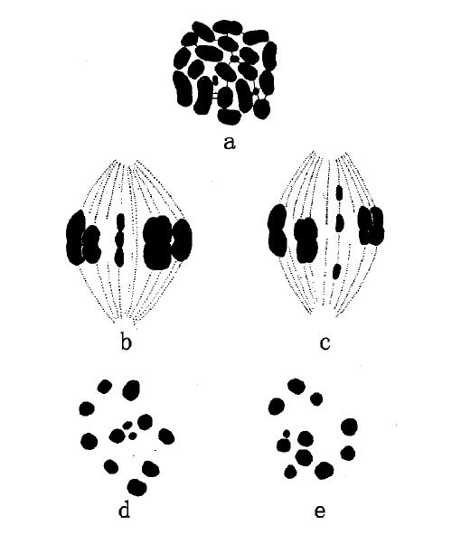
图62 示Metapodius的染色体。a.示精原细胞的染色体群，有三条m染色体；
b和c示精母细胞的侧面观；d和e示三条m染色体接合，两条趋入一极，一条趋入另一极（c的末期赤道板）（仿Wilson）
其次，我们知道，几条染色体可以彼此连接，从而减少一条或多条染色体，一条染色体又可以裂断，从而暂时增加一条（注：Hance描写过待霄草的染色体有时断裂成片。在灯蛾（Phragmatobia）和其他蛾类中，Seiler也描写过几个例子，其中某些染色体原来在精子和卵细胞内连接一起的，在胚胎细胞内却彼此分开。在蜂类的所有体细胞内，每一条染色体都被假定是断裂成两段的。在蝇类及其他动物的一些体细胞中，染色体可以分裂而细胞不分裂，从而使染色体的数目增加到二倍或四倍。），在任一种情况下，全部基因仍然被保存下来。最后，有些物种，雌者比雄者多一条染色体，另有一些物种，情形刚刚相反。所有这一切情况都经过了广泛的研究，而且是每一位研究细胞的学者所熟悉的。这类例子的存在并不使每一物种各有其特殊数目的染色体，而且染色体数目恒定不变（注：近几年来，Della Valle和Hovasse不承认在不同的组织细胞里染色体的恒定数目。这项结论是以两栖类身体细胞方面的研究为根据，但两栖类的染色体数目繁多，不容易精密辨别，所以他们的研究结果不足以推翻其他生物（甚至包括一些两栖类在内）方面的绝大多数的观察，在这些生物里，染色体的数目是能够精密决定的。）这个一般论点，归于无效。
我们也知道：在某些组织里，由于只有染色体分裂而无细胞分裂，或者由于染色体断裂为一定数目的部分，可以把染色体增加到二倍或四倍的数目。这些都是特殊的例子，不足以影响一般情况。
有一些个体突然出现，其染色体数目为该物种特有数目的两倍，这种例子，在近年来愈来愈多。这便是四倍体。又发现了其他多倍型，有的自然发生出来，有的起源于四倍体。我们总称之为多倍体。其中以四倍在许多方面最引人关注。
确实知道的四倍体动物，只有三个例子。寄生在马体内的线虫，即马蛔虫，共有两型，一型含两条染色体，另一型含四条。这两个变种彼此相似，甚至细胞的大小也相仿佛。蛔虫的染色体可以看成是一种复合体，是由许多较小的染色体（有时称之为染色粒）联合组成。在应该形成体细胞的胚胎细胞内，各染色体断裂成它的组成部分（图63a、b和c）。成分的数目恒定，或接近一个常数，二价型成分的数目约为单价型的两倍。这支持了这样的一种看法，认为二价型比单价型多一倍，而不是二价型由单价型染色体的分裂而来。
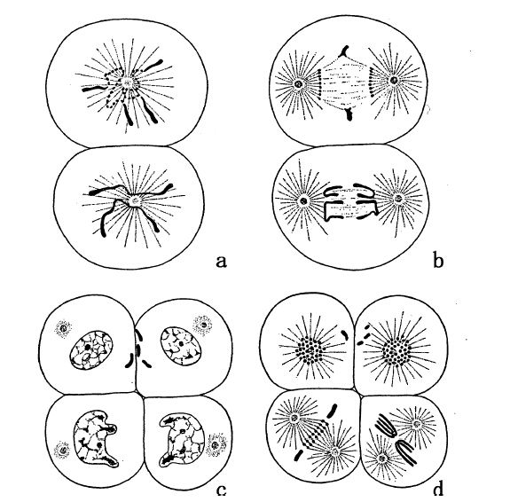
图63 单价型蛔虫的卵子含两条染色体，图示其最初两次分裂。a和b示染色体在一个细胞内的断裂作用；d示三个细胞的染色体已经断裂，第四个细胞的染色体依然完整，后者产生生殖细胞（仿Boveri）
根据Artom报道，海虾Artemia有两族的四倍体，一族有48条染色体，另一族有84条（图64）。后一族借单性生殖法繁殖。在这些情况下，不难想象，四倍体起源于原来是单性生殖的一族，因为，如果卵细胞保留一个极体，以致染色体数目加倍，或者由于在胞核第一次分裂后，染色体未能分离开来，以致数目增加一倍；这种双倍状态都是可能继续存在的。
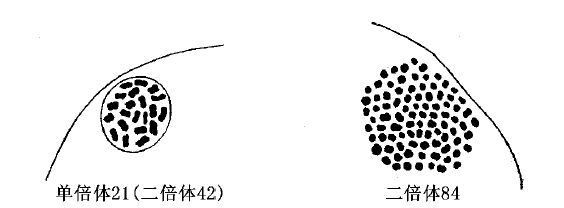
图64 Artemia salina二倍体（减数）与四倍体两族的染色体（仿Artom）
最早出现的植物四倍体中，有一种被德弗利发现，名叫巨型待霄草Oenothera gigas（图42）。最初并不知道巨型是四倍体，但德弗利看出它比杂种（拉马克待霄草）植株强壮，在其他许多细微特征上也有差异。巨型的染色体数目后来才弄明白。
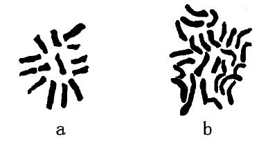
图65 a.拉马克待霄草的14条二倍染色体；
b.巨型待霄草的28条二倍染色体拉马克待霄草（Oenothera Lamarkiana）有14条染色体（单倍数7）。巨型待霄草（Oenothera gigas）有28条染色体（单倍数14）。图65表示上述两种植物的染色体群。
Gates测量过各种组织的细胞。巨型药囊的表皮细胞几乎为普通型体积的四倍，柱头的表皮细胞为三倍，花瓣表皮细胞为两倍，花粉母细胞比普通型约长一倍半。花粉母细胞的胞核为普通型体积的两倍。两型的细胞在外形上也有时有显著的差别。各种待霄草大多产生三叶的盘状花粉，而巨型的一些花粉则为四叶状。
Gates、Davis、Cleland和Boedijn研究过花粉母细胞的成熟过程。据Gates报道，拉马克待霄草的巨型通常有14对二价染色体（gemini），在第一次成熟分裂时，每条二价染色的两半分别走入一个子细胞。在第二次成熟分裂时，每一条染色体纵裂为两条，于是花粉粒各得14条染色体。据推想，在胚珠成熟中也发生了同样过程。Davis讲到当拉马克待霄草的染色体从联会混乱状态中出现时，染色体参差不齐地互相集结，而不是严格平行联合。随后，染色体分别趋入一极，完成了减数分裂。Cleland近来也讲过另一个二倍型物种Oenothera franciscana的染色体，在进入成熟纺锤体时，相互间端与端相连（图66）。在Davis早期发表的图内，有一些也略有端与端相连合的情况。
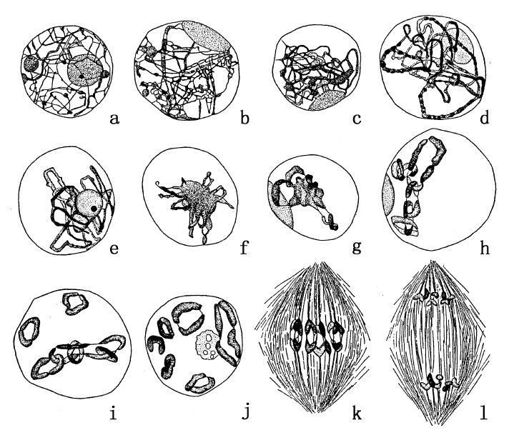
图66 Oenothera franciscana花粉母细胞的成熟过程（仿Cleland）
近年来在其他雌雄同株的显花植物中，也找到了一些四倍体。因为这类植株同时产生卵子和花粉，所以显然应该比雌雄异株的植物形成更多的四倍体。因此，如果植株一开始便是四倍体，那么，它会产生有着二倍数目的染色体的卵细胞和花粉细胞。经过自体受精，势必产生四倍体。相反，在雌雄异株的动物和植物中，一个个体的卵子必须同另一个体的精子受精。如果发生了一个雌性四倍体，其成熟卵子有二倍数目的染色体，卵子一般会同普通雄体的单倍型精子受精，结果只能产生三倍体。要从三倍体恢复到四倍体，机会是很少的。
谱系培养中所产生的四倍体，在说明四倍体的起源上，比偶然发现的四倍体，提供了更精确的知识。事实上，四倍体在人工控制下发生的例子，已经有了一些记录。Gregory发现了两种巨型的报春花primula sinensis：一种出现在两株二倍体植株的杂交里。因为亲株含有已知的遗传因子，所以Gregory能够研究四倍体中各种性状的遗传过程。根据他的研究结果，他无法决定：在四条相似的染色体中，某一条染色体究竟是同其他三条中的另一条特殊染色体联合，或者是同其中任何一条染色体联合。Muller分析同一数据，指出后一结论更为可能。
Winkler通过嫁接的媒介作用，得到一株巨型龙葵，Solanum nigrum和一株巨型番茄（Solanum lycopersicum）。就我们所知道的，嫁接作用本身对于四倍体的产生是没有直接关系的。
产生龙葵四倍体的方法如下。取番茄幼株的一段，嫁接在龙葵的幼茎上面，摘除龙葵所有的腋芽。10天后，沿嫁接平面横切（图67）。从切面的愈伤组织中，长出了一些不定芽。由此长成的植株中，有一株是嵌合体，也就是一部分组织为龙葵，一部分组织为番茄的植株。把嵌合体取下，并让其繁殖。新植株的腋芽中，有些由番茄的表皮和龙葵的中心柱组成。把这些枝条取下，另行栽培。这些幼小植株同其他确是二倍体的嵌合体有所区别，使人怀疑这种新型也许有一个四倍型的中心柱。检查结果，证实了这一点。截除嵌合体的顶梢，并且摘除下半部的腋芽。从愈伤组织的不定芽里，得到了全身都是四倍型的幼株。图68右侧示巨型龙葵，左侧为普通型（二倍体）或亲型。图69的右上示巨型的花，左侧为亲型的花。同图的左上示巨型和新型的苗木。
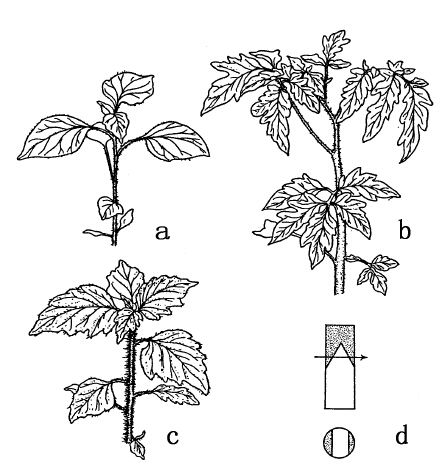
图67 a.龙葵的苗；b.番茄的苗；c.Solanum tubingense.的嫁接杂种；d.嫁接方法（仿Winkler）
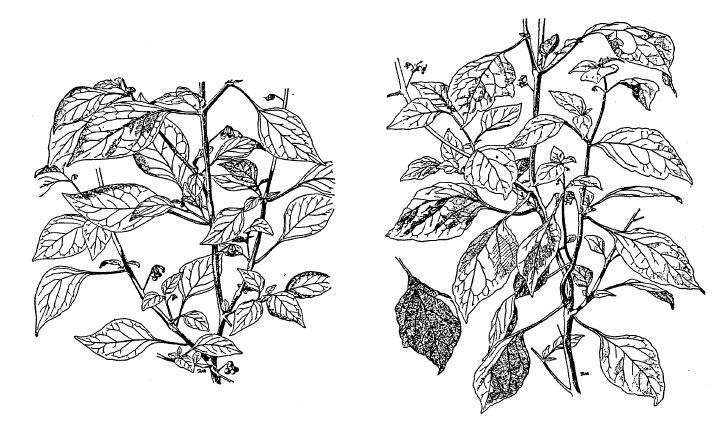
图68 左侧为亲型龙葵的普通二倍体；右侧为四倍体（仿Winkler）
图69下半部示若干组织细胞的差异。左侧示巨型叶和亲型叶的栅状细胞；右侧示两型气孔的保护细胞；其下则是两型的毛；巨型的髓细胞也比普通型大些。图下半部的中央左边为亲型花粉粒，右边为巨型花粉粒。
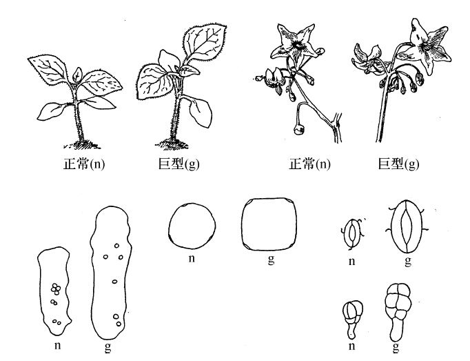
图69 上部示龙葵的二倍体和四倍体的苗木和花，下部示它们的组织。左上，苗木；右上，花；左下，栅状细胞；中，花粉粒；右下，上为气孔，下为毛（仿Winkler）
用以下方法也得到了一株四倍体番茄。取番茄幼株的一段，按照常用的方法嫁接在龙葵砧木的上面（图67）。待其完全联合以后，横切两种植物联合的部分，并且摘除砧木上的腋芽。从愈伤组织里长出了幼芽。移植这些幼芽。其中有一株由龙葵的细胞构成表皮，由番茄的细胞构成中心柱，进一步检查，发现表皮细胞为二倍体，中心柱细胞则为四倍体。为了从嵌合体造出全身都是四倍体的植株，于是横切嵌合体的茎，并摘除切面以下的腋芽。切面上发生新的不定芽，芽体内外大部分由番茄组织构成。巨型番茄植株和其亲型植株间的差异，同巨型和亲型龙葵间的差异，是一样的。
二倍体龙葵含24条染色体，其单倍数为12；四倍体含48条染色体，其单倍数为24。二倍体番茄含72条染色体（单倍数为36）；四倍体含144条染色体（单倍数为72）。图70和图71表示各型染色体。
像上面所提到的，直到现在我们还不知道嫁接对于愈伤组织内发生四倍型细胞，有什么明显的关系。这些细胞究竟怎样发生，也不明确，也可能像Winkler一度相信的那样，是由于愈伤组织中两个细胞的融合，但另一说法似乎更为可能，即正在分裂中的细胞，其胞质分裂受到抑制，于是染色体数目加倍，结果产生了四倍体。这样的四倍型细胞或者形成幼小植株的全体，或者形成其中心柱，或者形成其他任何部分。
Blakeslee、Belling和Farham在常见的曼陀罗（Datura stramonium）里发现了一种四倍体（图72下部）。就外形看来，它被描述为在几个方面同二倍型有差别。图73示二倍体（第二行）和四倍体（第四行）的蒴果、花以及雄蕊方面的区别。
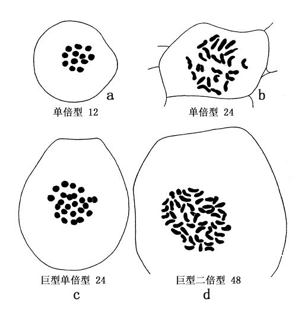
图70 a和b示龙葵的单倍型和二倍型细胞及染色体，c和d示四倍体龙葵的单倍型和二倍型细胞及染色体（仿Winkler）
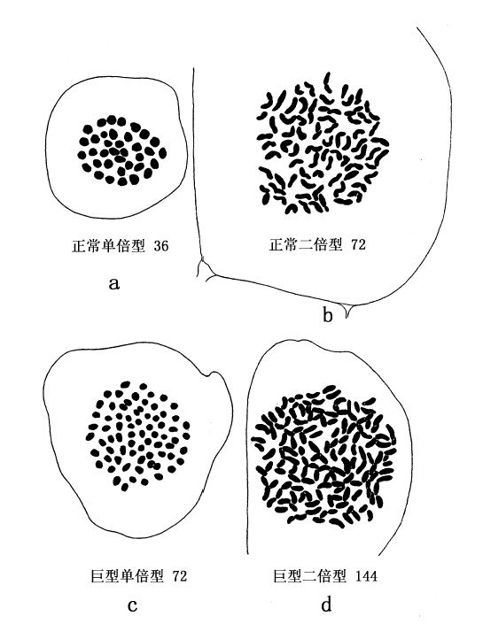
图71 a和b示番茄的单倍型和二倍型细胞及染色体，c和d示四倍体番茄的单倍型和二倍型细胞及染色体（仿Winkler）
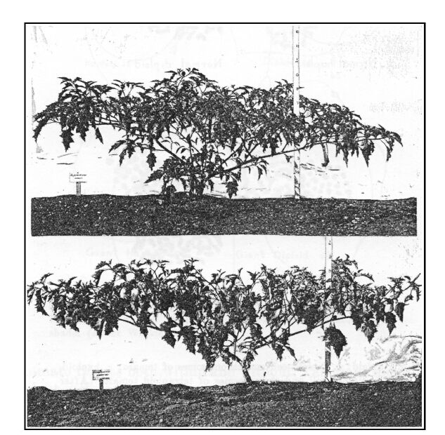
图72 上行示曼陀罗的二倍体植株；下行示其四倍体（仿Blakeslee）
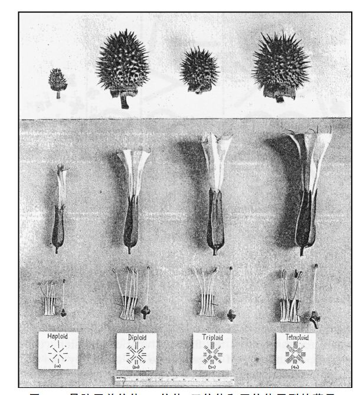
图73 曼陀罗单倍体、二倍体、三倍体和四倍体巨型的蒴果、花和雄蕊（仿Blakeslee，载在《遗传学》杂志上）
二倍体植株含12对染色体（24条染色体），按照Belling和Blakeslee的意见，这些染色体依体积大小可以安排为六型（图74），即大号（Ll）、中号（Mm）、小号（Ss）或2（L+4l+3M+2m+S+s）。单倍染色体群的方程式为L+4l+3M+2m+S+s。当这些染色体将进行第一次成熟分裂时（前期），它们形成一对一对的环状结构，或者以一端相连接（图75第二列）。以后在每一对中，一条接合体走到一极，另一条则趋向另一极。到第二次成熟分裂之前，每条染色体中缢，从而产生了图74a（注：原文为图74b，但根据作者的叙述，应该是图74a，译文中已予修正。——译者注。所示的形式。一半中缢后的染色体进入纺锤体的一极，另一半则进入另一极。每个子细胞各得12条染色体。
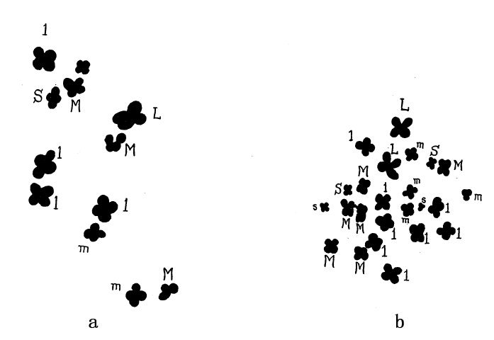
图74 a.曼陀罗二倍染色体群的第二次成熟分裂中期；b.曼陀罗四倍体（含24条染色体）相应的染色体群（仿Belling和Blakeslee）
四倍体有24对或48条染色体。在它们进入第一次成熟分裂纺锤体以前，它们每四条集合一起（图76和图75）。从两图中可以看到四价群内染色体联合的各种不同方式。染色体大致在这种状态下进入第一次成熟纺锤体。在第一次成熟分裂时，每个四价染色体的二条染色体趋入一极，另两条趋入另一极（图75）。每颗花粉粒有24条染色体。不过偶尔也可能有三条染色体同入一极，另两条趋入另一极（图75）。每颗花粉粒有24条染色体。不过偶尔也可能有三条染色体同入一极，另一条则趋入另一极。
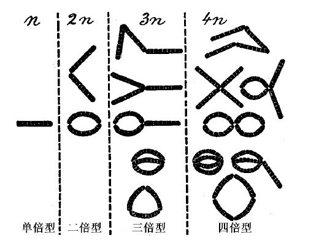
图75 曼陀罗二倍体、三倍体、四倍体各型染色体的接合方法（仿Belling和Blakeslee）
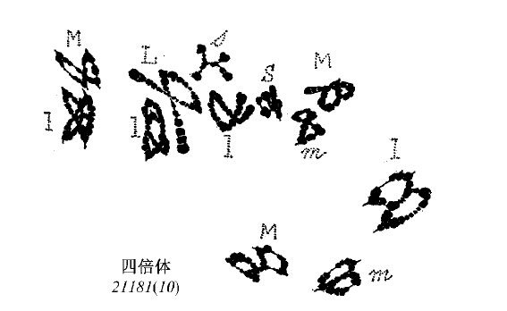
图76 曼陀罗四倍体的染色体互相接合，四条相同的染色体联合组成一个群（仿Belling和Blakeslee）
图75示第二次成熟分裂时四倍体的24条染色体。这些染色体和同一时期中二倍体的染色体相仿佛。每条的一半趋入一极，另一半则趋入对极。据Belling记载，有规则地分布的，即每极各得24条染色体（24+24）的，占68%；一极23条，另一极25条的（23+25），占30%；一极22条，另一极26条的，占2%。分布为21—27的，有一个例子。以上结果表示，在四倍体曼陀罗中，染色体不规则的分布，并不是少见的。这一点可用四倍体自体受精来进一步检验。让这样产生的子代生长成熟，并且计算其生殖细胞内染色体的数目。有55株植物，各含48条染色体，5株各含49条，一株含47条，另一株含48条（？）。如果染色体在卵细胞内像在花粉细胞内一样分布，结果含24条染色体的生殖细胞最可能生存下来，并且有作用。含48条以上的染色体的一些植株，由于增加了额外染色体，也许会产生染色体分布更不规则的新型。
De Mol发表了一种四倍体水仙（Narcissus）。其二倍体物种有14条染色体（七对），另有栽培的两个变种则各有28条染色体。De Mol指出，直到1885年为止，主要栽培的是矮小的二倍体变种。以后才出现了较大的三倍体；最后，约在1899年，又得到了第一株四倍体。
据Longley报道：墨西哥大刍草中，多年生teosinte所含染色体，为一年生teosinte染色体的两倍。多年生型有40条染色体（n＝20）（图77a）。一年生型有20条（n＝10）（图77c）。
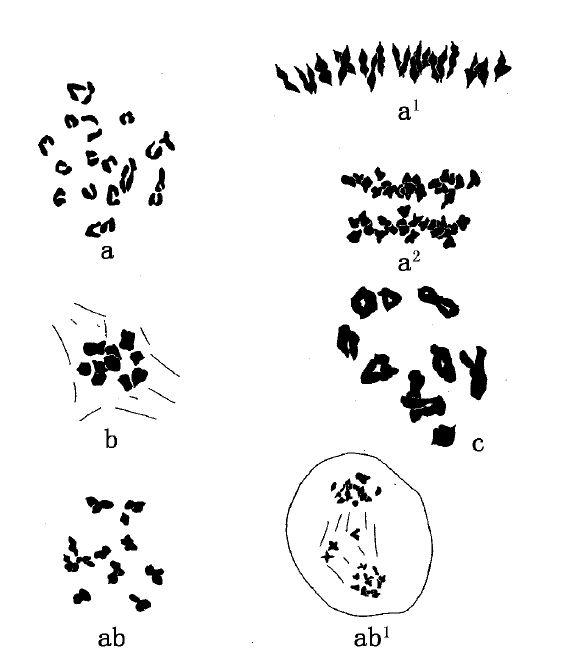
图77 a.多年生墨西哥大刍草（Euchlaena）第一次成熟分裂前期；有19条二价染色体和2条单染色体；a 1 .第一次分裂中期；a 2 .第一次分裂后期。b.玉蜀黍第一次成熟分裂前期，有10条二价染色体；c.墨西哥Euchlaena mexicana第一次成熟分裂前期，有10条染色体；ab.多年生Euchlaena同玉蜀黍所生的杂交一代的杂种，第一次成熟分裂前期，有3条三价染色体，8条二价染色体和5条单染色体；ab 1 ，同上，第一次成熟分裂后期的晚期（仿Longley）
Longley把两种teosintes同含20条染色体（n＝10）的玉蜀黍（图77b）分别杂交。一年生teosinte和玉蜀黍所生的杂种有20条染色体。新种的花粉母细胞成熟时，有10条二价染色体，二价染色体各自分裂，分别趋入两极，没有停滞在中途的。这意味着从teosinte得来的10条染色体，同从玉蜀黍得来的10条染色体，互相接合了。又多年生teosinte同玉蜀黍杂交的杂种有30条染色体。杂种花粉母细胞成熟时，其染色体互相接合，有两条一起的，有三条一起的；也有孤立无偶的（图77ab）。由此引起了后来分裂中的错乱情况（图77ab）。
当雌雄同株的植物性别决定问题不涉及分化性的性染色体时，它的四倍体可说是又平衡、又稳定。所谓平衡，就是说：它的基因之间的数字关系，同二倍体或普通型基因的数字关系，是一样的。所谓稳定，就是说：成熟机制能够使该型一旦建立以后会继续存在（注：Blakeslee对于这些词汇有不同的解释。）。
早在1907年，Elie和Emile Marchal便已用人工方法产生了四倍体藓类。每株藓有两个世代：一个是产生卵子和精子的单倍型原丝体时期（配子体），和一个产生无性孢子的二倍体时期（孢子体）（图78）。
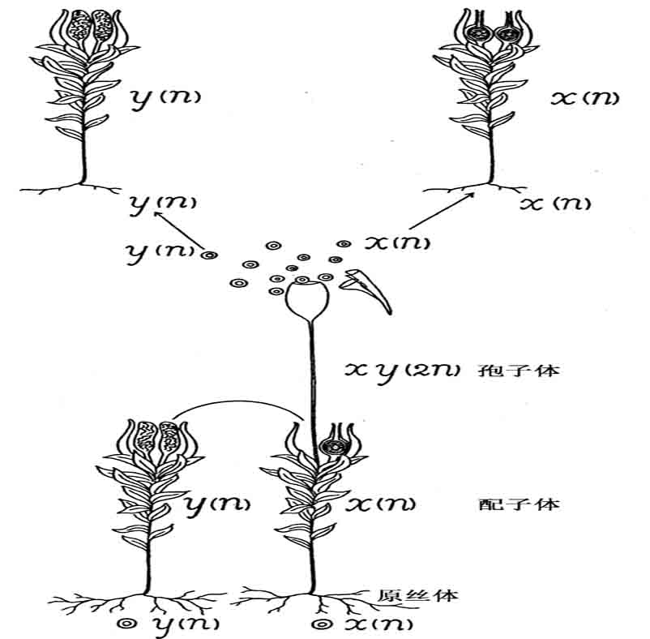
图78 雌雄同株的藓类的正常生活史
孢子体的一段在潮湿情况下，会产生由二倍型细胞组成的细丝。细丝发育成真正的原丝体，后者迟早会产生二倍型卵子和二倍型精细胞。两种生殖细胞联合，于是形成了四倍型孢子体（图79）。这里，正常单倍型被二倍型原丝体和藓的植株重复一次；二倍型孢子体又被四倍型孢子体重复一次。
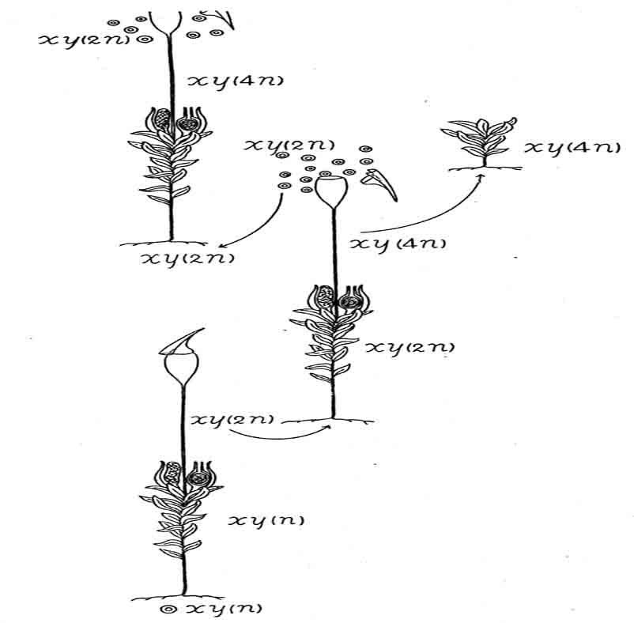
图79 正常雌雄异株的藓类，一段2n的胞子体再生，形成二倍型原丝体（2n），2n配子体通过自交，产生了四倍体或4n孢子体，四倍体再生，产生了四倍型配子体（仿Winkler）
两位Marchals对普通型和四倍体两者的细胞体积，作了比较测量。正常花被细胞的体积与四倍体同样细胞的体积有三种比例：1∶2.3，1∶1.8和1∶2。两型的精子器细胞体积比为1∶1.8，胞核体积比为1∶2。卵细胞体积比为1∶1.9。测量精子器（内藏精子）和颈卵器（内藏卵子），也表示在所有例子里，四倍体比正常型长些、宽些。显然，四倍体体积之所以增大，是由于有了较大的细胞，细胞之所以增大，又由于有了较大的胞核，而且像其他证据所已经证明过的，四倍体大核内的染色体又为正常型的二倍。这自然是在意料中的，因为四倍体是由正常孢子体再生出来的。
在孢子体世代中，2n孢子母细胞同4n孢子母细胞两者的体积比约为1∶2。
藓类的两次成熟分裂，即紧接着染色体接合后的两次分裂，发生在孢子体内孢子形成的时候，每个孢子母细胞产生四个孢子，藓类的染色体上如果带有基因，预料四倍体所有的加倍的染色体将会产生不同于正常型的比率。虽然Wettstein在几种藓类杂交中找到过遗传的显明证据，Allen在亲缘相近的几群藓类中也得到了配子体两种性状的遗传学证据，但是这方面的研究仍然是很少的。
在雌雄异体的藓类以及在某些苔类里，Marchals、Allen、Schmidt和Wettstein已经分别证明：在孢子形成的时候，与性别决定有关的要素分离开来。他们的观察和实验将于性别一章中讨论。
有许多涉及四倍体细胞体积方面的重要问题，是胚胎学上的问题，而不是遗传学上的问题。四倍体的细胞一般较大，往往大到两倍，不过组织不同，细胞大小也颇悬殊。
四倍体整个植株的大小以及其他一些特性，似乎都是由于细胞增大的缘故。如果这种解释是对的，这便意味着，这些特性属于发育范畴，而不属于遗传范畴。四倍体发生的方法，已经有了一些讨论。以上所提出的关于四倍体细胞内如何增加胞质的方法，尚有待于进一步的研究。
假设同一物种的两个细胞彼此融合，两个胞核也迟早联合，也许由此会产生四倍型细胞。假设四倍型细胞在生长期内，继续维持其两倍大的体积，预料会得出比正常型体积大两倍的卵子。大型胚胎的细胞同正常胚胎特有的细胞，在数目上预料是一样多的。
另一个可能的解释，即四倍型生殖细胞的体积，在二倍型母株的生殖细胞内，或者不能增加到两倍。这样，卵子也将不会大于正常卵子，但却带有两倍多的染色体。从这种卵子发育而成的胚胎，在达到能够从外界获得食物的胚后期或幼虫期以前，也许不能摄取足够的营养来增加它的细胞体积。至于在这样晚的时期，每个细胞内的双组染色体是否会扩大各该细胞的胞质，还是不确定的。不过下一代的卵子在母体内开始发育时，便有了四倍染色体，在这种情况下，卵子在分裂前增加到两倍的体积，也是可以想象的。
如果说在受精以后成熟卵子中，随着染色体数目的加倍，胞质也会立刻增加起来，这或者是不可期望的。在动物胚胎开始形成器官以前，它经历了相当一定次数的细胞分裂。如果胚胎一开始便是一个体积正常而染色体加倍的卵子，如果由于染色体的双倍数目以致卵裂时期比正常卵子提早结束，从而开始了器官形成，那么，这样的四倍体胚胎的细胞将会比正常胚胎的细胞大两倍，但数目却只有一半。
在显花植物里，胚囊空阔，并富于养料，也许为卵子发生大量的胞质提供了更有利的机会。
四倍型是物种增加基因数目的一种方法
从进化观点看来，与四倍体有关的最有趣的问题之一，就是四倍体似乎提供了增加新基因数目的机会。如果通过染色体数目加倍而发生了稳定的新型，又如果在加倍以后，四条相同的染色体，随着时间的进展，发生了差异，以致有两条更相类似，另两条也彼此更相类似，在这种情况下，除了许多基因仍然没有变化以外，在遗传学方面四倍体势必和二倍体相类似。每一组的四条染色体上，会有许多相同的基因，如果某一个体只有一对基因是杂合的，则孙代应该是孟德尔式比例的15比1，而不是3比1。事实上已经发现了这种比例（小麦和荠），但四倍性是否能解释上述结果，或者还有其他方法使染色体加倍，仍然有待于研究。
总的说来，在我们能够更多的了解新基因发生（如果现在还在发生的话）的方法以前，想利用四倍性来说明基因数目的增加，似乎是多少有点冒险的。在雌雄同株的植物中，新型确实可以这样发生，但在雌雄异体的动物里，除了单性生殖的物种外，四倍型是多半不能这样建立起来的，因为像上面所指出的，当四倍体同普通二倍型个体杂交时，四倍性便会失去，而且以后也不容易恢复。
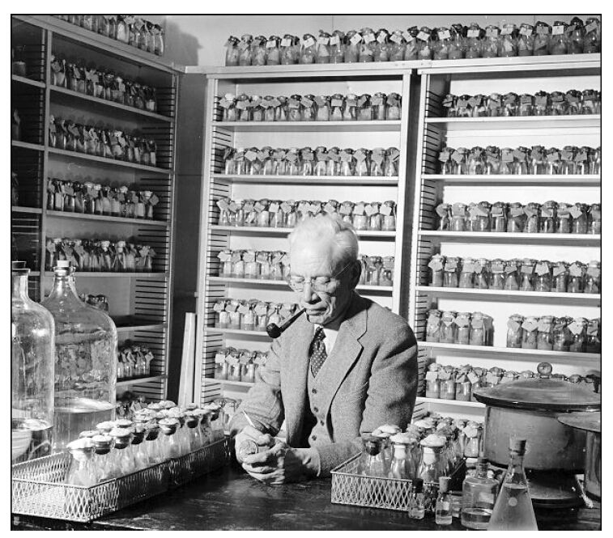
1949年斯特蒂文特在加州理工学院的实验中研究果蝇
第9章 三倍体
三倍型胚胎既然保持了基因间的平衡状态，所以预料它的发育是会正常的。唯一的不协调的因素，是三组的染色体和遗传下来的胞质分量两者间的关系。我们还不十分明了，这里发生了多少自动调剂作用，但不妨想象，至少在植物里，三倍体的细胞比正常型的细胞会更大一些。
1897年1月5日摩尔根致德里希（Hans Driesch）的几页手稿，摩尔根在此叙述了有关蚯蚓再生的情况。
在近来的著作中也有了许多三倍体的记录，其中有些起源于已知的二倍体，有些出现在栽培植物里，另一些则发生在野生状态下。
Gates和Anne Lutz描述过待霄草（半巨型）的三倍体植株，有21条染色体。以后德弗利、van Overeem和其他学者也描述过待霄草的三倍体。据说，这些三倍体是由二倍型生殖细胞同单倍型生殖细胞融合产生的。
Gates、Geerts和van Overeem分别研究了三倍型染色体在成熟时期内的分布情况。他们看到：虽然在一些例子里，染色体在减数分裂中的分布颇有规则，但是在另一些例子里，若干染色体却被扔掉了、退化了。Lutz女士确实看到三倍体的后代有悬殊。据Gates记载。在有21条染色体的植株中，第一次成熟分裂后的两个细胞“几乎始终”是10条对11条染色体，只是偶尔才有9条对12条。Geerts发现了更多的错乱情况。他谈到有七条染色体经常分别趋入每一极，其余不成对的七条则不规则地分到两极。这项记载很符合于主张七条同七条接合，其余七条孤立无偶的见解。van Overeem谈到在待霄草里，如果用三倍体为母株，结果证明大多数胚珠都有作用，不管无偶的染色体是如何分布的，换句话说，细胞虽有各种不同的染色体组合，但全部或者大多数卵子都能生存，并且可以受精。其结果便是出现了具有许多不同染色体组合的各种各样的植株。另一方面，如果用三倍型待霄草的花粉，结果证明只有含7条或14条染色体的花粉才能发生作用。含中间数目的花粉粒大都无效。
De Mol在栽培的风信子Hyacinth里发现过三倍体。他说：由于被选用为商品的缘故，三倍体的风信子正在代替旧型。三倍体的一些后代含有三倍左右的染色体，它们构成了现代栽培类型的重要部分。风信子一般用球茎繁殖，所以任何特殊品种都能够继续绵延。De Mol研究了正常型和三倍体风信子生殖细胞的成熟分裂（图80）。正常二倍型的染色体有8条长的、4条中等的和4条短的。

图80 风信子花粉母细胞的三倍染色体群（仿Belling）
单倍型生殖细胞的染色体却是4条长的、2条中等的和2条短的。De Mol和Belling都指出了“正常”型减数分裂后的染色体既然每种大小都有两条，所以“正常”型也许已经是一种四倍体。如果真是这样，则所谓三倍体也可能是一种双倍的三倍体，因为它有12条长的、6条中等的和6条小的。
Belling又研究了美人蕉Canna的一个三倍体变种的成熟分裂。各种大小的染色体都是三条接合在一起。当染色体分离时，在每个三条接合染色体当中，一般是两条趋入一极，另一条则趋入另一极，但由于不同类型的染色体之间都是独立分布的，所以分裂后的姊妹细胞中只有极少数才是二倍型和单倍型。
Blakeslee、Belling和Farham报道了一种三倍体曼陀罗。这植株是由四倍体同正常型受精后产生的。正常二倍型有24条染色体（n＝12）（图81a）。三倍型有36条染色体（图81b）。单倍染色体群中有一条特大号（L），4条大号（l），3条大中号（M），2条小中号（m），1条小号（S）和1条特小号（s）。所以二倍型染色体群为2（L+41+3M+2m+1S+1s），而三倍型群则每类各有三倍。

图81 a.二倍体曼陀罗的减数染色体群；b.三倍体曼陀罗的减数染色体群（仿Belling和Blakeslee）
Belling和Blakeslee研究了三倍体的成熟分裂。减数染色体群分为12类，各由三条联合而成，如图81b。在体积关系上，各类三价染色体同二倍体的二价染色体是一样的，即只能由相同的染色体组成，并且联合成图中所示的各种不同方式。两条染色体可能借它们的两端互相连接，第三条则只有一端相连等等。
在第一次分裂时，每一类的三价染色体中有两条走到纺锤体的一极，另一条则走到相反的一极（图75第三列），不同类的三价染色体之间既然是自由组合，所以得出了几种不同的染色体组合。下表表示三倍体曼陀罗84个花粉母细胞所含染色体的数字，结果很符合于根据自由组合所推测的数字。

三倍体的第一次成熟分裂，偶尔不能进行。短时间的低温处理是有利于这种变化的。在第二次分裂时，染色体进行均等分裂（注：均等分裂（oquational division）指一条染色体纵裂为两条，与减数分裂中互相接合的两条染色体的分离不同。——译者注。），结果产生了两个巨型细胞，各有36条染色体。
三倍体一般产生很少的有作用的花粉粒，但是有作用的卵细胞似乎比较常见。例如，三倍体从正常植株受精，其正常型后代（2n）的数目远远超过根据卵子内染色体自由组合假设所预料的数字。
三倍体果蝇是Bridges发现的（图82）。三倍体有三条X染色体，同各类的三条常染色体平衡，所以是雌性。正常这种平衡，产生了正常雌蝇。我们既然知道所有染色体上面的遗传因子，因此有可能利用后代里的性状分布情况，来研究染色体在成熟时期内的行动，也有可能研究交换，以及决定染色体是否是以三条为单位互相配对。
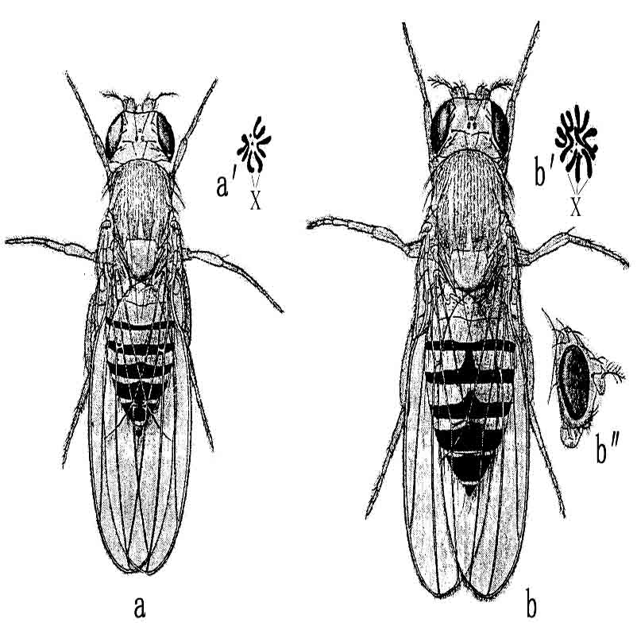
图82 a.正常雌果蝇（二倍体）；b.三倍体果蝇
真正的三倍体果蝇有三组普通染色体，又有三条X染色体。反之，如果只有两条X染色体，则该个体为性中型（注：性中型（intersex）也称中间性。——译者注。）。如果只有一条X，则该个体为超雄性。这些关系如下：
3a+3X＝三倍体雌蝇
3a+2X＝性中型
3a+1X＝超雄性
在雌雄异体的动物里，发现了一种胚胎时期中的三倍体。据报道：蛔虫的二价型雌虫产生含两条染色体的成熟卵子，各个成熟卵子同含一条染色体的单价型精子受精。受精卵发育成胚胎，每个胚胎细胞各有三条染色体。因为在生殖细胞尚未成熟时，胚胎便已从母体逸出，所以没有看到染色体行动上一个最重要的特点，即染色体在接合时期内的联合，一直也没有发现过三倍型的蛔虫成虫。
另一种产生三倍体的方法就是把两个二倍体物种杂交，再把杂种（因为没有接合和减数分裂，所以产生三倍型生殖细胞）回交一个亲型原种。Federley用三种蛾类做过这类的实验，三个物种的染色体数字如下表所示：
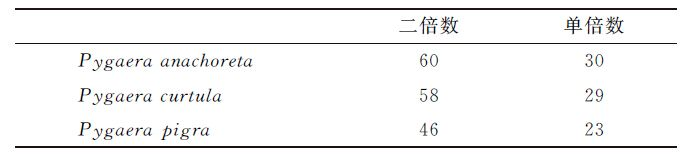
头两种杂种有59条染色体（30+29）。当杂种的生殖细胞达到成熟时期，染色体之间没有互相接合。在第一次成熟分裂时，59条染色体各分为两条子染色体。每个子细胞各得59。在第二次成熟分裂时，出现了许多不规则的性状。每条染色体再度分裂成两条，但两条往往不能分离开来。虽然如此，雄虫仍然有部分可孕性，而且像实验结果所证明的，它的一部分生殖细胞有着全部的染色体。杂交一代的雌蛾没有生殖力。
如果把F 1 雌蛾回交一个亲型，例如回交anachoreta种，anachoreta种的成熟卵子有30条染色体，那么，孙代杂种有89条染色体（59+30），因而是一个杂种三倍体。孙代杂种和子代杂种极相类似。前者有两组anachoreta型染色体和一组curtula型染色体。虽然在各个世代中只有半数的染色体彼此接合，然而在某种意义上，它们却是一种永久性的杂种。譬如当含89条染色体的杂种生殖细胞成熟时，两组anachoreta型染色体（30+30）彼此接合，29条curtula型染色体则依然孤立。在第一次分裂中，接合中的anachoreta染色体彼此分离，curtula染色体则各自分裂开来，于是每个子细胞各得59条。在第二次分裂中，59条染色体又各自分裂。因此，生殖细胞各得59条染色体，成为二倍型。只需要继续进行回交，便有可能来产生三倍型个体。不过，在控制情况下利用回交来维持一个三倍体品系，虽然不无可能，但由于在杂种精子发生过程中的紊乱情况，杂种的后代没有生殖力，所以要在自然条件下建立一族永久性的三倍体，一般是做不到的（注：我把这里的叙述有意地简化一点。在F 1 杂种体内，一条或多条染色体有时似乎接合起来。这时染色体或者会发生减数分裂，从而使F 2 杂种的生殖细胞增减一条或多条染色体。）。
三倍型胚胎既然保持了基因间的平衡状态，所以预料它的发育是会正常的。唯一的不协调的因素，是三组的染色体和遗传下来的胞质分量两者间的关系。我们还不十分明了，这里发生了多少自动调剂作用，但不妨想象，至少在植物里，三倍体的细胞比正常型的细胞会更大一些。
其他通过两个野生物种（其中一种有二倍于另一种的染色体）杂交所发生或者产生的三倍体，将于后面一章另作说明。
第10章 单倍体
遗传学证据指明：至少要有一整组的染色体，才能进行正常的发育。胚胎学证据也证明：一组染色体为发育所必需。但不能由此断言，就所涉及的发育条件来说，单倍染色体能够直接代替二倍染色体而不发生严重的后果。
曼陀罗的花和果实果蝇的生活史。
遗传学证据证明：至少要有一整组的染色体，才能进行正常的发育。含一组染色体的细胞可以称为haploid（单倍型）。由这种细胞所组成的个体有时称为haplond（单倍体）或者引申一下，常常称为haploid（单倍体或单倍型）。胚胎学证据也证明：一组染色体为发育所必需。但不能由此断言，就所涉及的发育条件来说，单倍染色体能够直接代替二倍染色体而不发生严重的后果。
卵子经过人工刺激后可以发育成胚胎，这种胚胎细胞只有一组染色体，但由于卵子在开始发育前，胞质的分裂受到抑制，以致染色体增加到两倍的，也不在少数，而且比单倍体生活得更好一些。
切一片海胆卵子，使其同一条精子受精，便能够得到一个含有父方单组染色体的胚胎。Spemann和以后的Baltzer在蝾螈（Triton）卵子受精后，立刻中缢卵子，有时能够分离出一片只含一个精核的卵子胞质（图83），其中有一个被Baltzer培养到变态时期。

图83 蝾螈卵子在受精后立刻中缢为二，右半边示极体（仿Spemann）
用X射线或镭射线在足够的时间内照射蛙卵，损伤或破坏其染色体，然后，像Oscar Hertwig和Gunther Hertwig所证明的，使之受精，这些受精卵也可以发育成含半组染色体的细胞所组成的胚胎。反之，蛙精子在照射后虽然可以进入卵子，但对于发育不能再有作用。在这些情况下，卵子只有卵核的单组染色体，可以进行染色体的分裂而无胞质的分裂，从而在发育开始以前恢复了染色体的总数。这些卵子经过胚胎时期，发育成为正常的蝌蚪。
用以上各种方法所产生的人工单倍体，大多数都是衰弱的。在大多数例子里，它们在未达成年时早已夭折。其原因不明，但可以考虑几种可能性。如果用人工方法，刺激含有单倍型胞核的整个卵子，使之进行单性发育，又如果在开始分化（器官形成）前，该卵分裂次数和正常卵的相等，那么，就细胞体积对于所含的染色体数目之间的比例来说，它的每一个细胞的体积势必是正常细胞的两倍。细胞既然依靠它的基因来进行发育，因此，也可能由于基因物质欠缺，以致对于两倍大的胞质不能产生正常的效应。
另一方面，这种卵子如果在开始分化以前，比正常卵多分裂一次，那么，染色体数目（即胞核体积）与其细胞体积，便会维持正常的比例——整个胚胎便会比正常胚胎有两倍多的细胞，也有两倍多的胞核。胚胎作为一个整体说来，会含有和正常胚胎同样多的染色体总数。至于该例中较小的细胞体积，对于发育过程，究竟有多大影响，目前还不明了。根据单倍体上细胞体积方面的观察，似乎表明细胞体积如常，胞核却只有正常核的一半。看来，胚胎还没有像刚才谈的那样校正它的胞核胞质关系。
人工单倍体的衰弱是否由于细胞体积正常而基因欠缺这个问题，或者可能从另一方面来决定。含一个精核的半个卵子，如果经过了正常卵子那样多的分裂次数，则胚胎细胞和其胞核之间，将会维持正常的体积比例。事实上，这一类的海胆胚胎早已知道了。它们变成看来是正常的长腕幼虫，但是还没有一个超过了这个阶段，因为由于某种原因，甚至正常胚胎在人工条件下也难培养到这个阶段以后，因此，这些单倍体的生活力是否和正常胚胎一样，还不明确。Boveri和其他学者广泛地研究了海胆卵子的断片，大多数断片也许小于半个卵子。Boveri断定：在原肠形成时期以前或者紧接原肠形成时期之后，大多数单倍体都夭折了。这些断片可能始终没有从手术中完全恢复过来，或者它们没有包含胞质所有的重要成分。
这些胚胎如果同正常二倍型卵子的裂球隔离后所形成的胚胎比较一下，便有若干有兴趣之点。当海胆卵子分裂为二细胞，四细胞或八细胞时，可以用无钙海水处理，把这些裂球各个分离开来。这里并没有手术上的损伤，每个细胞都有双组的染色体。然而有许多1/2裂球发育不正常，1/4裂球中能发育成长腕幼虫的更少，至于1/2裂球能超过原肠形成时期的，也许一个也没有。这个证据表明：除染色体数目和胞核胞质比例以外，小体积本身也有不利的影响。我们不明白这究竟意味着什么，但表面和体积之间的关系，随着细胞的大小而异，这也可能是上述结果中的一个因素。
根据这些实验看来，在已经适应于二倍体状态的物种中，要用人工方法减少卵子胞质来取得正常的生活茁壮的单倍体，是没有多大希望的。不过在自然条件下，存在着几个例子的单倍体；有一个例子，其二倍体物种的单倍体还存活到了成年。
Blakeslee在栽培的曼陀罗里发现了一株单倍体（图84）。他细心保护这株植物，并且把它嫁接到二倍体植物上面，维持达数年之久。除了产生极少数单倍型花粉以外，这株植物在所有主要性状上，都和正常植株相似。所产生的花粉粒都是在拼命渡过成熟时期以后才得到了一组染色体的。

图84 一株单倍体的曼陀罗（仿Blakeslee，载在《遗传学》杂志里）
根据Clausen和Mann（1924）的报导：在烟草Nicotiana Tabacum和Nicotiana sylvestris杂交中，出现了两株单倍型烟草，各有24条染色体，为Tabacum种的单倍数目。有一株单倍体等于亲型Tabacum“变种”的“缩小复制品”，不过性状表现得稍为夸大一些。该株高约为亲型的3/4，叶小，枝细，花也显然小一些。它没有亲型那么健壮，花朵茂密，但不结种子。花粉完全残缺。另一株单倍体对于它的Tabacum亲型变种，表现了同样的关系。这两株单倍体的花粉母细胞经历了不规则的第一次成熟分裂，少数或多数染色体走到两极，剩下的则滞留在纺锤体的赤道上。第二次成熟分裂比较规则一些，但落后的染色体仍未能到达任何一极。
在父母任一方为二倍体的两物种里，自然似乎已经成功地产生了少数的单倍体。蜜蜂、黄蜂和蚁类的雄虫都是单倍体。后蜂的卵子有16条染色体（注：根据Nachtsheim的观察和解释：未成熟的蜂卵原有32条染色体，但由于染色体两两密切接合，所以看来只有16条。实际上，每一条都是“双染色体”或二价染色体。在成熟分裂开始以前，16条二价染色体又两两接合成8条“四价染色体”。经过减数分裂，成熟卵子各得8条二价染色体，实际上是16条单价染色体。精母细胞原有16条单价染色体，因为没有减数分裂，所以成熟精子仍然各得16条单价染色体。雄蜂由卵子单性发育而成，所以只有16条单价染色体（单倍体）。后蜂和职蜂各由受精卵发育而成，所以有32条染色体。
图85中，染色体数字8 2 ，在第一次分裂时指八条四价染色体而言，在第二次分裂时则指八条二价染色体而言。——译者注。），在接合后形成八条二价染色体（图85）。两次成熟分裂发生后，染色体减为八条。卵子如果受精，即发育成雌性（后蜂或职蜂），有二倍数目的染色体；卵子如果不受精，则以半数的染色体进行单性发育。
取雌雄两种蜜蜂的各种组织，检查其胞核体积与细胞体积（Boverr、Mehling、Nachtsheim），证明了二倍体与单倍体之间的差别，一般是不恒定的。不过，在雌蜂和雄蜂的早期胚胎时期里，有一种特别现象，使情况稍为复杂。在雌雄胚胎细胞内，每一条染色体似乎是分开成为两个部分，染色体增加到开始时的两倍。在雌性胚胎细胞中也发生了同样的过程，而且染色体甚至再度重复，以致看起来也有了32条染色体。这项证据似乎指示了染色体实际上并未增多，只是各自“断裂”而已。如果这是一个正确的解释，则基因数目也没有一点增加。雌蜂的染色体仍然是雄蜂的两倍。这种断裂作用对于胞核大小，究竟有什么关系（如果有的话），目前还不明了。

图85 示蜜蜂卵子的两次成熟分裂。图下部示卵子同精子受精以后，染色体各分裂为二，使数目加倍
在雌雄两者的germ-track内，似乎没有发生断裂作用，如果发生了的话，这些断片在成熟时期前早已重新联合了。
细胞在成熟时期中的行动，是最好的证据，用来说明雄蜜蜂是一个单倍体，或者至少它的生殖细胞是单倍型。第一次成熟分裂流产了（图86a、b）。一个不完全的纺锤体形成起来，上面有八条染色体。一部分胞质分离出来，其中没有染色质。第二纺锤体发生了，染色体各自分裂（图86d~g），料想是借着纵裂进行的，半数的子染色体走到各极。从较大的细胞里分出一个小细胞来。大细胞变成有作用的精子，含有单倍数目的染色体。
据说，锥轮虫Hydatina senta的雄虫为单倍体（图87c），雌虫为二倍体。在营养条件恶劣的情况下，或者用原生动物Polytoma饲养时，只出现雌轮虫。雌虫为二倍体，它的卵子最初也是二倍型。每个卵子只分出一个极体——每条染色体分裂成相同的两半。因此，借单性发育成为雌虫的卵子，仍然保留了全部的染色体。如果用别种食物（例如眼虫），便会出现一种新型的雌虫。如果当该虫从卵壳孵出时即从一个雄虫受精，则所产生的卵子都是有性的，每个卵子放出两个极体，保留了单倍数目的染色体。已经进入卵内的精核，同卵核联合，形成二倍体雌虫，雌虫重新开始一个单性繁殖的谱系。但是，上述的特种雌虫如果不受精，便会产生较小的卵子；卵子放出两个极体，多份保留了半数的染色体，以后经过单性发育，形成雄性单倍体。雄虫在孵出后数小时便已成熟，不再生长，几日内死去。

图86 雄蜜蜂生殖细胞的两次成熟分裂（仿Meves）

图87 a.锥轮虫Hydatina senta的单性繁殖的雌虫；b.同样的幼年雌虫；c.同样的雄虫；
d.单性繁殖的卵子；e.发育成雄虫的卵子；f.冬季卵（仿Whitney）
Schrader证明雄性白“蝇”Trialeurodes vaporariorum是单倍体。A.W.Morrill发现：在美国，该蝇未经交尾的雌虫，只能产生雄性后代，Morrill和Back在同科的另一种中，也看到了同一现象。另一方面，Hargreaves和Williams先后报导，在英国，同种雌性白蝇未交尾时只产生雌虫。1920年，Schrader研究美国种的染色体：雌虫有22条，雄虫有11条。成熟卵子原有11条二价染色体。两极体被放出后，卵内只留下11条单价染色体。卵子受精，另添精核的11条染色体。未受精的卵子则进行单性发育，其胚胎细胞各有11条染色体。当雄虫的生殖细胞成熟时，看不出一点减数分裂的痕迹（甚至像蜜蜂那样的微弱过程也没有），它的均等分裂同精原细胞的分裂没有区别。
如Hindle的繁育实验所启示的，有些证据表明，未受精的虱卵发育成为雄虱。有一种恙虫Tetranychus bimaculatus，其未受精的卵子发育成雄虫，受精的卵子发育成雌虫（依据几个观察者的报导）。Schrader（1923）证明过雄虫为单倍体，只有三条染色体；雌虫为二倍体，有六条染色体。卵巢内的卵子最初有六条染色体，以后，染色体两两接合，形成三条二价染色体。卵子受精时，增加了三条染色体，结果造成雌虫的六条染色体。未受精的卵子则直接发育成为雄虫，其细胞内各有三条染色体。
A.F.Shull研究过一种蓟马Anthothrips verbasci的雌虫，在未交尾时，未受精的卵子只能发育为雄虫。雄虫多半是单倍体。
藓类和苔类的原丝体以及藓类的植株世代（即配子体）都是单倍体。Wettstein用人工方法使原丝体细胞得出二倍型原丝体和二倍型藓类植株。这个结果证实了这个世代和孢子体世代两者间的差异，不是由各世代所有的染色体的数目所造成的，而是在这样意义上的一种发育现象，就是孢子必须经过配子体状态才能达到孢子体世代。
第11章 多倍系
这点也许是重要点：即多倍系发生在几个被认为是多形的群里，因为这些群相互间既有变异，又相近似，而且在许多例子里不能从种子繁殖同一类型，所以分类学者感到惘然。但这一切都是和细胞学上的观察结果相符合的。只就这些染色体群都是平衡的这一点来说，遗传学上可以预料到，这些植株应该互相类似；例外的，只是细胞体积的扩大，可以引起一些影响各该植物结构的物理因素，以及基因数目的增加，可以在胞质里引起一些化学效应。
常见的多倍体植物。
根据近年来的报导，有愈来愈多的亲缘很近的野生类型的驯化类型，它们的染色体数目都是一个基本单倍数值的一些倍数。多倍系成群地发生，这启示了在同一系内，染色体倍数较大的，是由染色体倍数较小的递增而来。至于分类学者是不是把这种类型当做稳定的物种，应该由他们来决定。
这点也许是重要点：即多倍系发生在几个被认为是多形的群里，因为这些群相互间既有变异，又相近似，而且在许多例子里不能从种子繁殖同一类型，使分类学者感到惘然。但这一切都是和细胞学上的观察结果相符合的。只就这些染色体群都是平衡的这一点来说，遗传学上可以预料到，这些植株应该互相类似；例外的，只是细胞体积的扩大，可以引起基因数目的增加，还可以在胞质里引起一些化学效应。
多倍体小麦
谷类如小麦、燕麦、黑麦和大麦，都有一些多倍染色体群。以小麦一系研究最为广泛，其杂交后的少数杂种类型也已经检查过了。单粒小麦（Triticum monococcum）的染色体最少，共14条（n＝7）。单粒小麦属于单粒（Einkorn）群，Percival（1921）把它的根源追溯到新石器时代的欧洲。另一型为爱美尔小麦群，有28条染色体，生长在史前时代的欧洲以及早在公元前5400年的埃及，直到希腊—罗马时代，才被含28条染色体的小麦和软粒小麦群中一种含42条染色体的类型（图88）所代替。爱美尔小麦群内变种最多，但软粒小麦群却有更多的不同“类型”［原文为forms］。
有几个人研究各种小麦的染色体，最近的有坂村彻（1920）、木原均（1919，1924）和Sax（1922）的研究。以下大部分取材于木原均的专著，一部分引用了Sax的论文。下表表示观察到的二倍染色体数目以及观察或估计到的单倍数目。
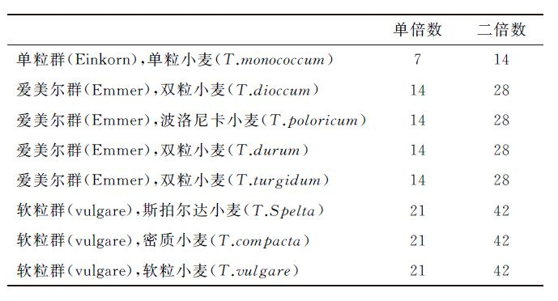

图88 二倍体、四倍体和六倍体小麦减数分裂后的染色体数目（仿木原均）
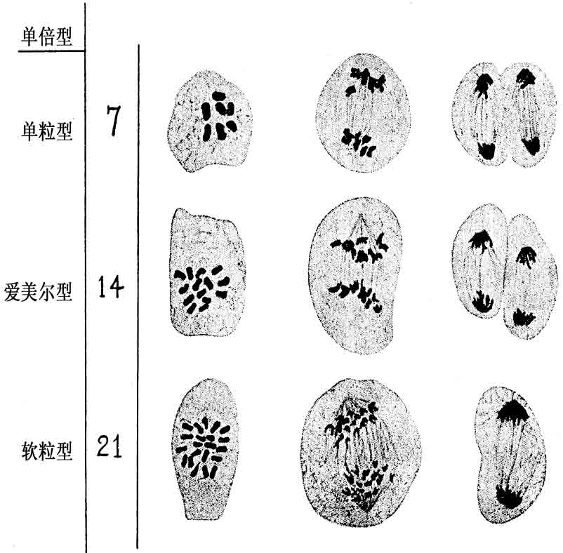
图89 二倍体、四倍体和六倍体小麦第一次成熟分裂即减数分裂（仿Sax）
图88a（单粒小麦），图88c（坚粒小麦）以及图88h（软粒小麦）各代表单倍型群。图89从Sax处获得，表示上述各群的正常成熟分裂。单粒小麦（Einkorn）有七条二价染色体（即接合染色体），在第一次成熟分裂时，二价染色体各分为二，每极得七条染色体。没有一条逗留中途的。子细胞进行第二次分裂，七条染色体各自纵裂为两半，每极得七条。爱美尔小麦型有14条二价染色体，在第一次成熟分裂中，二价染色体各分裂为二，每极得14条。在第二次成熟分裂时，染色体各自纵裂，每极得14条染色体。软粒小麦Vulgare型有21条二价染色体，在第一次成熟分裂中，二价染色体各分裂为二，每一极得21条。在第二次成熟分裂时，染色体纵裂，每极得21条。
这一系类型可以解释为二倍体、四倍体和六倍体。每一类型都是平衡的，每一类型都是稳定的。
在上述各种不同染色体数目的类型中，有几个类型进行过杂交，产生了各种不同组合的杂种，其中有一些稍具生殖能力，有一些完全不孕。有几种组合的父母两方，各有不同的染色体数目；从这些染色体的行动中，揭露出来一些重要关系。现在用几个例子说明于下。
木原均研究了爱美尔型和软粒型杂交的杂种，爱美尔型有28条染色体（n＝14），软粒型有42条（n＝21），而杂种却有35条，所以是一个五倍体杂种。当成熟时（图90a~d），有14条二价染色体和七条单染色体。二价染色体各自分裂，每极得14条；单染色体则零乱分布于纺锤体上，并且在“减数”染色体分别走到两极以后，仍然滞留在那里（图90d）。随后，这些单染色体各自纵裂，子染色体分别走向两极，但不十分整齐。当染色体平均分布时，每极会得到21条染色体。
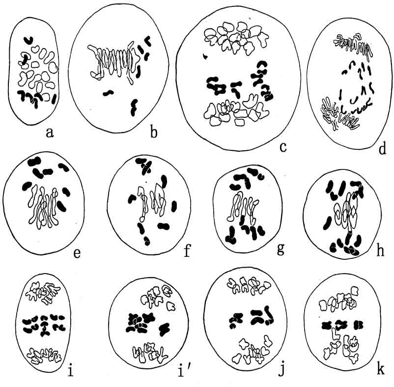
图90 杂种小麦的减数分裂（仿木原均）
这里应该附带提到Sax研究三倍体小麦的结果，这时七条单染色体并不分裂，而是不平均的分布到两极，最常见的比例是3∶4（图91）。
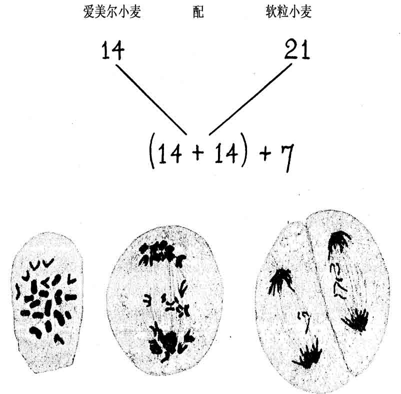
图91 爱美尔小麦和软粒小麦的杂种，示减数分裂（仿Sax）
根据木原均的记载，在第二次分裂时，出现了14条正在纵裂中的染色体和七条不分裂的染色体。前者分裂开来，每极得14条；其余七条单染色体则零乱地分布，最多见的是三条到一极，四条到另一极。Sax认为七条单染色体以及14条减数后的染色体都在第二次分裂时为二。
不论哪一种解释适用于单染色体（在别的生物中两种解释都有先例可援），一个明显的重要事实是：只有14条染色体，才互相接合。至于究竟是爱美尔小麦的14条染色体与软粒小麦的14条染色体互相接合，或者是爱美尔小麦的14条联合成七条接合体，而余下七条单染色，这一点从细胞学证据看来，是不明确的。在这些组合或其他类似组合（这一种产生可育性杂种）方面的遗传学研究，也可能提供决定性证据，不过目前这方面研究还是缺乏的。
木原均又用有14条染色体（n＝7）的单粒小麦同有28条染色体（n＝14）的爱美尔小麦杂交。杂种有21条染色体，为三倍体。当杂种生殖细胞（花粉母细胞）成熟时，其染色体分布情况比上例更乱（图90e~k）。接合染色体的数目多少不一，染色体之间的联合，如果发生的话，也不完全。下表表示二价染色体数目上的变化。
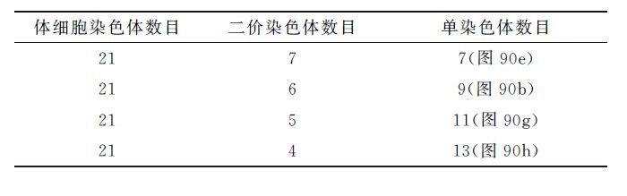
第一次分裂时，二价染色体分裂为二分，每半走到一极。单染色体在未达到一极或另一极时，不是每次都有分裂；有些未经分裂，便达到两极，另一些先行分裂，每半各趋一极。七条单染色体滞留在两极染色体群之间的中央平面上，也并不少见（图90i）。下表表示三次测定的数字。

第二次分裂时一般有11或12条染色体：有些是二价染色体（纵裂），其他为单染色体。前者分裂正常，子染色体走入一极或另一极；单染色体却以不分裂状态，分布到此极或彼极。
从这项证据说来，在杂种里，不可能决定究竟是什么染色体在接合。二价染色体既未超过7条，说它是爱美尔小麦的14条染色体彼此接合也可以。
从爱美尔小麦同软粒小麦杂交中得到了可孕性杂种。木原均研究过在F 3 、F 4 和以后世代中一些杂种进行成熟分裂时的染色体。各植株的染色体数目多少不一，在成熟分裂中某些染色体的分布也不规则，从而引起更多的紊乱，或者重新建立像在一个亲型那样的稳定类型，等等。这些结果虽然在研究杂种遗传上是重要的，不过太复杂了一些，不适合我们目前的目的。
木原均研究了软粒小麦和一种黑麦的杂种，软粒小麦有42条染色体（n＝21），黑麦有14条染色体（n＝7）。杂种（有28条染色体）可以称为四倍体。按照很早的观察，这个从极不相同的两个物种杂交所生的杂种，是不孕的，但另一些观察者却认为是可孕的。
当生殖细胞成熟时，看到的接合染色体很少甚至没有，如下表所示：
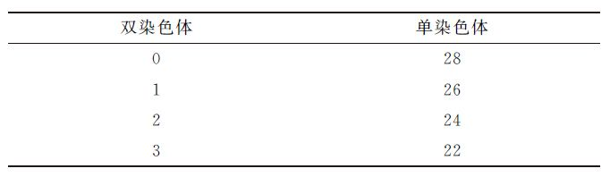
第一次分裂中，染色体在两极上的分布，很不规则；最多只有少数染色体，在到达两极以前，分裂开来；有些单染色体则散布在细胞质内。在第二次分裂时，许多染色体纵裂，那些在第一分裂中分裂了的染色体则行动迟缓，慢慢地走到一极；落后染色体的数目比第一次分裂时的落后染色体却少多了。
小麦同黑麦杂交中最有趣的特点，是几乎完全没有接合染色体，这样会引起染色体不规则的分布，而这种不规则的分布，很有可能解释了在杂种里所常见的不孕性。另一种可能是，同一物种的全部（或大多数）染色体也可能（作为一个稀有的事件来说）走到另一极。由此可以导致有作用的花粉的形成。
多倍体蔷薇
从林奈时代以来，分类学者在许多蔷薇分类上感到踌躇。近年来，经瑞典植物学家Tackholm、英国三位植物学家Harrison和其同事Blackburn，以及蔷薇专家和遗传学家Hurst先后发现，若干群的蔷薇，特别是属于canina蔷薇族的蔷薇，都是多倍型。它们之间的差异不完全归之于多倍性，广泛的杂交作用也一道参加了作用。
近来Tackholm对这些蔷薇进行了精密的研究。首先谈谈他的计算。14条染色体（n＝7）的物种染色体最少，可以作为基本型。另有21条染色体（3×7）的三倍体，28条（4×7）的四倍体，35条染色体（5×7）的五倍体，42条染色体（6×7）的六倍体以及56条染色体（8×7）的八倍体（参考图92）。有一些平衡的多倍体，在成熟分裂时其所有染色体互相结合成对（二价染色体）；而含有奇数染色体的多倍体，甚至有些含偶数染色体（假定是杂种）的多倍体，在第一次成熟分裂时，却只有七条（或14条）二价染色体，其他都是单染色体。换句话说，当七类染色体各有四条、六条或八条时，每一类染色体都两两接合，好像他们是二倍体似的。不论染色体来源如何，它们绝不是四条、六条或八条接合一起的。这些多倍体的接合染色体，在第一次成熟分裂中，分离开来，每极各得一半。在第二次成熟分裂时，染色体各自分裂，每条子染色体走到一极或另一极。这样，不管是花粉或是胚珠，所有生殖细胞都含有原来染色体的半数。如果它们是有性繁殖，则该种特有的数目便可以维持不变。
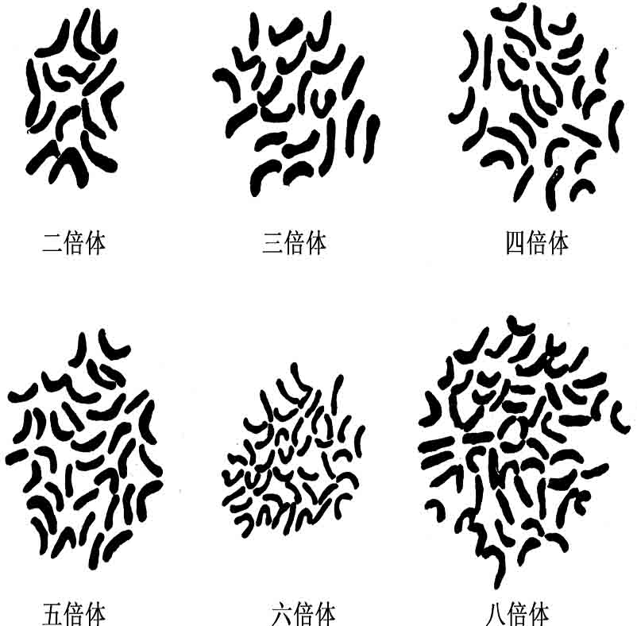
图92 蔷薇的多倍体系（仿Tackholm）
在另一群蔷薇里，生殖细胞内所发生的种种变化，表示这群蔷薇并不稳定，所以Tackholm把它们看成是杂种。其中有些含21条染色体，故为三倍体。在成熟初期，花粉母细胞有七条二价染色体和七条单染色体。二价染色体在第一次成熟分裂时分裂开来，每极各得七条；七条单染色体不分裂，零乱分布于两极之上。因此可能得出几种组合。在这方面，该型是不稳定的。当第二次成熟分裂时。所有单染色体，不论是来自以前的二价染色体或是来自单染色体，都分裂成两条。许多子细胞退化了。
另一些杂种，有28条染色体（4×7），但因为接合时期中的染色体行动，表示了每类染色体不够四条，所以Tackholm不把它们列入真正的四倍体。该型只出现七条二价染色体和14条单染色体。第一次分裂时，七条二价染色体纵裂，14条单染色体不分裂，分布也不规则。
另一些杂种有35条染色体（5×7）。成熟时出现七条二价染色体和21条单染色体（图93）。两种染色体的行动与上例相同。
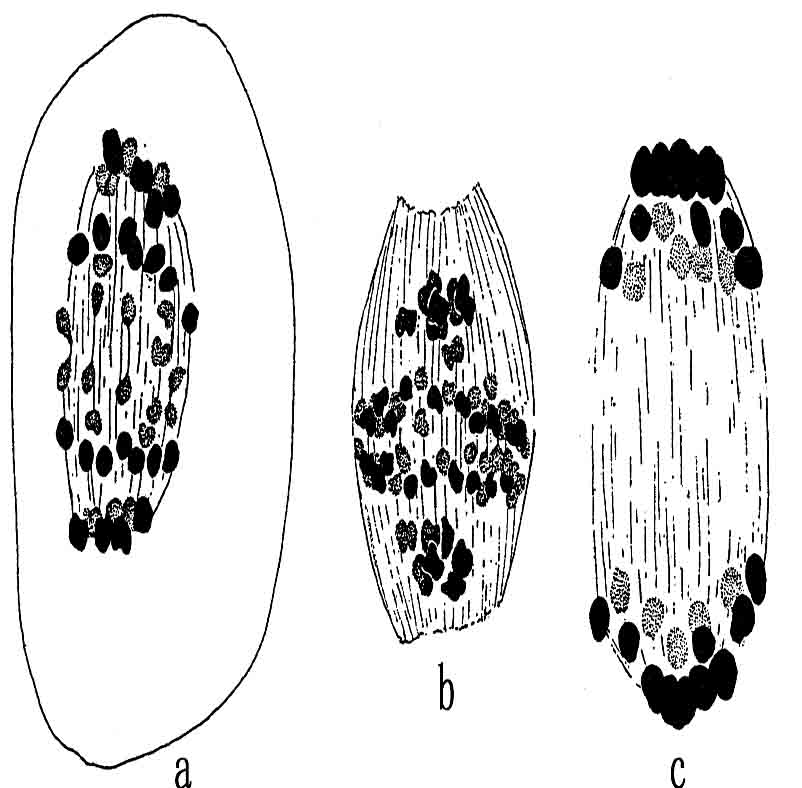
图93 35条染色体的蔷薇第一次成熟分裂（异型分裂）（仿Tackholm）
第四类型的杂种有42条染色体（6×7）。成熟时也只有七条二价染色体，但单染色体却有28条。染色体在成熟时期的行动同前。
现在从花粉的形成方面，将以上四型的“杂种蔷薇”分类如下：
7条二价染色体和7条单染色体：共计21条
7条二价染色体和14条单染色体：共计28条
7条二价染色体和21条单染色体：共计35条
7条二价染色体和28条单染色体：共计42条
这些杂种的独特行动，是只有14条染色体接合成七对二价染色体。我们必须假定这些染色体是相同的，或者是这样的接近，以致它们接合起来。除非像Tackholm所提示的，其他各组的七条染色体，是从不同的野生物种杂交中得来，否则很难理解为什么各该组染色体不能互相接合。经过杂交而新添的各组染色体与原来一组染色体之间的差异以及各组之间的差异，都可以妨碍他们之间的接合。
还有两型杂种可以谈一下：两者都有14条二价染色体和七条单染色体。它们比以上杂种有着两倍多的接合染色体。
Canina群中只有少数杂种，其胚囊（卵子发育所在）染色体的历史已经有过记载（图94）。
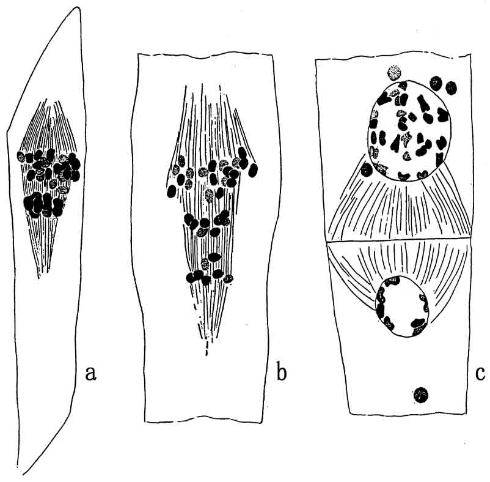
图94 蔷薇卵细胞的成熟分裂。所有单染色体走到一极，在那里和半数的接合染色体会合（仿Tackholm）
在纺锤体的赤道上有七条二价染色体，而单染色体则完全在一极集中。每条二价染色体分开成两半，一半走到一极，一半走到另一极。结果，两个胞核中，有一个含七条染色体（来自二价染色体）和所有的21条单染色体，另一个子细胞则只有七条染色体。卵细胞由前一群胞核发育而来。如果卵细胞真由（7+21）染色体的细胞发育而来（似乎是这样的情况），而且从一个含七条染色体的精子（假设另一种精子是不起作用的）受精，则受精卵将有35条染色体，即该型原来染色体数目。
这些多倍体蔷薇的生殖过程，还没有得到完全的阐明，仅从枝繁殖一方面来说，它们将能维持从受精中得到的任何数目的染色体。那些经过单性生殖而形成种子的杂种，也可以维持一定数目的体细胞染色体。由于花粉和卵细胞形成上的不规则，结果似乎会成立许多不同的组合。不熟悉这些类型中染色体的相互关系，势必很难阐明它们的遗传过程。即使这方面有了进展，对于这些杂种蔷薇的组成，仍然有许多须弄清楚的问题。
Hurst在研究蔷薇属的野生种和栽培种以后，认为野生二倍体物种由五个主系组成，即AA、BB、CC、DD、EE（图95a~d、e~h、i~l、m~p、q~t）。从这五个主群可以分辨出许多组合。例如，一种四倍体为BB、CC；另一种为BB、DD；一种六倍体为AA、BB、EE；一种八倍体为BB、CC、DD、EE。
Hurst说到五个主系中，每一个系至少有50个可以鉴别的性状。这些性状都能够在杂种组合中看到。环境条件可以交替促进一系或另一系的性状。Hurst相信，在这些相互关系的基础之上，本属各种的分类是可能做到的。

图95 Canina蔷薇的五种类型，即a~d、e~h、i~l、m~p、q~t各型的特征排在同一横行上，包括花、果实、分枝情况，刺和叶的着生处（仿Hurst）
其他多倍系
除上述各多倍型外，在另一些群里也有过有多倍染色体的变种和物种的报道。
我们知道山柳菊Hieracium属内有一些物种进行有性生殖，另一些物种虽然有时甚至有一些正常花粉粒的雄蕊，却进行着单性生殖。Rosenberg在几种产生花粉的物种里，研究了它们的花粉的发生情况。他又研究了不同物种杂交所生的杂种。其中有含18条染色体（n＝9）的H.auricula同含36条染色体（n＝18）的H.aurantiacum杂交所生的杂种，Rosenberg研究了杂种花粉细胞的成熟分裂。在第一次成熟分裂时，杂种有九条二价染色体和九条单染色体，但也有一些例外，这或者由于在亲型H.aurantiacum花粉中染色体数目反常的缘故。在第一次分裂时，每条二价染色体分为两条，大多数单染色体也分裂起来。
另两种四倍体H.pilosella和H.aurantiacum各有36条染色体。Rosenberg也研究了它们的子代杂种的成熟分裂。杂种的体细胞有38~40条染色体。有两个例子：含18条二价染色体和四条单染色体，在含36条或42条染色体（n＝21）的H.excellens和含36条（n＝18）的H.aurantiacum的杂交中，有一个例子含18条二价染色体。所以H.excellans亲型可能有36条染色体。在另一个同样的杂交里，其子代花粉大都是不孕的，这里有大量的二价染色体和许多单染色体。在其他两个四倍体的杂交中，也看到同样结果。总之，从四倍体得到的结果表明，不同物种的染色体互相接合时，则各该物种即有着相同的染色体，或者至少是二价染色体的形成，由于异种中相同染色体的接合，比由于同一物种中相同染色体的联合，似乎更为可能。
Archieracium属内有兼营有性生殖和单性生殖的物种，以单性生殖比较常见。Rosenberg研究该种花粉的成熟作用。在单性生殖型的胚囊内，没有减数分裂，但依然保留二倍数目的染色体。花粉发育改变很大，有作用的花粉很少。在花粉母细胞内，减数分裂极不规则。Rosenberg曾经描述了几种无配子生殖（注：无配子生殖＝apogamous：配子体借营养繁殖法产生孢子体，其中没有配子的产生和受精。——译者注。）的山柳菊，其中花粉几乎完全无作用（图96）。据他解释，这些变化一部分由于他们起源于四倍体（大多数类型中出现二价染色体和单染色体），一部分也由于染色体之间的接合作用渐次消失，同时又抑制了一次成熟分裂。据说，卵母细胞内也可能发生类似的变化，从而使营单性生殖的卵子保留了全部染色体。
田原正人发现了多组系家菊。其中，10个变种（图97）各有9条染色体，不过染色体有大小之别，更重要的，是染色体的相对体积可以随变种的不同而异（图98）。这点留在以后讨论。另一要点，即在某些物种中，染色体的总数虽然相同，胞核体积却大小不一。另一些菊种的染色体为9的倍数（图99）。两种有18条；两种，27条；一种，36条；两种，45条。下表表示染色体数目和胞核体积的关系。

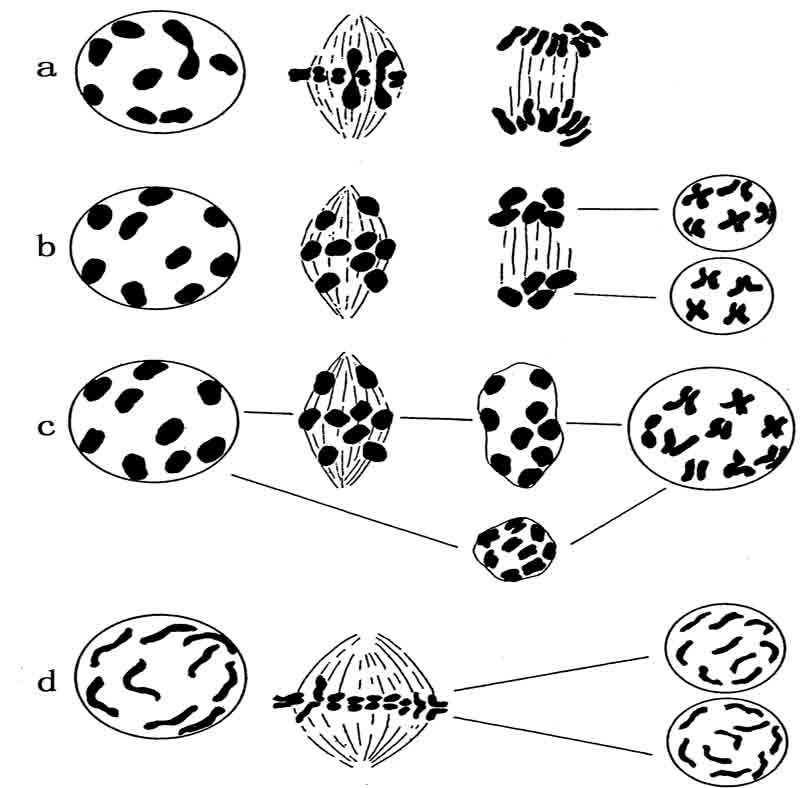
图96 山柳菊Hieracium属内几个无配子生殖的物种的花粉所具有的成熟分裂阶段（仿Rosenberg）
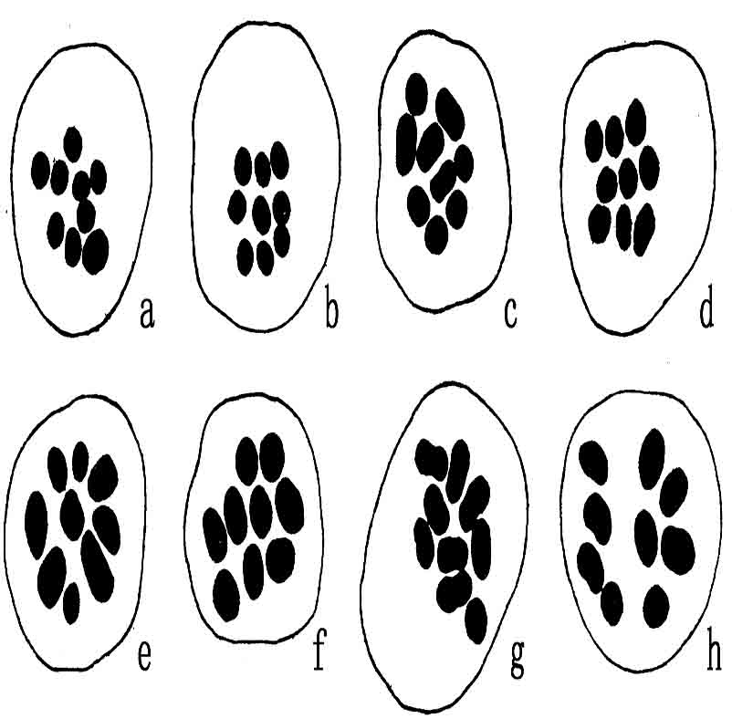
图97 家菊八个变种的染色体类型，各含减数后的九条染色体（仿田原正人）

图98 菊的不同变种的多倍染色体群；a.9条；b.9条；c.18条；d.21条；e.36条；f.45条（仿田原正人）
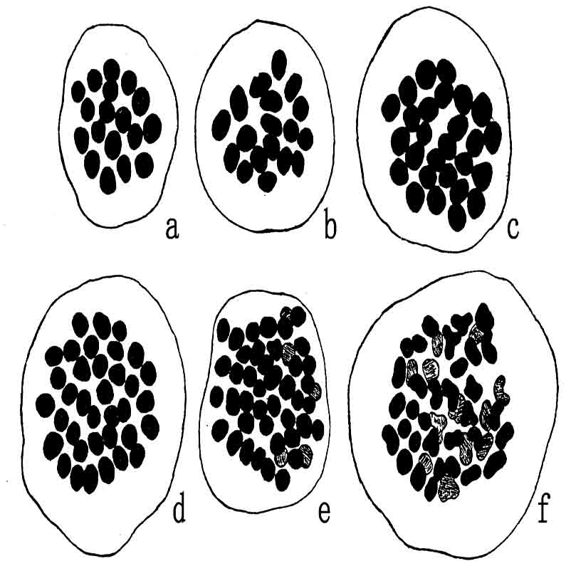
图99 几个家菊变种的终变期胞核：a和b有18条染色体；c有27条；d有36条；e有45条；f有45条（仿田原正人）
大泽一卫报道了桑树的三倍体变种。在他所研究过的85个变种中，40个为三倍体。两倍体的染色体数目为28（n＝14），三倍体的染色体数目为42（3×14）。二倍体植株有生殖能力，在三倍体内，成熟分裂表现紊乱情况（单价染色体），花粉粒和胚囊都不能成熟。当三倍体的花粉和大孢子母细胞进行第一次成熟分裂时，二价染色体有28条，单价体有14条。单价体任意走到一极，并在第二次分裂时各自分裂为二。
槭属（Acer）植物中，似乎也有多倍体的可能。据Taylor报道，有两种含26条染色体（n＝13）；有两种含52条（n＝26）；其他约含144条（n＝72），108条（n＝54）或72条（n＝36）。也发现过含不同数目的其他物种。
Tischler在甘蔗中看到：有些品种的单倍数为8条、16条和24条（二价）染色体。Bremer报道另外两个变种，一种约有40条单倍染色体，另一种56条，也有其他数字的报道。在这些组合中，有些或者由杂交得来，但在所观察到的染色体数目上的差异中，究竟有多少是来自杂交，目前还不知道。Bremer也研究过少数杂交的成熟分裂过程。
Heilborn谓，薹属Carex各物种的染色体数目，差别很大，却没有显明的多倍系。“现在重要的，是要给多倍体这个名词下一个比较明晰的定义。从第二章中染色体数目表看来，似乎有些数目以三为基数成为多倍系（9、15、24、27、33、36和42），有些以四为基数自成一系（16、24、28、32、36、40和56），其他以七为基数（28、35、42、56），依此类推，但作者认为仅仅这些数字关系，还不能看做多倍系的例子。多倍系的染色体群必须包括一定组数的单倍染色体，而且必须由这种组数相加而成。可是，我们知道，例如C.pululifera的九条染色体不是三个组而是三条大号、四条中号和两条小号染色体所组成；又如C.ericetorum也没有这样的五组，而是一条中号和14条小号染色体，因此，两物种的染色体群的起源不是由于一组一组的染色体的增加，而是通过其他途径。”在酸模、罂粟、桔梗、堇菜、风铃草和莴苣属里也报道过一些问题较多的多倍系。在以下各种内发现两种染色体数目，一种为另一种的二倍或三倍：如车前（6和12），滨藜属Atriplex（9和18），茅膏菜（10和20），长距兰（21和63）。我们知道山楂和覆盆子是复杂的多形的物种。据Longley近来的报导，两种表现着广泛的多倍性。
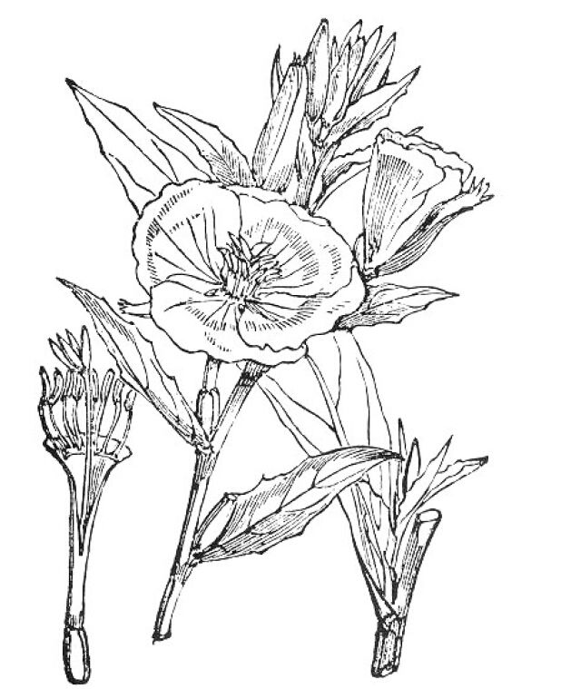
月见草（又称待霄草）
第12章 异倍体
就我所理解的异倍体来说，其最重要的一点是，它们可以用来解释在细胞分裂和成熟机制偶然反常时所发生的奇特有趣的遗传情况。不稳定类型产生了，并且只要这些类型能够维持下去，它们总是不稳定的，也就是说，多一条额外染色体。在这方面，它们显然不同于正常的类型和物种。其次，大多数证据指明：这些异倍体的生活力，比它们亲本的平衡型要弱一些，因而很少能在一个不同的环境下代替原种。
月见草（又称待霄草）。
某群染色体有时由于不规则的分裂和分离，增加了一条或者减少了一条。凡是由于增减一条或多条染色体所造成的新数目的染色体群，都被称为异倍型。仅仅某一类的染色体有三条的染色体群，又被称为三体型（同每类染色体各有三条的三倍体相区别），三体这个词也可以同该类染色体的号数联写，例如果蝇的三体-Ⅳ。这样的一条额外染色体，以前被称为超数染色体或m染色体。某一对的染色体中损失一条时，可用单体这个词加上该条染色体的名号来命名，例如果蝇的单体-Ⅳ型。
已经发现了某些待霄草的突变型同增加一条第15号染色体有关。
拉马克待霄草正常有14条染色体。lata突变型和semi-lata突变型却有15条染色体，即增加了一条染色体（图100）。lata型和拉马克待霄草之间的差异大都轻微，以致只有专家才能辨别，但是这些差异在许多细节上都是存在着的。据Gates报道，某一种lata突变体的雄体几乎完全不孕，种子的产量大为降低。在semi-lata型中一个突变体产生了一些良好的种子。

图100 Oenothera lata（仿Anne Lutz）
据Gates研究，lata型的出现频率，随着不同的后代而异，约为0.1%~1.8%。
在成熟时期，15条染色体突变体的花粉有八条染色体：七条为成对染色体，一条为单染色体。在第一次成熟分裂时，接合中的两条染色体分离开来，分别走向两极。单染色体并不分裂，整条走到一极。在成熟期内，也有一些其他不规则的例子，虽然Gates认为三体-Ⅳ型个体的不规则情况比正常个体更多一些，但是否是额外染色体引起的，却不知道。
从15条染色体型预期可得出两种生殖细胞：一种有8条染色体，一种有7条。现已经证明了两种都有。从遗传学观点来看，lata型同正常型杂交，应该产生同样多的lata型（8+7）和正常型（7+7）的后代。实际结果与此大致符合。
三体型中最有趣的问题，在于究竟是哪一条染色体成为超染色体。既然染色体只分七类，可以预测任何类的染色体都能出现为三体型。据德弗利提示，待霄草有七种三体型，相当于七类可能的超数染色体。
也应该注意，含有两条超数染色体（同类或异类）的四体型，可能不像三体型那样容易生存。我们知道，这样的四体型是有的。譬如三体型的精子和卵子如果各含八条染色体，两者受精，所成的个体似乎有多得两条同类染色体的良好机会，这样便会产生该类染色体的四体型。就生殖细胞各含八对染色体方面来说，这种四体型应该是稳定的，不过它可能比只含一条额外染色体的三体型，更不平衡。也有过16条染色体类型的记录，其中有些能由15条染色体三体型发生出来，因而具有同一染色体的倍数，关于它们的相对存活力，还未见有报道。
经验上，任一对染色体似乎都有可能在三体型产生四体型的过程中重复。不过，即使这样能够达到稳定性，但基因平衡这一个更重要的因素，却会使成对染色体不可能这样永远增加起来。物种含染色体愈多，则基因间的比率变化愈小，其最初阶段的不平衡状态，较之含少数染色体的物种，或者要轻微一些。
Bridges在果蝇中发现了第四小染色体的三体型；因为小染色体上有三个遗传因子，所以不仅有可能去研究新的第四染色体增加时所影响的性状，而且也能够探究这种状态对于一般遗传学问题的关系。另一方面，也看出了含三条染色体的个体，往往死亡；含第二或第三染色体的三体型，也不能存活。
三体-Ⅳ型果蝇和普通型果蝇差别不大，所以难于辨别。和普通果蝇比较，三体-Ⅳ型果蝇体色稍深，胸部缺乏叉型结构（图32）；两眼略小，表面光滑；两翅窄而锐。这些轻微效应是由于增加了一条第四染色体，这点从细胞学证据（图32）和遗传学检查两方面已经得到了证实。三体-Ⅳ型果蝇同无眼果蝇（第四染色体的稳性突变型）同无眼果蝇杂交时，若干子代果蝇，可根据上述性状鉴定是三体-Ⅳ型。再使这种三体-Ⅳ型果蝇反交无眼型（图33），孙代有完全眼和无眼两种，约为5与1之比。如图33所示，这项结果符合于预测数字，如果一个正常基因对于两个无眼基因是显性的话。
孙代中含有两条普通第四染色体和一条无眼第四染色体的三体-Ⅳ型果蝇彼此交配，则产生完全眼和无眼两种个体，约为26与1之比。
在以上杂交里，半数卵子和半数精子各有两条第四染色体，预期可以产生一些含四条第四染色体的果蝇。如果这种四体型果蝇能够发育起来，预计所得完全眼和无眼为35∶1。实际得到的比例（26∶1）与预计比例（假定四体型果蝇能够存活）不符合，这是因为四体型死亡的缘故。事实上，从未发现过四体型果蝇，这意味着第四染色体虽然微小，但当该染色体有四条存在时，便会把基因间的平衡破坏到不能发育成为成虫的程度。
和四体型相反，另一种异倍体果蝇缺少一条第四染色体，称为单数-Ⅳ型（图29），这种类型出现过很多次。据说小染色体有时可能由于减数分裂时两条同入一极，以致一条在种系中失去。单数-Ⅳ型果蝇体色较浅，胸部的三叉纹较为显明，眼大而表面粗糙，刚毛细小，双翅略短，触角刚毛退化甚至消失。所有这些性状都和三体型的性状相反。如果第四染色体上有一些基因和其他基因一道影响蝇体上许多部分，这些差异便毫不足怪了。增加一条染色体，便加强影响；缺少一条染色体，便削弱影响。单数-Ⅳ型比正常型果蝇迟4~5天孵化；单数-Ⅳ型往往不孕，一般产卵很少，死亡率很高。现有大量的细胞学证据和遗传学证据，证明这些果蝇的特点，是由于少了一条染色体。
缺少两条第四染色体的果蝇还未被发现，两个单数-Ⅳ型彼此交配，其子代各型间的比例（单体-Ⅳ型130只，正常蝇100只）证明，完全没有第四染色体的果蝇（称为缺对-Ⅳ）死亡。
双倍型无眼果蝇如果同第四染色体上有正常基因的单数-Ⅳ型交配，其子代果蝇中有些无眼，而且一定属于单数-Ⅳ型。理论上，子代的一半应该无眼，但因单条第四染色体上有无眼基因，以致单倍型蝇的存活率比预计数字减低98%，这种作用也适应于单条第四染色体上的其他隐性突变型基因（弯翅和剃毛）。根据Bridges的研究，弯翅使存活率降低95%，剃毛降低100%，也就是说单数-剃毛型的果蝇不能发育。
曼陀罗Datura stramonium有24条染色体。Blakeslee和Belling发现许多栽培型有25条染色体（2n+1），多半分属于12个类型，各有一条不同的额外染色体。这12个类型所表现出的轻微而恒定的差异，涉及植物的所有部分。蒴果上便充分表现出这种差异（图101）。其中至少有两型（三体-球型与三体-poinsettia）在额外染色体上含孟德尔式因子，经Blakeslee、Avery、Farnham和Belling证明，至少在这两型里，第25号染色体是彼此不同的。特别是在poinsettia三体型中有一条含紫茎白花基因的额外染色体，对于遗传的影响最为明显。从这里看出，含额外染色体的生殖细胞比正常型存活较少，而减少了某些预测类型的数字；事实上，这些生殖细胞（n+1）完全不通过花粉传递（或者仅仅传递一小部分），通过卵子的也只占卵子总数30%。把这些关系都估计在内，那么遗传研究结果便和预测数字符合了。
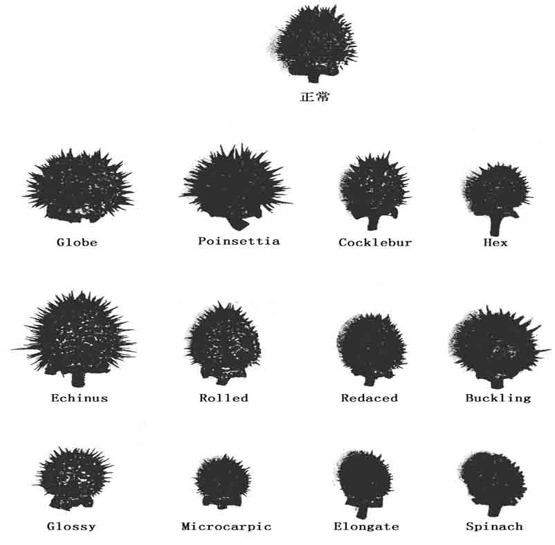
图101 曼陀罗的正常型蒴果及其12种可能的三体型蒴果（仿Blakeslee，载在《遗传学》杂志）
Blakeslee和Belling在研究三体型曼陀罗时，发现约有12个显然不同的类型，同属于2n+1或三体系。曼陀罗恰好有12对染色体，预计仅能有12个单纯的三体型，事实证明初级三体型也只有12个。其他三体型称为次级三体型，似乎各属于某一个初级三体型（图102）。其证据由下列各方面得来：在外形类似上，在体内结构上（如Sinnott所证明的），在遗传方式相同上（某一标记染色体发生同样的三体型遗传），以及在同一群内一型产生另一型的交互作用上和在额外染色体的体积上（Belling）。

图102 曼陀罗二倍体（2n）的蒴果与2n+1、2n+2两型的蒴果比较（仿Blakeslee，载在《遗传学》杂志）
下表表示初级型及其次级型，皆由三倍体产生出来。
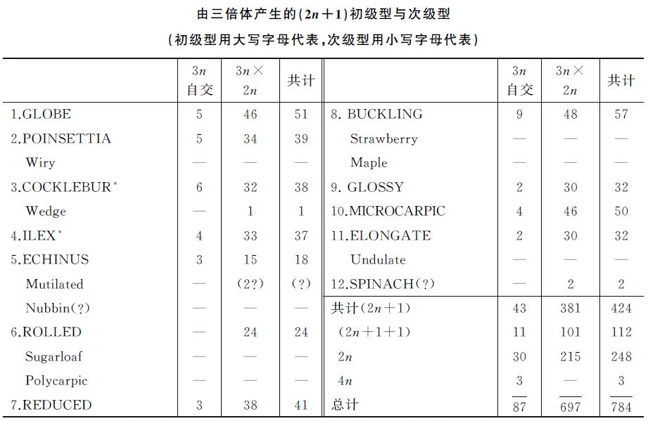
*作者原文中数字排列错误，译文中已经改正了。——译者注。
下表表示初级型与次级型的自然发生频率。其中初级型比次级型发生较多。繁育实验证明，初级型只可以偶尔产生次级型，但次级型却能产生初级型，比产生其他各群的新突变型为多。因此，poinsettia型产生3100个子代植株，其中poinsettia约为28%，次级型wiry约为0.25%；相反，wiry为亲株时，其子代中只有0.75%为初级型poinsettia。
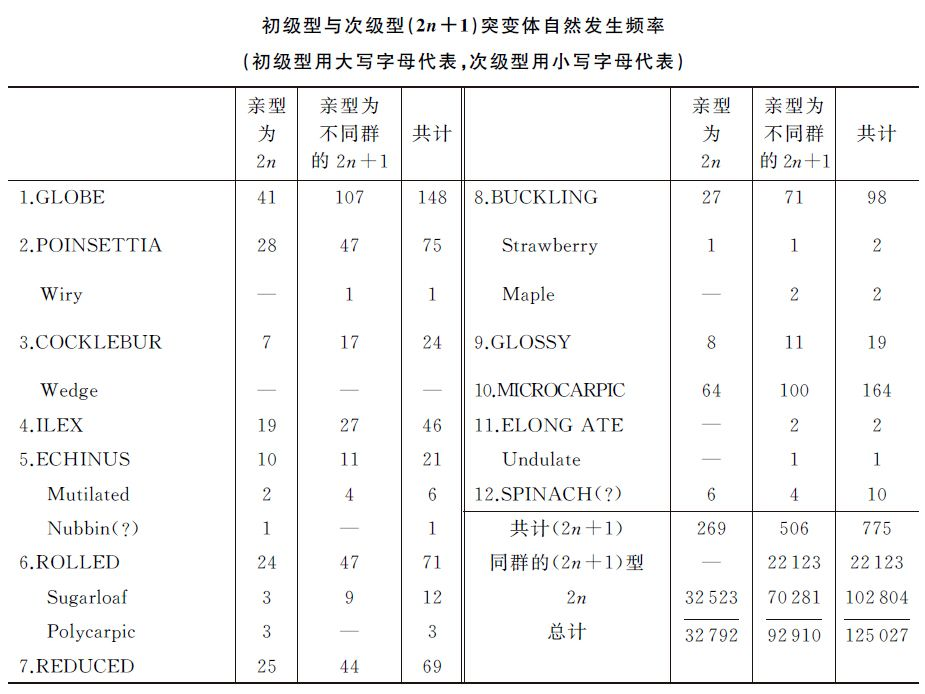
Wedge为Cocklebur群中的一个次级型。Wedge型的育种实验为次级型与初级型之间的关系，提供证据如下。Poinsettia与其次级型wiry在P、p两个色素因子的遗传上，都得出三体型比率，但在spine因子A、a遗传上却得出二体型比率，表示Poinsettia和wiry的额外染色体属于含P、p因子的一组，而不属于含A、a因子的一组。同样，Cocklebur里的比率，也表明该初级型的额外染色体属于含A、a因子的一组，而不属于含P、p的一组。不过其次级型wedge在A、a遗传上却没有得出三体型比率。实得数值同二体型遗传比率相似，而与三体型比率不同。Wedge型是Cocklebur群里的次级型，已经有了强有力的证据，所以上述比率似乎表示wedge的额外染色体上已经缺少了A、a基因点。设以A′表示发生缺失后的染色体，在减数分裂时，Wedge型A′Aa中的A、a分开各入一极，由此会产生A+a+AA′+aA′四种配子，这种行动可以解释表中第5项的比率。如果A′为A因子的缺失，则aA′配子没有A因子，因此得出实际看到的armed和inermis Wedge二体型比率（表中未记载）。如果A同a有时同入一极，则配子势必分为A′（很大可能死亡）和Aa两种，因而促成了Wedge型有时产生初级型Cocklebur。
“次级型额外染色体上的缺失假说，从Belling在细胞学方面的发现，得到了有力支持。不过Belling的颠倒交换假说，提示了染色体上某一部分加倍、而其余部分缺失，从而完成了这一幅书图。”
四倍型曼陀罗中增加一条染色体，也有过报道，如图103。图中示某群有五条相同的染色体；而另一群则有六条相同的染色体。

图103 上行示四倍体蒴果，下行示4n+1、4n+2、4n+3各型的蒴果（仿Blakeslee，载在《遗传学》杂志上）
Belling与Blakeslee研究过在曼陀罗的初级三体型和次级三体型中三条染色体的接合方式，发现某些差异，对于两型之间的关系有所启发。图104上行表示初级型三条染色体的各种接合方式，各式下面的数字，表示该型出现次数。其中三价V为最普通的联合方式（48），其次为环棒型（33），再次为Y（17），为直链（9），为环（1），为双环（1），以及两条成环，另一条独立（9+）。既然假设染色体是借着相同的两端靠拢、接合起来，那么，也就有理由来假定：在上述各型里，相同的两端（A同A，Z同Z）仍然是互相接触的（参考图104上行）。
图104下行示次级型三条染色体联合的各种方式。这些类型，在联合方式上，与初级型大致相同，但发生次数则不一致。最显著的特点，是右侧的最后两型，其中一型的三条染色体联合成长环，另一型则有一环由两条染色体组成，另一小环由单条染色体组成。以上两型意味着某条染色体的一端已发生了某种变化。Belling和Blakeslee曾经提出下一假设，说明在三倍体亲株或初级三价型的前一时期内，这种变化是如何发生的。譬如，假使两条染色体像图105所示的那样颠倒位置，相并接合，又假使两者在中央部分发生交换，即只有相同基因并列为唯一平面上交换。结果，每条染色体的两端都会相同，一条的两端为A、A，另一条为Z、Z。如果这样的染色体在下一代成为三价染色体中的一条，便有可能构成图106（下行）所示的Z—Z染色体和两条正常染色体结合的那种联合方式，即相同的两端互相接合。

图104 三体型曼陀罗三条染色体的联合方式（仿Belling和Blakeslee）

图105 示两条染色体在相反方向时可能发生的接合
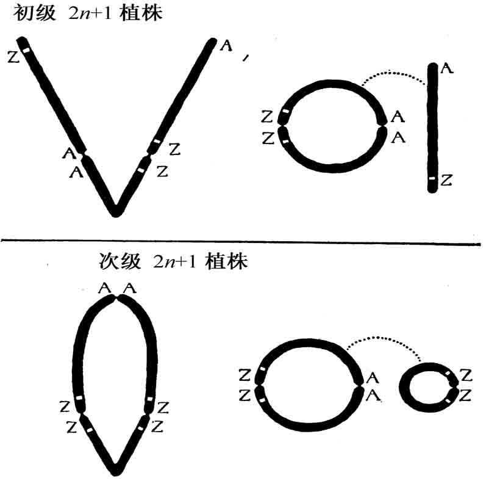
图106 示三体型曼陀罗三条染色体可能有的接合类型（仿Belling与Blakeslee）
如果次级型特有的环形能够照上述解释的那样，那么在三价染色体中，有一条会有半截重复，从而与其他两条不同。因此，次级的基因组合也将与初级型的基因组合不同。
据桑田义备报道，玉蜀黍（Zea mays）有20条染色体（n＝10），不过某些糖质玉蜀黍有21条、22条，甚至23条、24条之多的。桑田义备认为玉蜀黍是杂种，其新型中有一种是墨西哥teosinte种（Euchleana）。玉蜀黍有一对染色体，其中一条较长，一条较短，桑田义备认为长染色体由teosinte得来，短染色体则由一个无名物种传递而来。有时长染色体裂成两段，由此说明了在糖质玉蜀黍中所看到的染色体增加现象。这项解释如果得到证实（近来已经怀疑这一点），则以上21、22、23条染色体类型都不是严格的三体型了。
德弗利关于拉马克待霄草额外染色体型的结论，在说明进步性突变的起源上，也就是在说明突变同进化的关系上，有着重大的意义。在三体型性状上所经常看到的无数轻微变化，符合了以前德弗利关于如何构成一个初级物种，好像在瞬息间出现了两种初级物种的定义。
应该看到，就生殖物质说来，当染色体增加一条，从而产生突变效应时，其结果会牵涉遗传单元实际数目的巨大改变。这种改变绝不能同单个化学分子内的改变相比，除非把染色体看成是一个单元，这种比较才有其重大意义。但从基因观点说来，染色体的组成是很难符合这种比较的。
就我所理解的异倍体来说，其最重要的一点是，它们可以用来解释在细胞分裂和成熟机制偶然反常时所发生的奇特有趣的遗传情况。不稳定类型产生了，并且只要这些类型能够维持下去，它们总是不稳定的，也就是说，多一条额外染色体。在这方面，它们显然不同于正常的类型和物种。其次，大多数证据指明：这些异倍体的生活力，比它们亲本的平衡型要弱一些，因而很少能在一个不同的环境下代替原种。
不过，异倍体的发生必须看成是一件重大的遗传事件，了解了它们便有可能澄清许多情况，如果没有研究它们的染色体的知识，这些情况是会极其复杂费解的。
德弗利鉴定了六个三体突变型；此外，又鉴定了第七型，第七型同其他六型的遗传学关系，比六型相互间的遗传学关系，有着更显著的差异。德弗利认为以上七个类型可能相当于待霄草的七条染色体，其中六型如下表。图107表示有关的染色体群。

图107 示德弗利对于拉马克待霄草七条染色同三体突变型相互关系的看法（仿德弗利和Boedijn）
15条染色体突变型：
1.Lata群
a.Semi-lata.
b.Sesquiplex突变型：albida，flava，delata.
c.Subovata，sublinearis.
2.Scintillans群
a.Sesquiplex突变型：oblonga，aurita，auricula，nitens，distans.
b.Diluta；militaris，venusta.
3.Cana群：candicans
4.Pallescens群：lactuca
5.Liquida
6.Spathulata
表内六个初级突变型之下各有若干次级型。初级型与次级型的相互关系，不仅表现在性状上的类似上，也表现在两者互相产生的频率上。其中，albida和oblongata两型各有两种卵子和一种花粉，称为one-and-one-half型或sesquiplex突变体。另一次级型candicans也是一个sesquiplex型。在染色体群内中央染色体即最长的一条染色体上面（图107）有volutine的一些“因子”或有lata的一些“因子”。德弗利根据Shull所找到的证据，把新突变型funifolia和pervirens列入它们之中。因此，依照Shull的意见，拉马克待霄草其他五型（注：红萼芽体和它的四个等位因子；红基（加强因子）、短株、桃色锥状芽、硫色花。的突变体以及使这些因子维持平衡致死状态的若干致死因子，似乎多半属于这一群。Shull认为这些隐性性状的出现，是由于这里被暂时鉴定为中央染色体的一对染色体之间发生了交换的缘故。
第13章 种间杂交与染色体数目上的变化
由于杂种生殖细胞内染色体不能结合，所以就保留了双倍数目的染色体。这个双倍数目可以通过回交继续维持下去，但是由于杂种缺乏生殖力，所以在自然条件下，就很难从这种组合产生任何永久的类型。
配制饲养果蝇的培养基所需的部分原料（李凤霞提供）。
从不同染色体数目的物种相互杂交的结果中，揭发了一些有趣的关系。一个物种的染色体或者恰好是另一物种的二倍或三倍，在另一些例子里，数目较多的染色体群也许不是另一群的倍数。
1903—1904年，Rosenberg所进行的两种茅膏菜杂交实验，便是一个经典例子。
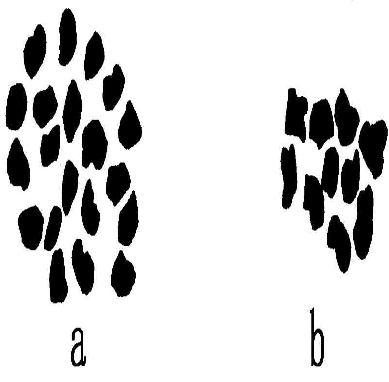
图108 圆叶茅膏菜的二倍染色体群和单倍染色体群（仿Rosenberg）
茅膏菜的长叶种（Drosera longifolia）有40条染色体（n＝20）、圆叶种（D.rotundifolia）有20条（n＝10）（图108）。杂种有30条（20+10）。杂种生殖细胞成熟时，共有10条接合染色体，即通常所谓的二价染色体，和10条单染色体（单价染色体）。据Rosenberg的解释，认为这意味着长叶种的10条染色体同圆叶种的10条染色体联合，长叶种的其他10条染色体则没有配偶。在生殖细胞第一次分裂时，接合染色体各分为两条，分别向相反的一极进行；10条单染色体没有分裂，不规则地分布在两个子细胞里面。可惜这样的杂种没有生殖力，不能供进一步遗传学研究之用。
Goodspeed和Clausen广泛地研究了两种烟草（Nicotiana Tabacum和N.sylvestris）之间的杂交。但两者的染色体数目直到最近才确定下来。N.Tabacum有24条（n＝12），N.sylvestris有48条（n＝24）。这种染色体数目上的差异，还没有同遗传学研究结果联系起来；染色体在成熟分裂中的行动，也没有见过报告。
两种烟草杂交后的杂种，完全同Tabacum亲型类似，甚至该亲型的基因对于Tabacum种的正常因子呈纯隐性作用时（即同Tabacum型的一些变种杂交）也是这样。Goodspeed和Clausen以为这是Tabacum的整群基因对于sylvestris基因呈显性作用的结果。他们这样表示说：Tabacum的“反应系”，在杂种的胚胎发育过程中，占优势，或者说：“两系的要素相互间一定是极其矛盾的”。
杂种有高度的不孕性，但也形成了少数有作用的胚珠。像繁育结果所证明的，这些胚珠或者完全（或大多数）属于纯粹sylvestris型，或者完全（或大多数）属于纯粹Tabacum型。看来，杂种的胚珠中只有具备任一型的整组染色体（或几乎是整组染色体）的，才能（或大多数能够）有作用。下述实验是这种见解的根据。
杂种同sylvestris花粉受精，产生了各种各样的类型。其中，很多植株的性状完全为纯粹sylvestris型。这些植株都是可孕的，产生纯sylvestris型的后代，因此必须假定它们是由含sylvestris染色体群的胚珠同sylvestris花粉受精而成。也有和sylvestris相类似的植株，却含有大致由Tabacum染色体群得来的其他要素。它们都没有生殖能力。
杂种回交Tabacum，没有成功，但从田间自由传粉中出现了少数杂种，同Tabacum相似，一定是和Tabacum花粉受精而成。其中有些是可孕的。它们的后代绝不表现sylvestris性状。不论它们有什么Tabacum基因，这些基因都表现（孟德尔式的）分离现象。这里也有不孕性的植株，同Tabacum和sylvestris杂交所生的杂种相似。
这些不平常的结果，还有另一方面的重要性。子代杂种可以用两个方法产生出来，即每一个物种都可作为胚珠的母株。由此得出结论：即使是在sylvestris的胞质里面，Tabacum的一群基因也完全决定了个体的性状。鉴于这项结果是由大相悬殊的两个物种的胞质得来的，所以这就成为基因在决定个体性状上有影响的一个有力证据。
Goodspeed和Clausen所提出的反应系观念虽然新颖，原则上却与基因的一般解释毫无矛盾。它仅仅意味着：当sylvestris的单组基因同Tabacum的单组基因对立时，sylvestris的基因完全潜伏，没有作用。但sylvestris染色体依然保持原状。它们未被扔掉，也没有受到亏损，因为从杂种同sylvestris亲株的回交中，可以重新得到一组有作用的sylvestris染色体。
Babcock和Collins用各种黄鹌菜（Crepis）进行了广泛的杂交。Mann女士（1925）也研究过这些杂种的染色体。
Crepis setosa有8条染色体（n＝14），Crepis capillaris有6条染色体（n＝3）。Collins和Mann用两种杂交，杂种有7条染色体。在成熟时，有些染色体结合成对，另一些染色体不经过分裂便分散在花粉母细胞内，形成胞核，各有2~6条染色体。第二次分裂时，所有的染色体，至少在为数较多的一群里的染色体，都各自分裂，子染色体分别进入相反的两极。胞质往往分裂成四个细胞；但有时也分裂成2粒、3粒、4粒或6粒小孢子。
这些含7条染色体的杂种，不产生有作用的花粉，不过有一些胚珠还是有作用的。杂种胚珠同某一亲株的花粉受精，产生了五个植株，各有7条到8条染色体。检查一株含8条染色体的成熟分裂，发现有4条二价染色体，其分裂情况正常。这一株的性状同C.setosa相似，并且有同样类型的染色体。这样便恢复了一种亲型。
另用Crepis biennis同C.setosa杂交，前者有40条染色体（n＝20），后者有8条（n＝4）。杂种有24条（20+4）（图109）。当杂种生殖细胞成熟分裂时，至少有10条二价染色体和少数单价染色体。

图109 Crepis setosa和C.biennis染色体群（仿Collins和Mann）
由此可知，既然setosa只提供了4条染色体，那么，biennis染色体中一定有一些互相结合。以后细胞分裂，有2条到4条的染色体比其他染色体落后，但最后大都进入一个胞核。
子代杂种是可孕的。孙代（F 2 ）植株有24条或25条染色体。从这里似乎有产生一个稳定的新型的希望；这种新型有新的染色体数目，其中，有一对或多对染色体从染色体数目较小的物种方面得来。杂种中有10条二价染色体，这一事实便意味着Crepis biennis是一个多倍体，可能是一个八倍体。子代杂种的同类染色体联合成对。这个含有半数biennis染色体的杂种（F 1 ）是一年生植物，与二年生的biennis不同。染色体数目上的减半，引起了生活习性上的变化。植株成熟时间，只有二年生型的一半。
Longley描写过两型墨西哥大刍草teosinte：一型名为墨西哥型mexicana，为20条染色体（n＝10）的一年生植物，另一型名为多年型perennis，是多年生植物，有40条染色体（n＝20）。两型都有正常的减数分裂。用二倍体teosinte（n＝10）同玉蜀黍（n＝10）杂交，杂种有20条染色体。在成熟时，杂种生殖细胞各有10条二价染色体。普通会把这种情况解释为10条teosinte染色体同10条玉蜀黍染色体之间的联合。
多年生teosinte（n＝20）同玉蜀黍（n＝10）杂交，其杂种有30条染色体。在杂种的花粉母细胞第一次成熟分裂中，看到了一些三价染色体群，疏松地结合起来，有一些二价染色体，也有一些单染色体：三者之间的比例为4∶6∶6或1∶9∶9或2∶10∶4（参考图110b）。在第一次成熟分裂中，二价染色体各自分裂，两染色体分别进入相反的两极；三价染色体也进行分裂，两条同入一极，另一条则进入另一极；单染色体行动迟缓，零乱地分布（没有分裂）到两极上去（图110c）。结果，分布极不平衡。
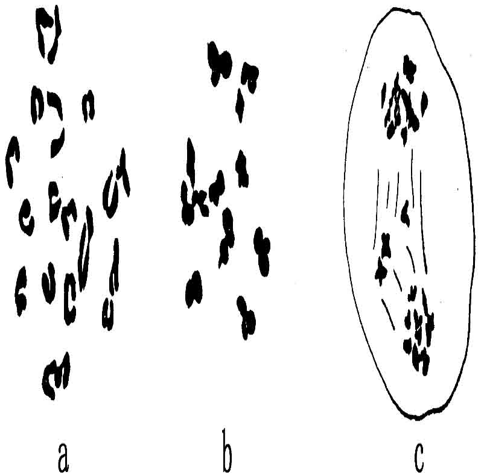
图110 减数以后的染色体群：a.多年生teosinte；b.同玉蜀黍杂交后的杂种；c.玉蜀黍的减数分裂（仿Longley）
最近有一个例子，谈到染色体数目很不相同的两个物种互相杂交，产生了有生殖能力的、稳定的新型杂种。Ljungdahl（1924）用有14条染色体（n＝7）的罂粟Papaver nudicaule和有70条染色体（n＝35）的P.striatocarpum进行杂交（图111）。杂种有42条染色体。杂种生殖细胞成熟时，出现了21条二价染色体（图111b~e）。二价染色体分裂，每极各得21条染色体。这里没有一条单染色体，也没有一条逗留在纺锤体上。这些结果只能作下述解释：nudicaule的7条染色体，同striatocarpum的7条染色体结合，其余24条striatocarpum染色体则两两结合，形成14条二价染色体。两者共得21条二价染色体，正是观察所得到的数字。由此自然得出下列假设：有70条染色体的（n＝35）striatocarpum型多份是一种十倍体，也就是说，每一类的染色体都有10条。

图111 两种罂粟之间的杂交：a.Papaver nudicaule有14条染色体（n＝7）；
b.杂种，有42条染色体（n＝21）；c.P.striatocarpum有70条染色体（n＝35）；d~e.杂种的胚胎母细胞；f.杂种第一次成熟分裂的后期（仿Ljungdahl）
子代新型产生含21条染色体的生殖细胞。新型平衡、稳定。它也是可孕的，预期可以产生一个稳定的新型。由此又产生其他稳定的类型，在理论上也是可能的。如果子代新型回交nudicaule，应该产生四倍型（21+7＝28）；回交striatocarpum，应该产生八倍型（21+35＝56）。这里，通过二倍体同十倍体的杂交，可以产生以后世代中的四倍体、六倍体和八倍体，这些类型都是稳定的。
Federley关于Pygaera属各蛾种的实验（参考第9章），说明了一项极不相同的关系。由于杂种生殖细胞内染色体不能结合，所以就保留了双倍数目的染色体。这个双倍数目可以通过回交继续维持下去，但是由于杂种缺乏生殖力，所以在自然条件下，就很难从这种组合产生任何永久的类型。
第14章 性别与基因
目前关于性别决定机制的知识，来自两个方面。细胞学者发现了某某染色体所起的作用，而遗传学家则进一步发现了基因作用的一些重要事实。
性别决定机制的两种主要类型，也已明了。最初看上去，两型似乎刚好相反，但所涉及的原则却是一样的。
通过杂交选择获得的各种类型的鸡。
目前关于性别决定机制的知识，来自两个方面。细胞学者发现了某某染色体所起的作用，而遗传学家则进一步发现了基因作用的一些重要事实。
性别决定机制的两种主要类型，也已明了。最初看上去，两型似乎刚好相反，但所涉及的原则却是一样的。
第一型可称为昆虫型，因为昆虫为这种性别决定机制提供了最好的细胞学证据和遗传学证据。第二型可称为鸟型，因为在鸟类里找得了这种机制的细胞学证据和遗传学证据。蛾类也属于这一型。
昆虫型（XX—XY）
昆虫型的雌虫有两条称为X染色体的性染色体。当卵子成熟时（即放出两个极体以后），染色体数目减少一半。于是每个成熟卵有一条X染色体，此外，还有一组普通染色体。雄虫只有一条X染色体（图112）。在一些物种里，X染色体孤立无偶；但在另一些物种里，X染色体却有一条被称为Y染色体的作为配偶（图113）。在一次成熟分裂中，X和Y各趋入相反的一极（图113）。一个子细胞得这条X，另一个则得Y。在另一次成熟分裂时，染色体各自分裂为子染色体。结果得到四个细胞，四个细胞以后变成了精子：其中两个各有一条X染色体；另两个各有一条Y染色体。
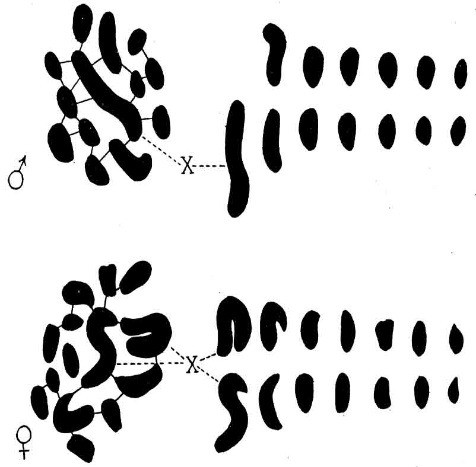
图112 雌性和雄性的Protenor的染色体群。雄虫有一条X染色体，但缺乏Y染色体；雌虫有两条X染色体（仿Wilson）

图113 长蝽（Lygaeus）的雌型和雄型染色体群。雄虫有X和Y；雌虫有两条X染色体（仿Wilson）
任何卵子同X精子受精（图114）即成雌性，有两条X染色体。任何卵子同Y精子受精，即成雄性。两种受精的机会相等，预期一半子代为雌性，一半为雄性。

图114 示性别决定的XX—XY型机制
有了这样的机制，便可以说明某些遗传中表面看去似乎不符合孟德尔式3与1的比例，但是经过严密检查，却看到了这种表面上的例外情况证实了孟德尔第一定律。例如，白眼雌果蝇同红眼雄果蝇交配时，其子代红眼蝇是雌性，白眼是雄性（图115）。如果X染色体上带有红眼和白眼分化基因，则以上的解释便明白了。子代雄蝇从白眼母蝇得到一条X；子代雌蝇也从母蝇得到一条X，但又从红眼父蝇得到一条X。父方基因为显性，所以子代雌蝇都有红眼。
如果用子代雌蝇同子代雄蝇交配，孙代会出现白眼的雌蝇雄蝇和红眼雌蝇雄蝇，互成1∶1∶1∶1。这个比例是由X染色体的分布得来，如图115中行所示的。
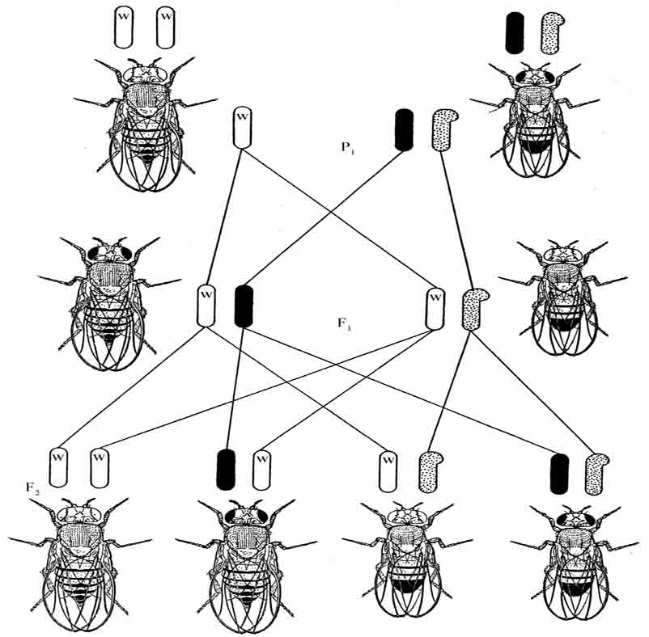
图115 果蝇白眼性状的遗传。白棒代表有白眼基因（w）的X染色体，黑棒代表“白眼基因”的等位基因即“红眼基因”的X染色体，Y染色体上着细点
附带不妨注意一下，细胞学和遗传学两方面的证据，特别是遗传学证据，证明人类属于XX—XO型或XX—XY型。人类染色体的数目只是到最近才相当精密地确定了。以前观察到的较小数值，已经证明是错误的，因为在浸裂细胞时染色体有互相粘连成群的倾向，据de Winiwarter报道：女性有48条（n＝24），男性有47条（图116a），这种计算已经得到Painter的证实，不过Painter最近证明：男性还有一条小染色体作为较大的X染色体的配偶（图117）。Painter认为这两条染色体便是一对XY。这项观察如果正确的话，那么，男女各有48条染色体，不过男性的一对染色体大小不同。
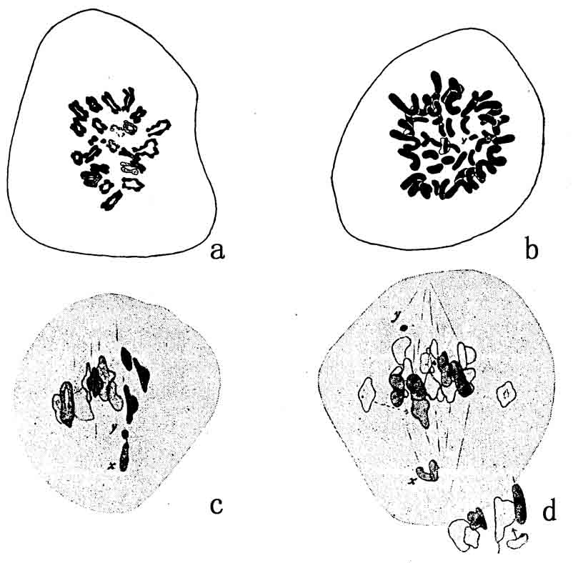
图116 a.de Winiwarter所描画的减数分裂后的人类染色体群；b.Painter所描画的人类染色体群；c和d.根据Painter的描画，示X染色体同Y染色体彼此分离的侧面观

图117 人类生殖细胞的成熟分裂，示X染色体与Y染色体在分离中（仿Painter）
随后，Oguma在男性里没有找到Y染色体，证实了de Winiwarter所观察到的数目。
人类性别的遗传学证据是十分明确的。例如血友病，色盲及其他两三种性状，都按照白眼果蝇同样的传递方法，遗传到后代。
以下各群动物属于XX—XY型或其XX—XO变型，O表示缺少Y，据报道，除人类外，尚有其他哺乳动物也具备这种机制：如马和负鼠，可能包括豚鼠在内。两栖类也多半属于这一类型，硬骨鱼也是一样。大多数昆虫属于此类；鳞翅目（蛾、蝶）是例外。膜翅类的性别另有一套决定机制（见下文），线虫和海胆也属于XX—XO型。
鸟型（WZ—ZZ）
图118示另一种性别决定机制——鸟型。雄鸟有两条相同的性染色体，后者可称为ZZ。这两条染色体在一次成熟分裂中彼此分离，于是每一个成熟的精子有一条Z。雌鸟有一条Z染色体和一条W染色体。卵子成熟时，每个卵子只能得到一条。所以半数的卵子有一条Z，半数的卵子有一条W。任何W卵子同Z精子受精，即成雌鸟（WZ）；任何Z卵子同Z精子受精，即成雄鸟（ZZ）。

图118 示WZ—ZZ型的性决定机制
这里，我们又找到一种机制可以自动地产生同样数目的雌雄两种个体。同前例一样，从受精时所发生的染色体组合中，产生了1∶1的性别比率。在鸟类里，这种机制的证据来自细胞学和遗传学两个方面，不过细胞学证据还不完全满意。
根据Stevens的研究，雄鸡似乎有两条同样大的长染色体（图119），假定是XX；母鸡只有一条长染色体。Shiwago和Hance证实了这种关系。
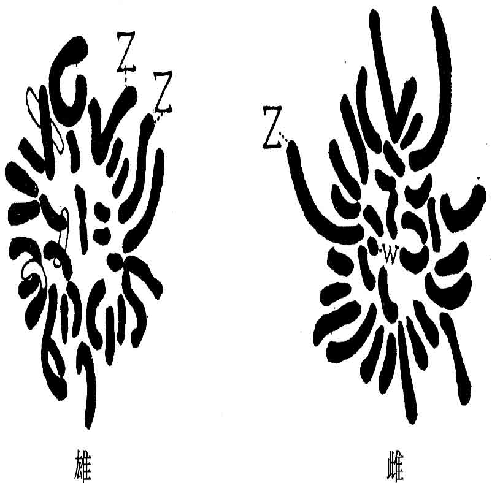
图119 公鸡和母鸡的染色体群（仿Shiwago）
鸟类的遗传学证据是毫无疑问的。这些证据来自性连锁遗传。如果用黑色狼山型雄鸡同花纹Plymouth Rock母鸡交尾，子代的雄鸡都有花纹，母鸡尽是黑色（图120）。假若Z染色体上含有分化基因，则上述结果是意料得到的，因为子代母鸡的一条Z染色体是从父方来的。如果把子代母鸡和雄鸡互相交尾，会得出花纹和黑色的母鸡和雄鸡共四种，其比例为1∶1∶1∶1。

图120 示黑鸡（●）同花纹鸡
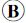
的杂交，说明其性连锁遗传在蛾类也发现了同样的机制，不过它的细胞学证据比较明确。Abraxas蛾的深色野生型雌蛾同浅色突变型雄蛾交配，子代的雌蛾色浅像父方一样；雄蛾色深像母方一样（图121）。雌蛾的一条Z从父方得来，雄蛾从父方得一条Z，从母方得到另一条Z。母方的Z上有深色基因，属于显性，所以产生了子代雄蛾的深色。
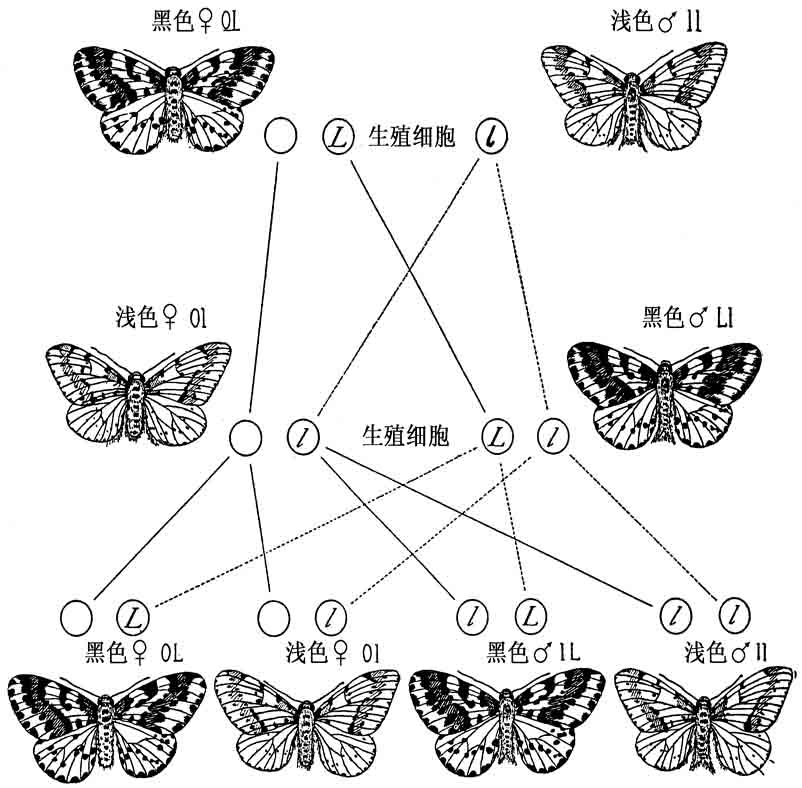
图121 Abraxas尺蠖蛾的性连锁遗传
田中义麿发现蚕的透明皮肤是一种性连锁性状，好像是借Z染色体遗传到下代。
Fumea casta雌蛾有61条染色体，雄蛾有62条。卵母细胞的染色体结合以后有31条（图122a）。在第一次分出极体时，30条染色体（二价染色体）各自分裂，然后分别进入两极。第31号染色体不分裂，向任一极进行（图122（注：原文中作“图119，b和b′”，译文中修正为“图122，b和b′”。——译者注。b和b′）。结果，半数的卵子会有31条，另一半卵子则有30条。第二极体分出时，所有染色体分裂，所以各个卵子的染色体数目仍和其分裂前的数目相同（即31条或30条）。精子成熟时，染色体两两接合成31条二价染色体。在第一次分裂时二价染色体分成两条；在第二次分裂时所有染色体分裂，每个精子有31条染色体。卵子受精，得出下述各种组合：
Seiler发现Talaeporia tubulosa的雌蛾有59条染色体，雄蛾有60条。Solenobia pineta的雌蛾和雄蛾以及其他几种蛾类都看不到不成对的染色体。另一方面，Phragmatobia fuliginosa却有一条复染色体，其中包括性染色体。雄蛾有两条这样的染色体，雌蛾只有一条。这种关系在W要素和Z要素不是分开的染色体的其他蛾类里，也似乎不是不可能存在的。
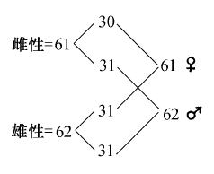
Federley用Pygaera anachoreta和P.curtula两种蛾杂交，也证实了蛾类的性连锁遗传。这个例子是有趣的，因为在每一物种内，雌雄幼虫互相类似。但不同物种的幼虫则表现出了种间的差异。这种在同种内没有二形的种间差异，却成为子代幼虫里性二形的根据（当杂交循“一个方向”进行时），因为，正如结果所表示的，两种幼虫之间的主要的遗传区别，是在Z染色体上面。如果anachoreta为母方而curtula为父方，则杂种雄幼虫在第一次蜕变后，便会显然不同。杂种雄虫同母族（anachoreta）极相类似，而杂种雌幼虫则同父族（curtula）相仿佛。
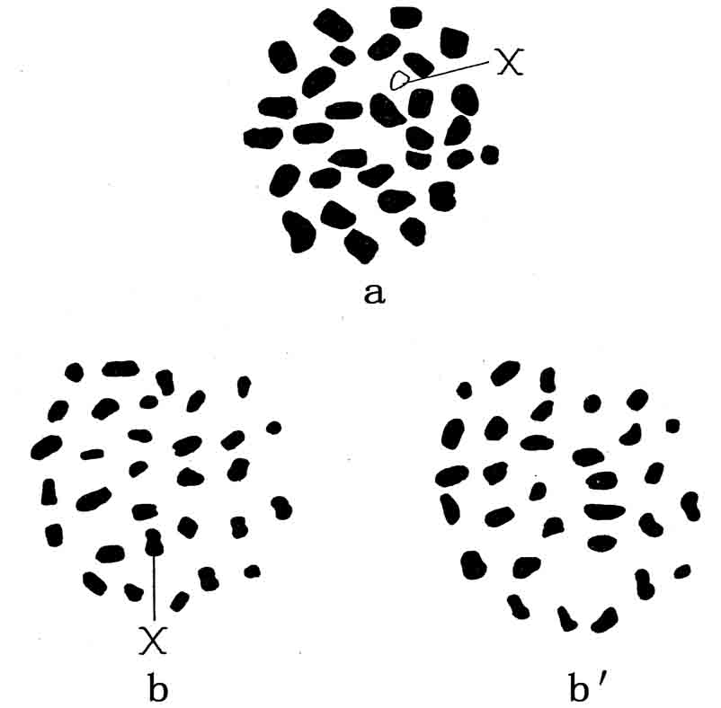
图122 a.Fumea casta卵子减数染色体群；b和b′卵子第一次成熟分裂时，外极和内极的染色体群；只有一极有一条X染色体（仿Seiler）
如果用anachoreta为父方，curtula为母方，其子代杂种都完全相似。这些结果可用下述假设来解释，即anachoreta Z染色体上有一个（或多个）基因，对于curtula Z染色体上的一个（或多个）基因，呈显性作用。这个例子之所以特别有趣，是因为在这里一个物种的基因，对于另一物种同一染色体上的等位基因，呈显性作用。这项分析，也同样适用于子代雄蛾回交任一亲型所产生的孙代中，只要考虑到后代的三倍性（参考第9章）。
我们没有理由来假设XX—XY型的性染色体同WZ—ZZ型的性染色体，是一样的东西。反之，我们也难于想象一个类型如何能直接变成另一个类型。不过另一个假设在理论上是没有困难的，就是尽管两个类型所牵涉的具体基因是相同的或几乎相同的，与决定雌雄有关的某种平衡中的变化，仍然可以在两个类型里独立发生。
雌雄异株显花植物中的性染色体
1923年的惊人事件之一，是四位独立的研究者同时发表了在雌雄异株的若干植物中存在着XX—XY型的机制。Santos在Elodea雄株的体细胞里发现了48条染色体（图123），其中有23对常染色体和一对大小不同的XY。X和Y在成熟时分开。结果得两种花粒，一种有X，一种有Y。
另有两位细胞学家木原均和小野知夫，在酸模属Rumex雄株的体细胞内，发现了15条染色体，由6对常染色体和3条异染色体（m 1 、m 2 和M）组成。当生殖细胞成熟时，这三条异染色体集合成一群（图123）。M进入一极，两条较小的m 1 和m 2 则进入另一极。结果得出两种花粉粒，6a+M和6a+m 1 +m 2 。后者决定雄性。
Winge在Humulus lupulens和H.japonica两种植物中发现一对XY染色体。雄株有9对常染色体和一对XY。在苦草（Vallisneria spiralis）的雄株里，Winge也发现了一条不成对的X染色体，其公式为8a+X。
Correns根据繁育工作，断定Melandrium（娄菜属）的雄株有异形配子。根据Winge的报道，雄性公式为22a+X+Y，证实了Correns的推论。
Blackburn女士也发表了，在Melandrium的雄株里，有一对长短不同的染色体。她添上了一个更重要的证据。雌株有两条同样大的性染色体，其中有一条相当于雄株的一条性染色体（图123）。在成熟分裂时，这两条染色体彼此结合，然后进行减数分裂。

图123 几种雌雄异株植物成熟分裂时的染色体群：Rumex，酸模属；Humulus，
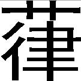
草属；Vallisneria，苦草属；Melandrium，娄菜属（仿Bělar）我认为，我们可以有把握地从以上证据作出下一结论，即至少有若干雌雄异株的显花植物，在性别决定上，采用了许多动物所有的同一机制。
藓类的性别决定
在上述显花植物性染色体被发现的几年以前，两位Marchals证明：在雌雄异体的藓类植物里（配子体分雌雄两种（注：苔藓和蕨类的单倍体世代（或称配子体世代）分为雌雄两种，其二倍体（或称孢子体）世代无雌雄之别，或者说是中性。显花植物本身相当于藓类的孢子体。其配子体世代好像是深藏在雌蕊和雄蕊里面。所以雌雄二词，用于藓类方面，则指单倍体世代而言，用于显花植物方面则指二倍体世代而言。两者的意义互相矛盾。但是这个矛盾不是二倍体和单倍体问题（因为甚至在某些动物如蜜蜂、轮虫等的同一世代里，也碰到这个矛盾），而是有性世代和无性世代同用了雌雄这两个词。不过，有了这样的理解，以后采用这种习惯用法就不会发生严重困难了。）），由同一孢子母细胞所产生的四粒孢子中，有两粒发育成雌配子体，另两粒发育成雄配子体。
稍后，Allen在亲缘关系相近的苔类植物里，（图124）发现了单倍体的雌原叶体（配子体）有八条染色体，其中最长的一条为X；单倍体的雄原叶体（配子体）也有八条染色体，其中最短的一条为Y（图124b′）。这样，每个卵子有一条X，每条精子也有一条Y。由受精卵发育而成的孢子体，有16体染色体（包括X和Y各一条）。减数分裂发生在孢子形成的过程里，X和Y分开。半数的单倍型孢子各有一条X，以后发育成雌原叶体，另一半各有一条Y，以后发育成雄原叶体。
最近，Wettstein用雌雄异株的藓类植物进行若干精密实验，作出了进一步的分析。他袭用Marchals所发现的一种方法，造成了具备雌雄两群染色体的配子体（图125左侧）。例如，他仿照Marchals的方法，截取一段载有孢子的柄部（细胞为二倍型）。由该段发育而成的配子体也是二倍体。这样获得了雌雄兼备（FM）（注：F代表雌性，M代表雄性。——译者注。）的配子体。
Wettstein用另一种方法造成二倍体的雌藓和雄藓，成为双重雌性（FF）或双重雄性（MM）。方法如下：Wettstein用水合氯醛和其他药剂处理原丝体，使一个个别细胞的胞质，在染色体分裂以后，受到抑制。这样，他就能够在这些雌雄异株的植物里造出二倍型的巨大细胞，各有二重的雌性要素或雄性要素，例如染色体。从这样的二倍型细胞，又造成了几种新组合：其中有些是三倍体，有些是四倍体。图125右侧表示最有趣的几种组合。
雌原丝体的一个二倍型细胞发育成二倍体植株（FF），后者又产生二倍型卵细胞。一个二倍型雄原丝体的细胞也同样发育成MM植株。一个FF卵子同一条MM精子相遇，结果产生了一株四倍型孢子体（FFMM）。
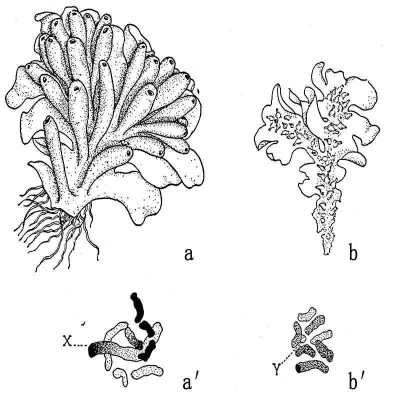
图124 a.苔类的雌原叶体；b.雄原叶体，a′.雌性有一条大的X染色体；b′.雄性有一条小的Y染色体（仿Allen）
图125 示藓类二倍体和三倍体的各种不同组合（仿Wettstein）
一个FF胚珠同一条正常雄精子（M）受精，结果产生了三倍型植株（FFM），如下表：

从FFM或FFMM的孢子体又能够再生出配子体。这些配子体都能够发生雌雄两种要素，也都能够产生卵子和精细胞；不过雌性器官（颈卵器）和雄性器官（精子器）的多少及其出现的迟早，则表现出特殊的差别。
上面谈到两位Marchals，在Wettstein所用的同一物种里，得到了二倍型的FM配子体，并且证明了该配子体产生雌雄两性的器官。Wettstein证实了这个事实，并且报道雄性器官发生在雌性器官之前。
比较一下FM、FFM、FFMM三型，是有意义的。FM植物的雄性器官成熟极早。开始时精子器比颈卵器多多了。颈卵器发生较晚。
像Wettstein所说的，FFMM植物雄性器官的早熟性，比FM型植物的要强两倍。开始时只出现精子器。在这一年很晚的时候，衰老的精子器已经凋落，这时才有少数颈卵器出现；有一些植株根本不发生颈卵器。更晚一些，雌性器官才开始发育旺盛。
三倍型植物中，雌性器官首先成熟。至少是当四倍体只有雄性器官的时候（七月间），三倍体还只有雌性器官，以后（九月间）才具备雌雄两种器官。
有趣的是：这些实验表示了原来是雌雄异体的植物，经过雌雄两种要素的联合，可以成为人工的雌雄同体的植物。这些结果也表示了性器官发生的先后，决定于植物的年龄。更重要的是，两种性器官发生时间上的关系，由于遗传组合循相反方向改变而颠倒起来。
第15章 其他涉及性染色体的性别决定方法
X染色体附着在常染色体上 Y染色体 成雄精子的退化 二倍型卵子排出一条X染色体，从而产生雄性 在精子发生过程中由于偶尔损失一条染色体所引起的性别决定 二倍体雌性与单倍体雄性 单倍体的性别 低等植物的性别与性别的意义
蜜蜂采蜜图。“蜜蜂和亲缘关系相近的黄蜂、蚁类，其性别决定也同胞核的二倍和单倍状态有关。这是已经确定了的事实，不过还没有得到明确的说明”（本书第166页）。
在若干动物中，还可以通过前一章所提出的方法以外的其他途径，调整性染色体的重新分配，来决定性别。
X染色体附着在常染色体上
在少数生物里，看到了性染色体附着在其他染色体上面；这种现象势必把X染色体和Y染色体的不同性质遮掩起来。在这种情况下，性染色体有时分离开来，例如蛔虫（图126）；或者雄性体细胞内的X染色体在染色性质上与其他染色体不同；或者像在Seiler所研究的某种蛾里，胚胎的体细胞内复染色体分散成若干条小染色体，从这种情况里发觉了性染色体的存在。

图126 蛔虫卵子内两条小的X染色体从常染色体里分离出来（仿Geinitz）
性染色体同普通染色体（即常染色体）的附着作用，牵涉到性连锁遗传的批判，特别是当雄性的才有X附着的常染色体，与同对中没有X附着的染色体之间发生交换时，更是这样。现在举一个例子来说明这一点。图127中，蛔虫染色体的黑色一端表示附着在普通染色体上的X染色体。雌虫有两条X染色体，分别附着在同对中的一条常染色体上面。成熟卵子各有一条这样的复染色体（因而也有一条X）。雄虫有一条X，附着在相应的常染色体上，但同对的另一条常染色体上却没有附着X。成熟分裂以后，半数的精细胞有一条X，另一半没有X。显然，这里的性别决定机制，同XX—XO型的机制，是一样的。
在雌虫的两条X之间以及两条附着染色体之间，都可能发生交换。

图127 示X染色体在雌雄两种蛔虫中的分布情况（仿Boveri）
但在XO雄虫方面，情形却有所不同；因为染色体上的X部分没有配偶，所以不能希望该部分发生交换，这样保证了性别分化基因与性别决定机制的一致性，至于复染色体上的两个常染色体部分，其间可能发生交换而不能影响性别机制。由X部分的基因所引起的性状，势必表现性连锁遗传，也就是说，这一类的隐性性状将在子代雄虫中出现。由常染色体部分的基因所引起的隐性性状，在子代雄虫中不会出现，不过这些由常染色体部分上的基因所引起的性状，对于性别以及对于X部分上基因所引起的性状，势必表现出部分的连锁（注：按照McClung的观察，Hesperotettix雄性的X染色体，并不一定附着在同一条染色体上面，虽然在某一个别个体里，X的附着总是恒定的。在其他个体里，X染色体可能是游离的。如果这样的类型有性连锁性状的话，那么，它们的遗传可能由于X染色体和常染色体之间的不恒定关系而复杂起来。）。
在上述假设的例子里，雄性体内这条没有X附着的常染色体（也就是同有X的复染色体成为配偶的那一条）似乎是和普通XX—XY型的Y染色体相当（因为它局限在雄系之内）；不同的，只是这条没有X附着的常染色体上面，有了一些基因，和复X染色体上面相应部分的基因相同。事实上，近来报道过一些遗传例子，那里有某些基因似乎是载在Y染色体上面。由此可知，Y染色体本身有时是可以载有基因的。
这样的提法，如果依照上面的解释，是不会引起异议的，但是如果此外还有其他含义，则显然会引起反对，因为雄性的X和Y之间，如果普遍发生交换，势必使染色体的性别机制遭受破坏。如果真有其事，那么，这两条染色体不久便会彼此雷同，而产生雌性和雄性的那种平衡上的差异也就会随之消失了。
Y染色体
支持Y染色体上有孟德尔式因子的证据分为两类。在两科鱼类里，Schmidt、会田龙雄和Winge证明了Y染色体上有一些基因。在毒蛾科里，Goldschmidt分析了种间杂交的结果，并作出了同样的解释（这里是W染色体）。毒蛾实验结果将于性中型一章中予以考虑，现在只讨论鱼类实验结果。
有一种小型缸养鱼虹 Lebistes reticulatus原产于西印度和南美北部。雄鱼色彩鲜艳，与雌鱼显然不同（图128）。异族雌鱼很类似，异族雄鱼则各有不同的特种色彩。Schmidt曾经发现，某一族雄鱼同另一族雌鱼交配，则子代雄鱼同父型相似。子代（F
1
）杂种自交，孙代雄鱼也同父型相似，没有一只表现出母系方面祖母的特性的。所有F
3
和F
4
的雄鱼也都和父系方面的祖父相似。这里，对于任何可能由母系祖母方面传递来的性状来说，似乎是没有一点孟德尔式分离现象的。
Lebistes reticulatus原产于西印度和南美北部。雄鱼色彩鲜艳，与雌鱼显然不同（图128）。异族雌鱼很类似，异族雄鱼则各有不同的特种色彩。Schmidt曾经发现，某一族雄鱼同另一族雌鱼交配，则子代雄鱼同父型相似。子代（F
1
）杂种自交，孙代雄鱼也同父型相似，没有一只表现出母系方面祖母的特性的。所有F
3
和F
4
的雄鱼也都和父系方面的祖父相似。这里，对于任何可能由母系祖母方面传递来的性状来说，似乎是没有一点孟德尔式分离现象的。

图128 示虹
 中一种性连锁性状的遗传，这种性状的基因位于X和Y染色体上面（仿Winge）
中一种性连锁性状的遗传，这种性状的基因位于X和Y染色体上面（仿Winge）
正反交（注：正反交：即在杂交中父母两方的性状与原来父母两方的性状刚好相反。——译者注。）的结果也是一样；子孙两代的雄鱼都和父系雄鱼相似等等。
在日本的小溪和稻田内找到另一种鱼Aplocheilus latipes有几个类型各有不同的色彩。在人工饲养下，也出现了另一些类型。在这些鱼里，每一个类型的雌鱼和雄鱼都有。会田龙雄证明：有几种差异是通过性染色体（X和Y）传递的。这些性状的遗传情况，可用下一假设来解释，即假设有关基因有时位于Y染色体上，有时又位于X染色体上，而且两染色体之间又可以发生交换。
例如鱼体的白色是性连锁遗传。其等位性为红色。纯白的雌鱼同纯红的雄鱼配合，子代的雌鱼和雄鱼完全是红色。子代自交，产生

假设白色基因位于雌鱼的两条X染色体上，用X W 代表（图129），又假设红色基因位于雄鱼的X和Y上面，用X r 和Y r 代表，则上述杂交按照XX—XY公式推演，应该得出图129的结果。如果红色（r）是显性，白色（w）是隐性，则子代雌性和雄性杂种全是红色。子代雌雄自交，结果如图130。孙代雌鱼一半红色，一半白色，所有雄鱼完全是红色，雄鱼条数，等于两种雌鱼条数的总和。
因此，除非子代（F 1 ）X w Y r 红色雄鱼的X和Y之间发生交换，从而产生一条Y w 染色体（图131），否则根据上述公式，纯红雄鱼同纯白雌鱼交配，是没有产生孙代白色雄鱼的希望的。只有当这种染色体［即Y w ］的精子同X w 的卵子结合时，才会产生X w Y w 的白色雄鱼。事实上，在子代杂合子X w Y r 的红色雄鱼（从上述实验得来）回交纯白雌鱼的一个实验中，已经出现过一条白色雄鱼。实验结果是这里两条红色雌鱼和一条白色雄鱼的出现，在子代雄鱼的X w 和Y r 的交换率为1/451的假设下，是可以得到解释的（图131）。白色（注：原文中的“白色”也许指白色雌鱼。——译者注。）同褐色雄鱼杂交，也得出同一结果，不过没有交换型。红斑雌鱼同白色雄鱼杂交，结果仍然是一样的，从回交所产生的172条孙代中，有11条为交换型。

图129 X染色体和Y染色体同有一个基因。图示该有关性状的遗传情况

图130 F 1 杂合子的雌鱼和雄鱼自交。图示其红白两色的遗传情况，Y染色体和X一样也有红色基因（r）

图131 子代雄鱼的X染色体和Y染色体分别含有红基因和白基因，两个基因被认为是等位基因。图示两基因之间的交换作用
Winge（1922—1923）把Schmidt对于虹
的实验更推进一步，并且独立地达到了会田龙雄所作出的关于Y染色体的同一结论。图128示某一族的X
o
X
o
雌鱼同另一族的X
e
Y
m
雄鱼杂交的结果。上述杂合子雄鱼的成熟生殖细胞分为X
e
和Y
m
两种非交换型以及X
o
和Y
em
两种交换型。相应地也就有了X
o
Y
m
和X
o
Y
em
两种雄鱼。后一种少见，占子代雄鱼1/73（注：另一实验交换型占雄鱼4/68。）。
Winge的报道中没有提到X e X m 型的雌鱼，所以不能根据他的材料来决定雌鱼中是否也发生了交换。其次，Winge用X o 代表一个类型的雌鱼，意思是说X o 染色体上缺少了某些基因。必须有两对基因，才能表示出两条X染色体之间的交换。事实上，Winge用X o 代表同Y m 发生了交换之后的X e ，但没有指明e和m的等位因子的变化。完全公式中应该有一条具备M基因和e基因的X染色体，以及一条具备m基因和E基因的Y染色体。交换以后，X上势必有E和M，而Y上势必有e和m，如图132所示。交换以后，X染色体不是X，而是X ME ，Y染色体是Y me 。如果me是显性而ME是隐性，那么，除了应该得出另一种交换型X M E（注：原文中X ME 可能是X me 的误写。因为除图132的交换方式外，还可能发生另一种方式的交换，例如X me 和Y ME 两个交换型。

但如作者所说的，这种交换并未发生，理由详见原文。——译者注。）以外，便会得到报道里的结果。如果X染色体上在M左侧的那一部分，有性别决定基因（即图中X的粗线部分），那么，这个实验之所以没有这种交换，便可以用M和X部分的接近这点来解释了。
图132 雄鱼中并联X染色体的常染色体部分同另一条常Y染色体发生交换。图示附着的X染色体同这个交换的可能关系
1927年Winge发表了：在虹
Y染色体上的九种基因与X染色体上的三种基因之间，一直没有发生交换。Winge认为这是因为这些基因同雄性决定基因互相接近，或者是因为这些基因和雄性决定基因是同一样的东西。X和Y上面的其他五种基因，表现出有交换，其中一个基因位于常染色体上。Winge把雄性决定基因看成是单一的、显性的，而把X染色体上等位基因的性质却当做一个悬而未决的问题，用O代表。
成雄精子的退化
瘤蚜Phylloxerans和蚜Aphids两属有密切的亲缘关系，两者同属于XX—XO型，但成雄精子（没有X）退化（图133），只剩下成雄精子（有X）。营有性生殖的卵子（XX）在放出两个极体以后，只留下一条X染色体。这种卵子同X精子受精，只能产生雌性（XX）。这种雌性称为系母，进行单性生殖，是以后各代借单性生殖的其他雌虫的起点。经过相当时期以后，在这些雌虫里，有些可以产生雄性后代，有些产生有性生殖的雌虫。后者像母虫一样是二倍体，不过它们的染色体成对接合，染色体数目减少一半。前者则借下节所讲的过程，产生雄虫。

图133 示bearberryaphid蚜的二次成熟分裂过程。在第一次分裂中（a~c），大染色体进入一个细胞；在第二次分裂中（e、f、g），这个细胞又分裂成两个有作用的成雌精子，另一个发育不全的细胞（d）则不再分裂
二倍型卵子排出一条X染色体，从而产生雄性
像上面所说的，某种瘤蚜（Phylloxerans）的雌虫在单性生殖周期的末期出现，它产生比较小的卵子。刚在小卵成熟之前，X染色体集合起来（共有四条）。卵子只分出一个极体；有两条染色体进入极体（图134）。这时每一条常染色体分裂为二，排出其中的一条。卵内留下二倍数目的常染色体和半数的X染色体。卵子借单性发育，形成雄虫。

图134 a.瘤蚜（Phylloxerans）成雄卵子第一次成熟分裂的纺锤体；有两条染色体滞留在纺锤体上，最后排出卵外，卵核内只留下五条染色体。
b.成雄卵子第一次成熟分裂的纺锤体；六条染色体分裂，卵核内仍留下六条
蚜（Aphids）也有同样的过程。虽然还没有看到卵子排出一条X的实在情况（只有两条X），但是卵子在放出唯一的极体以后，便少了一条染色体，可知它一定像在瘤蚜一样，失去了一条染色体。
以上两类昆虫决定雌雄的过程，与其他昆虫的过程不同，但仍然是利用同一机制，在不同形式下达到同一结果。
还有另一件非常有趣的事实。产生雄卵的瘤蚜雌虫，它所产生出的卵子，比以前各代单性生殖的卵子小些。所以在卵子排出X染色体以前，便可以看出卵子的命运。这里，雌雄性别似乎决定于卵子的大小，也就是说，决定于卵内胞质含量的多少。不过这种推论是不合逻辑的，因为卵子必须排出半数的X染色体，才能成为雄性。我们不知道如果全部X都留下时会发生什么变化，卵子也可能会发育成雌虫。总之，这里事实是：母体内的一种变化，引起了小卵的形成，小卵又减少了半数的X染色体来变成雄虫。至于母体内变化的性质，目前却不知道（注：雌性轮虫Dinophilus apatris产生两种大小的卵子。两种卵子都排出两个极体，形成单倍型原核，两者受精后，大卵发育成雌，小卵发育成雄（Nachtsheim）。卵巢为什么产生两种卵子，目前完全不知道。）。
在精子发生过程中由于偶尔损失一条染色体所引起的性别决定
在雌雄同体的动物当中看不到性别决定机制，也不应该有这种机制，因为所有的个体都完全一样，都有精巢和卵巢。在一种线虫Angiostomum nigrovenosum里，雌雄同体世代同雌雄异体世代互相交替。Boveri和Schleip证明，当雌雄同体世代的生殖细胞成熟时（图135），往往损失两条X染色体（滞留在分裂平面上），因而产生两种精子，一种有五条染色体，另一种有六条染色体。当同一雌虫的卵子成熟时，12条染色体两两接合，形成六条二价染色体（图136）。第一次分裂时，六条进入第一极体，另六条仍留在卵内。卵子内六条染色体分裂，六条子染色体进入第二极体，卵子内留下六条子染色体，其中各有一条X染色体。卵子同六条染色体的精子受精，发育成雌虫，卵子同五条染色体的精子受精，发育成雄虫。这里，在细胞分裂中的一件偶然事件，造成了性别决定机制。
图135 管口属线虫（Angiostomum nigrovenosum）精细胞的两次成熟分裂（上行示第一次成熟分裂）。第二次分裂时（下行），有一条X染色体滞留在分裂平面上（仿Schleip）

图136 Angiostomum nigrovenosum卵子的两次成熟分裂。卵核内留下六条染色体（仿Schleip）
二倍体雌性与单倍体雄性
轮虫首先经过许多世代的单性生殖，各代雌虫有两倍数目的染色体。卵子没有减数分裂，只放出一个极体。单性世代在一定营养条件下似乎可以无限期地绵延。不过正如Whitney所证明的，改变营养——例如用绿色鞭毛虫类饲养轮虫，便能结束单性生殖世代。在这种营养下，雌虫所产生的下一代雌虫（借单性生殖）有双重可能性。这一代的雌虫如果同雌虫（当时可能出现）受精，则在每个卵子成熟以前，只有一条精子进入卵内。卵子在卵巢内长大，卵外披一层厚壳（图137）。卵子放出两个极体，以后卵子的单倍型胞核同精核（单倍数）结合，从而恢复了染色体的全额。这个卵子称为休眠卵或冬卵，有二倍数目的染色体，不久，卵子发育成母系，重新产生一个新系的单性生殖的雌虫等等。
图137 a.臂尾轮虫Brachionus bakeri的雌虫，附有单性生殖的成雌卵子。b.雌虫，附有单性生殖的成雄卵子。c.雌虫，附有成雌和成雄的卵子。d.雄虫（仿Whitney）
另一方面，该雌虫如果没有受精，则其所产生的卵子比普通单性生殖的卵子小。卵内染色体两两接合，放出两个极体。卵内留下一组单倍染色体。卵子分裂，但染色体数目不加倍，终于发育成为雄虫。在单倍体雄虫的精子形成中，究竟发生了什么变化，还不明确。无论是Whitney（1918）的研究，或者是Tauson（1927）的研究，对于这种变化都没有作出确实可信的说明。
从表面上看，以上证据似乎意味着单倍数目的染色体产生雄性。二倍数目的染色体产生雌性。一点也看不出有性染色体的存在，所以不能假定特殊的性基因的存在。即使承认该类基因并不存在，为什么半数的染色体会产生雄性而二倍数目的染色体会产生雌性，依然无法解释，除非认为这里所涉及的分化因子，就是两种卵子内胞质多少和其染色体数目之间的关系。然而这种说法又和蜜蜂（说明如下）一例不合。在蜜蜂里，二倍型卵子发生成雌性，单倍型卵子发育成雄性，但两者却是一样大小。以上两例中突出的事实，是单倍数目的染色体和雄性有关，即令在轮虫内另有决定哪一种卵子成为单倍型的其他因素。
也许可能创立一种性染色体的解释，设想有两种不同的X染色体，又设想在减数分裂中一种进入雄卵的极体，另一种则由有性卵子排出（两种都留在单性生殖的卵子内），但是必须承认，目前还没有理由，也没有必要提出这样的臆想。
蜜蜂和亲缘关系相近的黄蜂、蚁类，其性别决定也同胞核的二倍和单倍状态有关。这是已经确定了的事实，不过还没有得到明确的说明。后蜂在后蜂室内、职蜂室内和雄蜂室内产卵。产前的卵子完全相似。职蜂室和后蜂室内的卵子在产卵时受精，雄蜂室的卵子不受精。所有卵子都放出两个极体。卵核内留下单倍数目的染色体。在受精卵内，精子带来一组单倍染色体，和卵核结合，得出二倍数目。这种卵子发育成雌性（后蜂和职蜂）。后蜂室的幼虫得到丰富的营养，发育完全，成为后蜂。职蜂室内幼虫的食物不同。像上面所说的，雄蜂是单倍体（注：已经知道，当没有受精的雄卵子进行分裂时，每一条染色体断裂为两个部分（形成种系的胞核可能例外）。这一过程似乎不是染色体纵裂成两条染色体，而是横裂成为两片。如果这项解释是正确的话，那么，基因数目实际上并没有增加，这个碎裂或分开过程（在一些线虫里也发现过）对于性别决定机制，也没有说明什么。）。
这里，不能假想性别是由成熟分裂以前的任何影响来决定的。没有证据来肯定卵子内的精核可以影响染色体的成熟分裂方式。也没有证据来肯定环境（雄蜂室或职蜂室）对于发育过程有任何的影响。事实上，这里也没有证据来肯定有任何一组的特殊染色体可以区别为性染色体的。在雌雄两种个体之间，我们所知道的唯一区别，只是染色体数目上的不同。目前我们只能依赖这点关系，把它看成是同性别决定有着某种还未知道的联系。现在这种关系还难于同其他昆虫中性别决定于染色体基因间的平衡一致，但是它仍然可能起源于染色体（基因）和胞质之间的平衡。
还有一件有关蜜蜂中性别决定的事实。在雄蜂生殖细胞成熟分裂中，第一次分裂失败，分出了一个没有染色体的极体（图86）。第二次分裂时染色体分裂，一半进入一个很小的细胞，这个细胞以后退化；另一半则留在大细胞内，这个细胞变成有作用的精子，含单倍数目的染色体。像上面谈过了的，精子带着单倍数目进入卵子，随后卵子发育成雌性。
有几个例子，谈到两族蜜蜂杂交，杂种的后代被记录下来（Newell）。据说孙代雄蜂只表现了原来一个族的性状。如果两族的区别只是同一对染色体上两组基因间的差异，则孙代雄蜂的特点是可以预料得到的，因为这两组基因在减数分裂时，会彼此分离，这一组或那一组会留在卵子里面，以后卵子发育成雄性。但是，如果族间的区别决定于异对染色体上的基因，那么，孙代雄蜂当然没有区分为鲜明的两族的希望了。
职蜂（和职蚁）有时产卵。这种卵子一般发育成雄性，这是意料得到的，因为职蜂不能从雄蜂受精。有人报道在职蚁的卵子中偶尔出现有性类型的雌蚁。可以设想，这是由于卵子保留了双组染色体。据说，在Cape蜜蜂中，经常有职蜂的卵子发育成雌性（后蜂）。我们不妨暂时采用上面所说的同一解释，来说明职蚁中的雌性偶尔产卵，其中有些卵子在特定条件下发育成雌蚁。
研究寄生蜂Habrobracon，已经比较充分地证实了母虫性状直接传给子代单倍体雄虫。普通型有黑眼。在培养中出现了一只橙色眼的突变型雄蜂。和黑眼雌蜂杂交，经过单性生殖得到了415只黑眼雄蜂，又从受精卵得到了383只黑眼雌蜂。
子代的四只雌蜂被隔离后，经过单性生殖，产生了268只黑眼雄蜂和326只橙色眼雄蜂，没有产生雌蜂。
另外有八只F 1 雌蜂（从第一只橙色雄蜂受精而来）同子代雄蜂自交。孙代有257只黑眼雄蜂，239只橙色眼雄蜂和425只黑眼雌蜂。
第一只橙色眼突变型雄蜂同它的F 1 雌蜂交配，得到221只黑眼雄蜂，243只橙色眼雄蜂，44只黑眼雌蜂，和59只橙色眼雌蜂。
在雄蜂为单倍体，又由未受精的卵子发育而成的假设下，这些结果都是可以预料到的。当杂种母蜂的生殖细胞成熟时，橙色眼基因同黑眼基因分离，半数的配子得黑眼基因，另一半配子得橙色眼基因。任一对染色体上的任一对基因，都将产生同样的结果。
橙色眼雌蜂同黑眼雄蜂交配。从11对杂交中，共得预料到的181只黑眼雌蜂和445只橙色眼雄蜂。另有22对杂交，除了产生816只黑眼雌蜂和889只橙色雄蜂以外，还产生了57只黑眼雄蜂。这一类雄蜂的存在要求另一种不同的解释。它们显然是由同黑眼精子受精的卵子发育出来的。一种可能的解释似乎是：单倍型精核在卵子内发育，而且产生了至少是形成双眼的那些部分。卵子内其他部分的胞核也可能从单组型卵核得来。事实上，有些证据肯定了这是一个正确的解释，因为Whiting已经证明，在这种特殊的黑眼雄蜂里，有些可以繁殖，好像它们的全部染色体只载有母方的橙色基因似的。但是其他事实指明，这里的解释也并不这么简单，因为这些雄蜂大多数都没有生殖力，从有生殖力的雄蜂（嵌合型雄蜂）又产生出了几只雌蜂（注：根据Anna R.Whiting（1925）报道：“黑眼偏父遗传的雄蜂，在形态的畸变上，比正常产生出来的雄蜂和雌蜂，有着更高的百分率。大多数偏父遗传的雄蜂已经被证明是没有生殖力的，有一些作为黑眼来繁殖的有部分的生殖力，此外还有少数嵌合体产生了橙色雌性后代，后代有完全的生殖力。偏父遗传的雄蜂的下一代橙色雌蜂，在形态和孕育性上，都是正常的。偏父遗传的雄蜂的下一代黑眼雌蜂数目少，畸形百分率高，并且几乎完全无生殖力”。Habrobracon的特种雄蜂可以说明蜜蜂里出现的一些不规则的情况。）。不管这些特殊情况最后如何解决，这些杂交的主要结果，证实了雄性是单倍体这个理论。
单倍体的性别
1919年，Allen证明：在囊果苔属（Sphaerocarpus）的单倍型世代里，雌配子体的细胞有一条大X染色体，从而合理地解释了两种原叶体（即配子体）的差别。两位Marchals的实验和Wettstein等人的实验同样证实了：在雌雄异株的藓类植物里，每个孢子母细胞分裂成四粒孢子，其中两粒发育成雌原丝体（即配子体），两粒发育成雄原丝体（即配子体），与Allen关于苔类研究的结果相符合。一种配子体产生卵子，另一种配子体产生精子，所以习惯上把它们分别称为雌性或雄性。下一代的孢子体（即合子）是由卵子同精子受精后发育而成，有时认为是没有性别的或无性的。不过它还是有一条X染色体和一条Y染色体。
在雌雄异株的显花植物里，雌雄两词应用在孢子体（二倍体）一代，而不用在卵细胞（在胚囊内，是单倍体世代的一部分）和花粉粒（也是单倍体世代的一部分），和苔藓类的用法对照，发生了一些不必要的混乱。骤然看去，苔藓两类的雌性和雄性似乎用在不同的意义上。但是除了系统发生意义上的言辞矛盾外，并没有真正的矛盾。如果这两个例子改用基因来说，则想象中的困难便不会存在了。例如苔类植物，在含大X染色体的单倍型配子体里，其基因的平衡作用引起了卵细胞的产生，而在含小Y染色体的单倍型配子里，其基因间的平衡作用则引起了精细胞的产生。卵子的载体称为雌性，精子的载体称为雄性。在雌雄异株的显花植物里，二倍体世代的雄株有一对大小不同的染色体（即X和Y）。二倍型世代常染色体上的基因同两条X染色体上的基因互相平衡，产生雌性（即产生卵子的个体）；二倍体世代常染色体上的基因同一对XY上面的基因互相平衡，产生雄性（即产生精子的个体）。不论是苔类植物或是显花植物，雌雄决定于两组基因间的平衡作用。两例的有关基因可能不同，或者某些基因相同而另一些不同。但主要一点是：在两个例子里，平衡上的差异引起了两种个体的产生，产生卵子的称为雌性，产生精子的称为雄性。
也许可能批评以上说法只是重述事实而没有解释事实。诚然不错。我们的一切努力，就在于指出可以这样地复述这些事实，以致两例之间没有明显的矛盾。我们希望也许总有一天会解决这一问题，即在不同的平衡产生两种个体的例子里，究竟涉及了多少基因，和涉及了什么性质的基因。然而这里没有什么要我们焦急的，而且确实没有任何论证可以用来驳倒在性别决定方面的近年来的进展。
在动物中，单倍状态是配子的特点，没有像植物那样的单倍体世代同二倍体世代互相交替的例子。不过至少有两三个类型，雌性是二倍体，雄性是单倍体。膜翅类和其他几种昆虫的雌性为二倍体，雄性为单倍体，至少在发育的初期是这样的。轮虫的雌性为二倍体，雄性为单倍体。以上各例中都看不出有严格的性染色体。目前，还不能根据实验方面的证据说明这些关系。在发现这种证据以前，所提出来的一些可能的理论解释，都不说明问题。
另一方面，果蝇的性别机制已经被掌握了，其性别决定中有关基因之间的平衡问题，也有了实验方面的证据。Bridges近来对于果蝇有一项重要的观察。他发现了两只嵌合体果蝇，并根据遗传学证据，断定它们很有可能是一个复合体，一部分为单倍型，一部分为双倍型。一只果蝇的单倍型部分包括了性栉这一种第二性征（正常雄蝇有，雌蝇没有）。嵌合体的单倍型部分没有性栉。换句话说，正如预料得到的，一群包括三条常染色体和一条X的单倍染色体，像六条常染色体和两条X一样，产生了同一结果。两者的基因平衡是相同的；嵌合体的单倍型部分虽然像正常雄蝇一样，只有一条X，但是雄蝇的这样X却被六条常染色体抵消了。
Wettstein报道过一个相反的情况。他用人工方法获得藓类植物的双倍型配子体。这些配子体如果是从单倍型雌配子体的一个细胞发育出来，便是雌性；如果是从单倍型雄配子体的一个细胞发育出来，便是雄性。在两种情况下，平衡仍然是和以前一样的。显然，两者的性别决定，不是依靠染色体数目来调整的，而是由两组相对基因或相对染色体之间的关系来规定的。
低等植物的性别与性别的意义
雌雄性别名词问题在近来研究某些伞菌或担子菌的结果中显得最突出。按照Hanna近来的说法，在这一群伞菌里，“雌雄性别问题引起真菌学家的注意已经有一百多年了。”M.Bensaude女士（1918）、Kniep（1919）、Mounce女士（1922）、Buller（1924）和Hanna（1925）的发现，揭露了一个非常有趣的情况。为叙述简明起见，这里只详细谈一下Hanna新近的论文。Hanna采用新颖精细的技术，能够从伞菌的菌褶里分离出单个孢子。在粪胶培养基内，每一个孢子长成一株菌丝体。再让各个单孢子型菌丝体一株一株地彼此接触，便能够鉴别出各株的性别。在这些组合里，有某些会彼此联合，形成一株二级菌丝体，其上长着“锁状连合”，从而表示原来的两株是“不同性别”的。这样的菌丝体后来发生子实体或伞菌。另一方面，其他组合，如果配在一处的话，却不能形成有锁状连合的二级菌丝体，而且一般也不产生子实体。作者把这样的联合理解为有关菌丝体是同性别的。
现在把同一品系（即同一地区）的单孢子型菌丝体加以鉴定，结果如下表。两株单孢子型菌丝体联合以后能形成锁状连合的，用“+”代表；不能形成的，用“-”代表。表内菌丝体分为四群（同群的菌丝体安排在一起）。作者把这种结果理解为这个鬼伞Coprinus lagopus物种里一个子实体的孢子，属于四群不同的性别。
像Kniep所首先证明的，上述四群在两对孟德尔式因子Aa和Bb的假说下便能够得到解释。当各个担子形成孢子时，同对的因子分离，每个伞菌会发生AB、ab、Ab和aB四种孢子。每一种孢子发育成遗传组成上相同的菌丝体。如下表所示，只有含两个不同因子的那些菌丝体才能联合，并形成锁状连合。这便意味着一共有四种性别，其中只有性别因子不同的才能结合起来。
也有一个细胞学背景，同以上遗传学假设非常符合。在单孢子型菌丝体的胞质内，存在着很多个胞核。两个菌丝体联合以后，新菌丝体（即次级菌丝体）的胞核两两相接成对。一个合理的假设是：每对胞核中，一个胞核从某个菌丝体得来，另一个则从另一菌丝体得来。假定在四个孢子将要发生时进行了减数分裂，结果，每个孢子发育成一株新的减数菌丝体。这样的情况符合于高等植物和动物中的减数分裂过程，从而使这些霉菌同二倍染色体减少到配子的单倍时所发生的遗传学结果，互相一致。当然，在鬼伞类和其近缘各物种里，二倍—单倍关系还没有得到证明，但是这是已知事实的正确解释，似乎不是不可能的。如果真是这样，那么，遗传因子在伞菌里的分离和在其他植物及动物中的分离，原则上是相同的。
以上关系存在于同一地区的各个品系之间，测验不同地区的品系，得出了非常相似的结果。任何一个品系的一切单孢子型菌丝体，同其他品系的一切单孢子型菌丝体，联合起来（即产生具有锁状联合的菌丝体等等）。下表表示一个地区（加拿大的埃德蒙顿）内一个子实体的11株单孢子型菌丝体。同一地区（温尼伯）内11株单孢子型菌丝体联合，不同区域的各系互相交配时，都得出同一结果。在Hanna所做的组合里，鬼伞有20种性别，如果推而广之，包括其他区域的组合，则性别的数目，无疑地会大大增加。
不仅仅进行了这种杂交，而且也用了杂交过的一些品系进行实验，来进一步测验因子假说。如果把不同品系的因子当做成对的等位因子看待，一个品系的因子称为Aa和Bb，另一品系的因子称为A 2 a 2 和B 2 b 2 ，那么，这两个变种的菌丝体联合后可能产生的杂种，将有16种之多，而每一株杂种菌丝体的行为方式，也将和纯种菌丝体的行为方式相类似，即只能在两株菌丝没有共同的因子时，才能形成锁状联合。

如果我们从习惯的意义上来理解有关的因子，那么，这里便有着规模广泛的两性现象了。我们也不反对这种用法，如果在这里的基础上解释雌雄性别看来是有利的话。就我个人来说，我认为如果对上述结果采用East关于烟草研究的那个解释，把有关的因子称为自交不孕性因子（见下文），那样便会更简单一些。不管各人选用什么文字来描述，原则上解释仍然是一样的。
最近Hartmann在其《相对的性别之研究》论著中描述了关于海藻（长囊水云：Ectocarpus siliculosus）研究的结果。这种植物所放出的自由运动的游动孢子在外形上是一样的，但在以后行动上却分为雌雄两类。雌性孢子迅速静止下来，雄性孢子则继续成群运动一些时候，并且围绕着一个雌性个体（图137a）。
图137a 左侧示成群的雄配子围绕一个雌配子运动，
右侧示雄配子和雌配子的联合过程（仿Hartmann）
一个雄性游动孢子同一个静止中的雌性游动孢子彼此融合。Hartmann先将亲代植株一个一个地隔离开来，等到它们放出游动孢子时，才集体测验异株孢子之间的相互关系。
下表总结了一个典型的实验结果；有联合的，用“+”表示，无联合的，用“-”表示。每一种孢子用其他各种孢子，逐一检验。在大多数例子里，某一株的游动孢子对别株的孢子或者一贯表现雄性行为，或者一贯表现雌性行为，不过在少数例子里，其游动孢子在某些组合里呈雌性作用，在另一些组合里却呈雄性作用。例如4号（下表左方）同13号之间的结果，同它们在其他组合里的反应，是不一致的。另一个例外是35号同38号（下表右方）之间的反应，从两者其他行为上看，都可以称为雄性，但是两者彼此间却呈雄性和雌性的反应。Hartmann根据各种个体在不同组合中所形成的群数多少，把某些个体说成是强雌性，而另一些个体则说成是弱雌性，并作出结论，认为弱雌性对于强雌性起着雄性的作用，而对于强雄性则起着雌性作用。这些关系究竟受到年龄因子（例如静止下来）或环境因子多大影响，还是不十分了解的，虽然Hartmann从检验游动孢子中知道这种关系天天维持原状，似乎排斥了这样的解释。这种材料可惜不适于进行有关因子的遗传学分析。某个体的配子的迅速静止，是否能充分表示其“性别”，即使能表示，弱雌性又如何变化为有雄性的作用等等，也是不明确的。不过同一植株的配子不能相互交配，这种现象似乎属于自交不孕和有关的杂交孕育的同一范畴。把这当做性别的标准，在目前也许主要是依赖于个人的兴趣和定义。就我个人来说，如果把性别一词，不用于普通所谓的性别现象，而用于配子联合与不联合的现象，那么，不但不能阐明有关的问题，反而使问题混乱起来。
现在不妨提出一个问题，即把鬼伞的菌丝连合以及水云（Ectocarpus）的孢子联合中的有关因子称为自交不孕因子，而不称为性因子，是不是会更简单一些，更不容易引起混乱呢？East近来关于烟草自交不孕性研究的重大结果，已经为显花植物中多次研究过的自交孕育和杂交孕育问题，第一次奠定了证据确凿的遗传学基础。显花植物的这些现象，在许多方面，同鬼伞和水云中配子的联合相似，并且两者过程的进行方法虽然可能不完全相同，但是两者的遗传学和生理学背景却很可能是基本上相同的。
East和Mangelsdorf用了几年的工夫研究过Nicotina alata和N.forgetiana两种烟草杂交中的自交不孕性遗传问题。他们在一篇简短的报告里总结了这项研究。这里只能提到最一般性的结论。他们采用特殊操作，把自交不孕的个体育成几种自交的、纯合的品系，维持到12个世代之久，由此得到了适合于检验这个问题的材料。只提出一个族的类型的结果作为一个例子。有a、b、c、三类的个体，任何一类的每个个体，对于同类的其他个体，都表现自交不孕性，而对于其他两类的每一个个体，却是可以孕育的；不过由正反交产生的后代却不相同。例如a♀同c交配，只产生b和c两类个体，而c♀同a交配却只产生a和b个体。两类个体的数目总是一样多的，但是后代里却从未看到母型个体。解释是这样的：假定这一族有S 1 S 2 S 3 三个等位基因，如果a类＝S 1 S 3 ，b类＝S 1 S 2 ，c类＝S 2 S 3 ，如果每一类植株的雌蕊柱头只能刺激含有异类自交不孕因子的花粉的生长，则实验结果便得到了一致的说明。譬如植株c（S 2 S 3 ）只对于含S 2 S 3 以外其他因子的花粉，供给充分刺激。只有含S 1 因子的花粉才能穿过花柱，同卵子受精。子代将得S 1 S 2 （b类）和S 1 S 3 （a类）为数各半。在反正交中a♀（S 1 S 3 ）同c（S 2 S 3 ）相配，只有S 2 花粉才能穿入卵内，产生S 1 S 2 （b）和S 2 S 3 （c）。以上结果可代表其他各族各类的实验，说明了为什么子代里没有雌型组合，说明了为什么正反交的子代有所不同，也说明了为什么不论父方是哪一类，子代的两类个体（没有母型）在数目上总是一样多的。
有几种方法来检验这个假说是否合理。检验结果都证实了这个假说。这种令人信服的分析，是经过了细心计划的遗传学实验的结果，对于75年多来学者们未能解决的受精问题作出了头等的贡献。这不仅是这个例子的一个精辟的遗传学分析，而且也深入了解了单倍型花粉管和双倍型雌蕊组织之间的生理反应。直接观察已经证明：花粉管在雌蕊组织内的生长率是符合于差等生长率确实存在这项见解的。目前还不知道这种关系的性质，不过有理由可以假定它是化学性的。在低等植物里，不同遗传性的菌丝体互相联合时的自交不孕性，可能用相同的或类似的化学反应及其遗传学基础来解释。如果这种说法能够成立，那么，遗传学问题的主要对象便是孟德尔式的自交不孕因子了。要把这些因子说成是性别因子，至少是习惯上应用在雌雄异体生物躯体差异方面的性别因子，这种见解的价值似乎是可以怀疑的。确实不错，在这些差异里，也有产生以互相联合为主要机能的精子和卵子的那些差异，但是，就一般人所理解到的说来，这些机能同雄性和雌性个体体质上所涉及的机能比较，却是不够鲜明的。

饲养在瓶子里的果蝇（李凤霞提供）
第16章 性中型（或中间性）
近年来，在雌雄异体的物种里，发现了一些奇怪的个体，表现出雌雄两种性状各种不同程度的组合。目前所知道的性中型，可以说有四个来源：（a）由于性染色体与常染色体比率上的变化；（b）由于基因内的变化，不涉及染色体数目上的变化；（c）由于野生种族杂交所引起的变化；（d）由于环境的变化。
两只牛的胚胎，其中一只为雄化雌犊，同181页图141所示。
近年来，在雌雄异体的物种里，发现了一些奇怪的个体，表现出雌雄两种性状各种不同程度的组合。目前所知道的性中型，可以说有四个来源：（a）由于性染色体与常染色体比率上的变化；（b）由于基因内的变化，不涉及染色体数目上的变化；（c）由于野生种族杂交所引起的变化；（d）由于环境的变化。
从三倍体果蝇而来的性中型
三倍体雌果蝇的某些后代，属于第一类性中型。三倍体雌蝇的卵子成熟时，染色体分布零散，并且在放出两个极体以后，留存卵子内的染色体的多少不一。这种雌蝇同正常雄蝇交配（雄蝇的精子有一组染色体），得出几种后代（图138）。有理由相信，很多卵子，因为缺少正当组合的染色体来保证新个体的发生，所以完全不能发育；不过在存活下来的卵子里，也有若干三倍体，更多的二倍体（正常型）以及少数性中型。这些性中型（图139）有三组常染色体和两条X染色体（图138）。其公式为：3a+2X（或3a+2X+Y）。因此，性中型的X染色体（虽然和普通雌蝇的一样多）可是它的普通染色体却多了一组。由此可知，性别不决定于现有X染色体的实际数目，而决定于X染色体与其他染色体之间的比率。

图138 示黑腹果蝇中二倍体、三倍体、四倍体与性中型的公式。
四倍型雄蝇（4a+2X+2Y）是想象的，除上述各类外，三倍体雌蝇又产生超雌性（3a+3X）（仿Bridges）

图139 左方示果蝇的雌性性中型，从背腹两面观察。其染色体群包括X两条、大型常染色体（Ⅱ和Ⅲ）各三条，往往还有小型第四染色体（这里有两条）。
右方示雄性性中型，从背腹两面观察。其染色体群包括X两条、第二第三染色体各三条，往往只有两条第四染色体（这里有三条）
Bridges根据上述染色体相互间的特殊关系，断言性别决定于X同其他染色体的平衡作用。我们不妨设想，X染色体含有较多的形成雌性的基因，而其他染色体则含有较多的形成雄性的基因。普通雌蝇为2a+2X，两条X使平衡偏向雌性。普通雄蝇只有一条X，于是使平衡偏向雄性。三倍体3a+3X和四倍体4a+4X的平衡，同普通雌蝇的平衡一样，而实际上，三倍体和四倍体也同普通雌蝇一样。四倍体雄蝇4a+2X+Y（一直还没有得到）的平衡，同普通雄蝇的平衡一样，估计它会和普通雄蝇相同。
三倍体方面的证据，对于性别决定基因的存在，并没有提供详细的知识。如果我们把染色体看成是基因，那么，性别的决定势必同基因有关，然而上述证据却没有证明这种基因究竟像什么样子。即使基因有关系，我们也不能说明代表雌性的，究竟是X上的一个基因，或者是成百的基因。普通染色体的情形也是一样，上述证据也没有说明，如果真有雄性基因的话，这类基因究竟是在所有的染色体上或者只限于一对染色体。
但是这里有两种方法，我们希望有一天它们会帮助我们发现有关影响性别的基因的一些东西。X染色体可以断裂成片，如果真有性基因，便可以借某一种方式的断裂来揭露性基因的位置。另一个希望寄托在基因突变的发生上。如果别的基因都发生突变，如果真有特殊的性基因，这种基因怎么会不发生突变呢？
事实上，由于已经有了一个例子，果蝇第二染色体上的一个突变，引起了性中型的发生。Sturtevant（1920）研究了这个例子，发现这是第二染色体上一些基因发生变化的结果，雌蝇转变成为性中型。可惜这项证据没有证明是不是只有一个基因受到了影响。
据上面所谈过的论证，我们虽然能够从基因的角度说明性别决定公式，但是雌雄两性是否各有其特种基因，目前却得不到直接证明。也可能有这类基因，也可能是所有基因之间的量的平衡决定了性别。但是我们既然有许多证据表现基因在所产生的特种效果上是极不相同的，我认为某些基因比其他基因起着更多的性别分化者的影响，也似乎是极有可能的。
毒蛾里的性中型
Goldschmidt在毒蛾族间杂交产生性中型方面，进行了大规模的、极其有趣的重要实验。
普通欧洲毒蛾的雌性（图140a、b）同日本雄蛾杂交，子代雌雄各占一半。日本雌蛾同欧洲雄蛾交尾，子代的雄蛾正常，雌雄为性中型或者同雄性相似（图140c、d）。

图140 a.雄毒蛾Lymantria dispar；b.雌毒蛾；c与d表示两种性中型（仿Goldschmidt）
以后，Goldschmandt在欧洲毒蛾和几种日本毒蛾之间以及各族日本毒蛾之间，进行过一系列的精密实验。结果可分两系。一系由雌蛾最后变成雄蛾；另一系由雄蛾变化成雌蛾。前一种变化称为雌系性中型，后一种变化称为雄系性中型。Goldschmidt的长串实验从略，只把他的理论上的推论，尽量简短说明一下。
他所采用的雄性公式为MM，雌性公式为Mm；换句话说，就是WZ—ZZ公式。不过另外他又增加了另一组性别决定因子，最初称为FF，代表雌性。据说，雄性因子分离，和一般孟德尔式因子的行动相同，FF因子却不分离，并且只能借卵子传递。Goldschmidt假定FF因子位于胞质里面，虽然他以后倾向于把这些因子定位在W染色体上。
他对大型M（m无值）和FF各给一个不同的数值，由此构成一套理论，借以说明为什么在第一个谈到的杂交里，从某一个方向便产生相同数目的雌性和雄性，而从另一方向则产生性中型。
同样，他对于其他每一个杂交里的M、F各给一个适当的数值，因此能够对杂交结果作出了大致一贯的解释。
我认为Goldschmidt所拟的公式的特点，不在于他所给因子的数值，因为这些数值都是任意指定的，而在于他的下列主张：即杂交结果，只能用雌性基因在胞质内或者在W染色体上的假设，才能得到解释。在这一点上，他的主张和Bridges所研究的三倍型果蝇的情况不相同，在果蝇里，相反的势力分别存在于X染色体和常染色体的上面。
近来（1923）Goldschmidt报道了几个非常的例子，他相信这里有证据指明产生雌性的因子位于W染色体上面。有一个这样的例子涉及族间杂交，经过“不分离”作用，雌蛾从父方接受一条W染色体（在他的公式里是Y），从母方接受一条Z。这同Z、W的普通传递方式刚好相反。实验结果指出雌性因子随着W传递。逻辑上，这项证据好像是令人满意的。但是另一方面，Doncaster和Seiler两人也报道过几个非常的雌蛾有时也缺乏W染色体。这些雌蛾在任何方面都是一只正常的雌性，并且产生同样的后代（注：Abraxas的雌蛾和雄蛾都有58条染色体。Doncaster发现某个品系的雌蛾只有55条染色体。由此可知Abraxas雌蛾的染色体中多半包括了一条W染色体。一条染色体（料想是W）的缺失，在雌性性状上看不出有什么变化。缺少这条染色体的个体总是雌性，由此可知，这条染色体极可能真是一条性染色体，而不是一条常染色体。）。如果按照Goldschmidt的见解，雌性因子是在W染色体上，那么，这些雌蛾便不能够是雌性了。
在撇开Goldschmidt学说以前，应该提一下他用来说明性中型嵌合性质的一项极其有趣的意见。性中型由若干雄性部分和若干雌性部分拼凑而成。Goldschmidt推想，这是由于胚胎内决定雌雄两种部分的时间先后不同。换句话说，可以说成是族间杂种性中型的个体，在性因子的某种组合下，最初是一个雄性。所以最初出现的胚胎器官，都和雄性相同。在晚期发育中，雌性因子赶上并超过了产生雄性的因子，以致后期的胚胎和雌性相同。因此造成了这一类性中型的嵌合性质。
相反，另一型胚胎最初是在雌性因子影响下进行发育，最先形成的胚胎部分，都和雌性相同。在以后时间内，产生雄性的因子赶上并超过雌性倾向，于是发生了雄性器官。
Goldschmidt一般把基因看成是酶；虽然他有时承认这些酶可能是基因的产物，因而似乎是同我们关于基因性质的意见比较一致。在我们能够发现究竟是所有基因在任何时期都起作用，或者是全部或一部分基因仅仅在胚胎经过某一发育阶段时发生作用以前，在我能够发现这些事实以前，我们除推测外是无能为力的。
性器官不发达的雌犊
人们很久以前便知道，在一对双生牛中，一头是正常的雌性，另一头则是“雌性”；后者往往没有生殖能力，称为freemartin（姑且意译为雄化雌犊）。雄化雌犊的体外生殖器一般属于雌性，或者更近于雌性，不过已经证明其生殖腺也可能和睾丸相类似。Tandler和keller（1911）指出这种双生（其中有一头是雄化雌犊）是由两个卵子发育而成，Lillie（1917）已经完全证实了这件事实。Tandler和keller又指出了在子宫内这两个胚胎借着绒毛膜的连接，建立了循环上的联系（图141）。Magnussen（1918）描述过很多各种年龄的雄化雌犊，并且做了组织检查，来证明老龄雄化雌犊有着发育良好的睾丸状器官，也就是说，有着睾丸的特殊管状结构，包括睾纲管、性索和副睾在内。Chapin（1917）和Willier（1921）证实了这些观察，Willier更详细记载了卵巢从未分化时期进入睾丸状结构的转变过程。
图141 两个牛胎，其中一头将发育成雄化雌犊，两者的胎盘联合（仿Lillie）
Magnussen（误认雄化雌牛为雄性）在“睾丸”内没有看到精子。他相信这是睾丸留在腹腔内的结果（隐睾症）。我们知道，在睾丸正常下降到阴囊里的哺乳动物中，如果睾丸滞留在腹腔内，便没有精子，但是在早期胚胎里当睾丸仍在体腔内的时候，却出现了生殖细胞。根据Willier的记载，在雄化雌犊的所谓睾丸内，没有原始生殖细胞。
Lillie断定雄化雌犊是雌性，其生殖腺已经转变成睾丸状器官，Lillie的结论已经从上述证据得到这么有力的支持，以致没有怀疑的余地。至于这究竟是由于雄性血液成分的影响，还是像Willier所想的，由于血液内睾丸激素的影响，却是一个未决问题，因为目前无法证明雄胎生殖腺所产生的任何特殊物质，能够这样影响幼龄卵巢的发育。既然雄胎的一切组织都有雄性染色体组合，它的血液在化学成分上也同样可以和雌性血液不同，因而影响了生殖腺的发育。大家公认，幼龄的生殖腺含有卵巢和睾丸两种原基，或者像Willier所说的，在雄化雌犊生殖腺内所发生出来的各种雄性结构的原基，在性别分化时，便存在于卵巢之内。以上观察中最主要的事实是：雄化雌犊没有雄性生殖细胞。双生公牛血液的影响没有引起原始卵细胞向产生精子的细胞方面转变。哺乳动物，包括人类在内，常常有兼备雌雄两性器官，甚至包括卵巢和睾丸在内的个体。过去把这种个体称为雌雄同体（即俗称阴阳人），现在则称之为性中型。产生它们的情况还不知道。Crew报道过山羊25例，猪7例（注：Pick等早已描述过这样的个体，马有两个例子，绵羊有一个例子，牛有一个例子。）。Crew相信，既然它们都有睾丸，所以它们都是改变了的雄性。Baker最近报道，在某些岛上（新赫布里底群岛）性中型极为普通，“一个人差不多在每一个小村落都找得到它们”。根据他的报道，性畸型的趋势在某些例子里借雄性遗传。Baker认为它们多半是转变了的雌性（注：Prange描述过四头雌雄同体的山羊，有雌性体外性器，但乳腺不发达。它们的性行为和毛色则和雄性相同。体内有雄性和雌性导管，不过生殖腺却是睾丸（隐睾症）。
Harman女士描述过一只雌雄同体的猫，其左侧有睾丸，右侧有卵精巢。左侧的生殖器官和普通雄猫的相同，右侧的生殖器官则和普通雌猫的相同，只有输卵管的体积等是例外。）。

观察果蝇用的显微镜（高雅提供）
第17章 性转化
在不正常的环境里，一个遗传上的雄性可能转化为雌性，反之亦然，这同一个个体在其发育的某个时期表现雄性的作用，在其后的时期又表现雌性的作用比较起来，并没有特别令人奇怪的地方。因此这完全是一个事实问题，就是能不能拿出证据来，证明一个有雄性遗传成分的个体，在一组不同的条件下，可以变成有作用的雌性，反之亦然。
果蝇是一种很好的遗传学研究材料，至今世界各国仍有许多实验室以果蝇为材料进行着科学研究。图为某实验室将培养在瓶子中的果蝇置于恒温箱中（高雅提供）。
在早期文献涉及性别决定时，往往流露出这样一种观念，认为胚胎的性别决定于胚胎发育所在的环境条件。换句话说，幼龄胚胎是没有雌雄性别的，或者说是中性的，它的命运决定于它的环境。已经证明：产生这项观念的证据，各有某一方面的缺点，所以用不着重述一番。
近年来在性转化问题上进行过一些讨论，认为性转化意味着原来被决定是一个雄性的，又能够变成一个雌性，反之亦然。有人认为如果这种情况能够证实，那么，遗传学上关于性别的解释，便不足信了，甚至被推翻了。殊不知主张性别决定于性染色体或基因的一说，同主张其他因素可以影响个体发育，使通常被基因决定的平衡发生变化，甚至发生转化的另一说，两者间并没有丝毫的矛盾。不能理解这一点，也就完全不能掌握基因理论的基本观念；因为基因论仅仅假设：在一定的环境下，由于现有基因的作用，预料可以产生某种特殊的效果。
在不正常的环境里，一个遗传上的雄性可能转化为雌性，反之亦然，这同一个个体在其发育的某个时期表现雄性的作用，在其后的时期又表现雌性的作用比较起来，并没有特别令人奇怪的地方。因此这完全是一个事实问题，就是能不能拿出证据来，证明一个有雄性遗传成分的个体，在一组不同的条件下，可以变成有作用的雌性，反之亦然。近年来已经有过几个例子的报道，有待于仔细而公正的审查。
环境的改变
1886年Giard证明：雄蟹体上如果寄生着其他甲壳类如Peltogaster或蟹奴，雄蟹的外部性状便发育成雌性类型。图142a表示雄蟹成体和其大型螯足，图a′从腹面看腹部和交媾附肢；图b表示雌性成虫，螯足较小；图b′从腹面看腹部和多刚毛的二叶状的抱卵附肢；图c表示早期受到感染的雄蟹，螯足小，似雌性，腹部宽，与雌性同；图c′从腹面看受感染的雄蟹的腹部，有像雌性一样的小型二叶状附肢。
寄生虫的蔓长的根状突起，侵入蟹体内部，靠吸食蟹体液为生，也可以反过来引起蟹本身的生理过程。蟹的精巢开始可能不受影响，但是后来却退化了。Geoffrey Smith至少在一个寄生虫脱离蟹体的例子里，看到了在再生的精巢内发生了大生殖细胞，他认为是卵子。
蟹体变化究竟是由于精巢已被吸收或者由于对宿主更直接的作用，Giard并没有作出结论。Geoffrey Smith提出了关于血液中脂肪的一些证据，并且提出了一定的论证来支持蟹体变化是由于蟹体受到生理影响的见解。甲壳类生殖腺的破坏是否影响第二性征，也还没有一点儿证据。
图142 蛛蟹：a.正常雄蟹；a.′从腹面看正常雄蟹的腹部；
b.正常雌蟹；b′.从腹面看正常雌蟹的腹部；c.被寄生的雄蟹；c′.从腹面看被寄生的雄蟹的腹部（仿Geoffrey Smith）
在一些昆虫里，在摘除生殖腺方面已经有了证据，证明摘除精巢或摘除卵巢，并不影响第二性征。因此，Kornhauser（1919）所描述的一种甲虫（Thelia）例子更显得重要。Thelia被一种膜翅类（Aphelopus）寄生时，雄虫表现雌性的第二性征，或者在最低限度上，不能发生雄性的第二性征。
甲壳类的十足目大多数都分雌雄两性，但是也有几个例子，在一种性别或两种性别里，卵巢和精巢同时存在，并且有少数例子，在幼龄雄虫的精巢内可以看到大型卵状细胞。也有过几个蝲蛄的性中型的报道，不过还不知道有过完全的转化（注：参考Faxon，Hay，Ortman，Andrews，Turner。）。
有几位观察者（Kuttner、Agar、Banta，等）已经描述过在水蚤与亲缘关系接近的类型里的性中型，但还未听到有过完全转化的例子。Sexton和赫胥黎（1921）近来描述水虱（Gammarus）的若干号称为雌性性中型的个体，它们“在达到成熟时，多少和雌性近似，但是逐渐变得愈来愈和雄性类似”。
大多数的藤壶是雌雄同体。但在若干属内，除了固定的大型雌雄同体类型外，另有微小的相辅的雄性，并且有少数物种只有固定的雌性和相辅的雄性。一般把固定的个体当做真正的雌性，但是Geoffrey Smith却认为当自由游泳的幼虫固定下来时，便会生长壮大，经雄性阶段变成雌性，但如果自由游泳的幼虫附着在雌性体上，则仅仅发育到雄性阶段为止。这似乎仅仅意味着一个未发育的个体发展成雌性，或者停止发育，成为雄性，是由环境来决定的。
最后一例和Baltzer所论述的后蚁Bonellia例子相类似。自由游泳的后蚁幼虫如果附着在雌蚁的吻上，便会非常细小，发生精巢，但是如果幼虫独自定居下来，便会发育成一个大型的雌性个体。这项证据绝不排斥两种个体各向一方面分化的另一个可能性，但Baltzer的解释却似乎是极其可能的。
如果关于藤壶和后蚁两例的正确解释就是上面所提示的那种解释，那么，这便意味着这些类型的性别，是由环境条件来决定的，从基因方面讲，也就意味着一切个体都是相同的（注：根据Gould的意见，舟螺Crepidula plana的幼螺如果定居在雌性的附近，便会在开始时变成雄性，并且永久保持这种状态；但是如果幼螺离开大个体而定居下来，则不能发生精巢，并且以后变成了雌性。）。
与年龄相联系的性别变化
生物学家都熟悉，动物和植物中有几个例子，其个体最初表现雄性作用，以后又表现雌性作用，或者先雌后雄。不过性转化发生的特殊例子都是那些已经知道是原来被染色体组合决定了的性别，据说在稀有的情形下，又转化成了另一性别，而染色体组合却没有改变。
据Nansen和Cunningham的报道，盲鳗Myxine幼龄时为雄性，后来才变成雌性。但是以后两位Schreiners的观察，却指明幼龄的盲鳗虽然是雌雄同体——生殖腺的前端为精巢，后端为卵巢，但在机能上却不是这样。每条盲鳗后来都变成了真正的雄性或者真正的雌性。
饲养剑尾鱼（Xiphophorus helleri）的人们在各个时期内有过雌鱼变雄鱼的报道；虽然至少在一个例子里找到了成熟的精子，不过这些转化了的雌性，究竟产生什么性别的后代，不幸一直毫无记载。近来，Essenberg研究了这种幼鱼生殖腺的发生。刚出生时鱼长8mm，生殖腺处于“中性阶段”，腺内有两种细胞，同由腹膜发生而来。鱼长10mm时，性别分明；雌鱼的原始生殖细胞逐渐变成幼小的卵子，雄鱼的真正生殖细胞（精细胞）仍然从腹膜分化出来。Essenberg在鱼体长达10~26mm的未成熟时期里，记载了74条雌鱼和36条雄鱼，雌鱼里面包括了退化型，即正在从“雌”变“雄”的转化过程中的雌鱼。根据Bellamy的记载，成鱼的性率为75 比25♀。这种变化不像是差等生存力的结果，而是由于性别的转化。这种变化在长达16~27mm的鱼里最普通，但也可以发生在较后的各阶段里。这样，数据指出了几乎有半数的“雌鱼”变成了雄鱼。不过这种说法并不意味着有作用的雌鱼变成了雄鱼，而是说半数的幼龄“雌鱼”由于有了卵巢，于是被认为是雌鱼，这个卵巢以后变成了精巢。最近，据Harms（1926）报道：在剑尾鱼中有一些已经没有生殖力的老龄雌鱼，变成了有作用的雄鱼。这些转化过来的雌鱼，在作为雄鱼繁殖时，只产生雌性后代，这意味着这条鱼如果是同型配子，则其全部有作用的精子都是带有X染色体的。
比25♀。这种变化不像是差等生存力的结果，而是由于性别的转化。这种变化在长达16~27mm的鱼里最普通，但也可以发生在较后的各阶段里。这样，数据指出了几乎有半数的“雌鱼”变成了雄鱼。不过这种说法并不意味着有作用的雌鱼变成了雄鱼，而是说半数的幼龄“雌鱼”由于有了卵巢，于是被认为是雌鱼，这个卵巢以后变成了精巢。最近，据Harms（1926）报道：在剑尾鱼中有一些已经没有生殖力的老龄雌鱼，变成了有作用的雄鱼。这些转化过来的雌鱼，在作为雄鱼繁殖时，只产生雌性后代，这意味着这条鱼如果是同型配子，则其全部有作用的精子都是带有X染色体的。
近来，Junker描述了一件奇怪的例子。
具缘石蝇（Perlamarginata）的幼龄雄蝇（图143）经过一个有卵巢的阶段，卵巢内有发育不全的卵子。雄性有一条X染色体和一条Y染色体，雌性有两条X（图144）。当虫发育到成虫时，雄虫的卵巢消失，精巢内产生正常精子。这里，我们必须作出这样的推论：在雄虫的幼龄阶段，一条X的缺乏，不足以抑制卵巢幼发育，但在变成成虫以后，它的染色体组合却发挥了作用。
图143 左侧示具缘石蝇（Perla marginata）；右侧示幼龄雄虫的卵巢和精巢（仿Junker）
图144 具缘石蝇精原细胞、卵原细胞与二倍型雄性卵子的染色体群（仿Junker）
蛙类的性别与性转化
自从Pflüger1881—1882年的工作以后，大家都知道幼龄蛙的性率特别，并且在从蝌蚪到蛙的变态时期内，生殖腺往往表现中间状态。这一类的个体究竟是雌是雄，引起了很多争论。近年来证明了：这种中间类型往往变成雄性，甚至有人主张许多族的雄性都经过这一阶段。
Richard Hertwig的实验证明，推迟蛙卵的受精时间，便会大大增加雄性的比例，并且在极端情况下，甚至所有的个体都变成了雄性。把推迟受精时间同染色体的改变联系起来的企图，还没有成功。
进一步的研究证明了，由于没有认清异族的蛙在精巢和卵巢的发育上表现出了显著的差别，于是以前研究的结果便模糊起来了。Witschi指明欧洲山蛤（Rana temporaria）一般分为两类或两族。一类的精巢和卵巢直接由早期生殖腺分化出来。这一族住在山岳地带和遥远的地方。另一族生活在山谷和中欧，其成雄个体的生殖腺经过一个中间阶段，腺内有他认为是未成熟卵子的大细胞。以后另有一组新的生殖细胞取而代之，并且变化成真正的精子。这些族称为未分化族。
Swingle也找到两类或两族的美国产喧蛙，大概说来，其中一种的精巢和卵巢很早便从原生殖腺分化出来。另一些族则分化较晚。在第二类雌蛙里，原生殖腺内的大细胞以后都发育成为真正的卵子，但是雄蛙的原生殖腺，在雌蛙分化以后，还继续存在一些时候。后者的大细胞可以分化为精子。不过这些精子后来大半被吸收，而一些尚未分化的细胞却变成了真正的精子。Swingle把雄性蛙原生殖腺内的大细胞不当为卵子，而看成是雄性的精母细胞。他证明这些细胞，经过一次流产的成熟分裂以后，便大部分被破坏了。换句话说，雄蛙并不经过雌蛙阶段，不过好像是在它进行第二次成熟分裂以后、分化之前，作出了一次形成精子的不成功的尝试罢了。
无论对原生殖腺内的大细胞作什么解释，目前讨论中的要点是，外在条件中或内在条件是否可以这样地影响预定雌蛙的原生殖腺，以致它后来产生有作用的精细胞。Witschi的证据支持在中性族内有过这样的转化。
Witschi汇集了德国和瑞士各地观察者所报道的性率，如下表。表的右边一行表示雌性所占的比例。由此可见前两群（第一、第二两群）性别比率接近1∶1，后三群（第三、第四、第五三群）的雌性百分率较高，有的区域最高达到一对雌雄所生的全部个体可以完全是雌性（100%）。它们都属于中性族。
Witschi所发现的最重要的事件涉及分化族与未分化族两者性率差异的遗传。Hertwig用异族的雌性和雄性进行杂交。

杂交（1）的子代雌性，全是未分化型；杂交（2）的子代雌性，则分化很早。Witschi断言分化族的卵子，比较未分化族的卵子，有着更强的决定雌性的作用。
在另一个实验里，Hertwig用“决定雌性能力”（Kraft）、强弱不同的各个未分化族进行杂交。他的结论是：弱卵子同强精子受精的结果，与强卵子同弱精子受精的结果，是一致的。“同一类型的卵子或成雄精子，具有相同的遗传组合”。
蛙类的染色体成分问题已经争论了好几年了，不仅涉及究竟有多少条染色体，而且也涉及有二型配子的，究竟是雄性还是雌性。几个物种的染色体最可能的数目似乎是26条（n＝13）。也有过其他数目（24、25、28）的报导，按照Witschi最近的记载：山蛤有26条染色体，包括雄性的一对大小不同的X、Y在内（图145）。如果这点得到证实，那么，雌性为XX（同型配子），而雄性为XY（异型配子）。
图145 山蛤（Rana temporaria）的染色体群。a.二倍型雄性染色体群；
b和b′.第一次精母细胞分裂的后期，各有13条染色体；c和c′.同前；d.第一次精母细胞X和Y在第二次精母细胞分裂中的分离（仿Witschi）
Pflüger（1882）、Richard Hertwig（1905）和以后的Kuschakewitsch（1910）已经证明过熟的卵子提高雄性的百分率。不过因为这些实验不是用同一个雄性和同一组卵子受精来进行的，所以实验结果也就可疑了。Hertwig本人指出了低温效果同过熟效果很相类似。许多胚胎是畸形的。Witschi证实了Hertwig的结果（用Irschenhausen族）。估计过熟到80~110h之久的卵子，发育成为74
，21♀和20条中性蝌蚪（注：蝌蚪死亡率为20%，幼蛙死亡率为35%。）。
Richard Hertwig比较正常卵子和延迟卵子（相隔67h）两者的性率，结果如下：由正常受精而来的49日龄幼虫（在变态之前），有46个中性♀；由延迟受精卵而来的幼虫则有38个中性♀和39
。在大约150日龄的正常蛙当中，有些是分化型的雌性，有些在生殖腺方面是中性的雌性，有些是雄性（数目不详）；从延迟受精的卵子当中，则得出45个中性♀和313个
。一岁的蛙有6♀和1
（正常受精）以及1♀和7
（延迟受精）。这里，过熟作用似乎可以促进雄性的分化，其次，则使中性个体（这里列入未分化雌性一类）转化为雄性。
卵子过熟的结果，究竟应怎样解释，还是很不明白的。表面上，这些结果似乎表明正常应该形成雌性的，可以变成雄性。这种雄蛙的精子，其性别决定的性质究竟怎样，一直还没有进行过遗传学检验。理论上，这些精子应该是同型配子。但在自然条件下，这样的个体似乎是很难生存和发挥作用的，否则过熟一定不会稀少，何以实际上没有看到正常的雄性产生100%的雌性呢？Witschi已经指出过过熟卵分裂异常，而且他所检查过的少数胚胎表现了内部的缺陷，不过这些缺陷同雌性向雄性转化之间，有什么关系，却不明了。
Witschi的实验（1914—1915）已经证明：生殖腺（或原生殖腺）尚未分化，或者雌雄同体的生殖腺尚未成熟时，这样的个体是有可能被外在因素转化成雌性的。
Ursprungtal族的蝌蚪很有可能属于未分化族。这族的蝌蚪在10℃时，有23个雄性和44个雌性；在15℃时，有131个雄性和140个雌性；在21℃时，有115个雄性和104个雌性。显然，这一族蝌蚪的性别不受温度的影响。
另一方面，Irschenhausen族的蝌蚪在20℃下饲养时，有241个未分化型雌性；在10℃下饲养的六批里，有25个雄性和438个雌性。Witschi由此得出结论：低温是一种雄性决定因子，不过不应当忽视，有许多这种所谓的雌性后来发育成了雄蛙。他以后谈到这些实验时说道：“低温使雄性变成了雌性早熟的幼龄雌雄同体，这一般也是未分化族的正常现象”。
因此，这里除了真正的雄性状态延缓以外，是否尚有别的因素，似乎还有问题。
目前只可能根据现有的证据，作出一个暂时的结论：未分化族的半数个体正常应该变成雌性，看来，它们的生殖细胞可以变成精细胞，也可以被来自另一来源并且以后变成精子的细胞所代替。换句话说，通常足够产生雄性或者雌性的那种基因间的平衡，也可以被环境因子“取消”，一个染色体平衡应该产生雌性的个体可以发生精巢。换句话说，这意味着每一只蛙能够发生精巢和卵巢；在正常情况下，XX个体只发生卵巢，而XY个体只发生精巢；但在非常条件下，XX型的雌蛙可以发生精巢。相反方向的变化是否可能，还没有证实。
有过许多关于“雌雄同体”成蛙的记载（图146）。Crew列举了40个新近的例子。这些雌雄同体的蛙是否同上面所谈到的性转化有某种关系，还不知道。也许重要的是，在上述实验中也报道了几个雌雄同体的个体。另一方面，有些雌雄同体的个体也可能有不同的起源。但是它们的附属性器不对称的很少，生殖腺组织往往不整齐地分布，所以要说它们是性染色体排除后所造成的雌雄体或嵌合体，也找不出很多证据来。其次，支持雌雄同体型的精子和卵子都是同型配子的证据如果有效，那么，把染色体的排除作为一个可能的解释，也就失去了它的根据。

图146 三只雌雄同体型的蛙（示泌尿生殖系）（仿Crew和Witschi）
Witschi从一个雌雄同体（Hh）的个体里，成功地取出了成熟的精子和卵子，并用另一个分化族的精子和卵子来进行检验，结果如下：
（1）分化族雌性的卵子 配 雌雄同体型的精子＝♀♀
（2）雌雄同体型的卵子 配 分化族雄性的精子＝50%♀+50%
雌雄同体型的卵子又和同一个体的精子受精，得到45♀和一个雌雄同体的个体，例如
（3）雌雄同体型的卵子 配 雌雄同体型的精子＝45♀+1雌雄同体
以上结果意味着原来的雌雄同体型雌蛙是XX。每个成熟卵子有一条X。同样，每个有作用的精子一定也有一条X。这样就不可避免地得出下面任一个结果，或者是每条精子有一条X，或者是一半精子有X，另一半精子没有X，不过后一种精子在母体内死亡了（即从来没有过作用）（注：Crew（1924）报道：用雌雄同体型的精子同正常雌蛙的卵子受精，获得成功。各个蝌蚪的生殖腺都是直接发育出来。发育过程达到可以判明性别的一切子代（774），都是雌性。母蛙可以被看成是一个真正的XX型雌型，其所产生的卵子和精子各有一条X染色体。
Witschi（1928）把七周龄的Rana sylvatica雌性蝌蚪放在32℃下面，使所有雌性的卵巢都转化成了精巢（内有原精细胞）。雄性没有变化。（1928年添注）。）。
雄蟾的Bidder氏器官向卵巢的转化
雄蟾精巢的前部由像幼小卵细胞似的圆形细胞组成（图147）。甚至在精巢后部或精巢本身的生殖细胞还没有分化以前，幼蟾的精巢前部便已经够显明了。前部称为Bidder器，许多年来引起了动物学者的注意，他们对于Bidder器可能的用途提出了许多看法。最普遍的解释，是把Bidder器当为卵巢；Bidder器的细胞同卵子类似这一点，便是这项解释的有力证据。不过雌性幼蟾在其真正卵巢的前端也有Bidder器，这就不容易符合前一解释，否则雌蟾便会前端有退化卵巢或祖型退化卵巢，而后端又有作用的卵巢了。

图147 半成年的加利福尼亚种雄蟾，精巢的前端有Bidder器，两侧有脂肪体的各叶，下面有肾脏。壁上有分支血管的，为精巢
Guyénot和Ponse（1923）以及Harms（1923，1926）的实验先后证明：在幼蟾的精巢被完全摘除以后的二三年内，Bidder器发育成为卵巢，并产生卵子（图148）。卵子由母体排出，经过受精以后的发育，也被观察到了。这里，毫无疑问，在摘除精巢后产生了雌性；至于接受手术的个体，究竟应该称为雄性或者称为雌雄同体，也许是一个定义的问题。我个人会把它称为雄性，并且认为上述结果意味着：由于摘除精巢，雄性才转化成了雌性。我认为雄蟾器官里的细胞可能发育成卵子这一点，还是次要的问题，因为一般说来，即使性别决定于染色体机制，这也并不意味着，预定生殖腺所在地区的未分化的细胞，由于具备了在另一种情况下产生雄性的那种染色体群。便不能在不同的环境下变成卵细胞。从基因方面看，这就是说，蟾蜍有这样的一种基因平衡，在正常发育条件下，一部分生殖腺（前端）开始发育成卵巢，而另一部分（后端）开始发育成精巢；随着发育的进展，卵巢的发育赶上了精巢的发育，并且制约着精巢进一步的发育。但是如果摘除精巢，这种制约也就消失了，于是Bidder器的细胞便重新发育，成为有作用的卵子。Ponse从转化了的雄蟾的卵子，得出9雄和3雌。Harms从同一只雄蟾育成了子代的104个雄性和57个雌性。假定雄蟾为XY，预料转化后的雄蟾会有X和Y两类卵子，各占半数。这些卵子如果同正常雄蟾的精子受精，预计子代中，将为1XX+2XY+1YY。YY型个体多数不能发育，从而造成了2雄和1雌的比例，同实际结果密切符合。

图148 摘除精巢三年后的蟾蜍，Bidder器发育成了卵巢。在右边图里，为了显出胀大的输卵管，于是把卵巢翻到一侧去了（仿Harms）
Champy描述过蝾螈Triton alpestris中“完全性转化”的一个例子。一只雄螈原呈雄性作用，有生殖力，以后任其断食。在这些情形下，精子不能进行正常的更新，不过蝾螈依然保持某种“中性状态”，它的特点，是精巢里面有了原生殖细胞。在这种状态下渡过了整个冬天。再取两只断食的雄螈，加强营养，以后便发生了从雄性色彩到雌性色彩的变化。几个月以后，检查了其中的一只，Champy认为检查结果可以证明性的转化。鉴于这个例子近来会被用为性转化的充分的证据，所以值得比较详细地谈一谈Champy的实在记载。他看到的，不是卵巢，而是一个大致和幼小卵巢相似的长形器官。在它的切片上看到了器官内有幼小的卵形细胞（“卵母细胞”）同变态期内幼螈的细胞相似。又有一条输卵管，白色而曲折，所以显然可辨。Champy由此断言：这里是一个具备幼小雌螈卵巢的成年动物。这项证据似乎指明，断食处理导致了精母细胞和精子的吸收；这却不能明确地指明以后发生的新细胞，究竟是胀大的精原细胞，还是原生殖细胞，或者是幼小的卵子。根据两栖类的其他证据（Witschi、Harms、Ponse），下面的结论也并不是不可能的：就是，这些细胞实在是幼小的卵细胞，并且也发生了不完全的性转化。
Miastor中的性转化
Miastor和Oligarces两属的蝇类开始借单性生殖产生许多世代的蛆，最后才出现有性世代的有翅的雄蝇和雌蝇。
有翅雌蝇的卵子被假定是同有翅雄蝇的精子受精，发育到蛆（幼虫）时期为止。这些不能发育到成虫的蛆又产生卵子，卵子又单性发育成蛆。蛆又产生新一代的卵子，如此循环，终年不停。蛆生活在死树的皮层下面，有些物种的蛆生活在伞菌里面。在春夏两个季节从最后一代蛆的卵子孵化出了有翅的雄蝇和雌蝇。有翅蝇的出现似乎同环境中的某种变有关。Harris在1923年至1924年期间证明：在培养中挤满了许多蛆的情形下，如果条件适宜，便将出现成虫，而在个别饲养或者数目很少的情况下，蛆将继续在幼虫时期内产生卵子（幼体生殖）。拥挤的有效因子究竟是什么，还不明白。Harris发现：如果把一条蛆所产生的幼虫放在一块饲养，如果它们的子代又放在同一培养基内等等，那么，在每一个这样的培养基内出现的成蝇，都是同一种性别的。这似乎是说，每一只个别的蛆，在遗传成分上，或者是雄性，或者是雌性，并且借单性生殖产生同样的性别。如果这项结论是正确的，那么，就会得出这样的推论：决定为雄性的蛆和决定为雌性的蛆，都产生了有作用的卵子。关于性染色体在这些蝇类中的分布情况，直到现在我们还没有找到一点证据。
这里有这样的一个例子：决定为雄性的个体，在其生活史的某一时期中，产生了单性发育的卵子，而在另一时期中，则产生了精子。
鸟类的性转化
人们早已知道，老龄母鸡和患卵巢肿瘤的母鸡可以生长公鸡的次级羽，有时还表现特有的公鸡行为。人们也知道，在完全摘除小鸡仅有的左侧卵巢以后，到成熟时，鸡便会发生雄性的第二性征（Goodale）。假设母鸡的正常卵巢产生某种特质，可以抑制羽毛的充分发育，则以上两种效果都可以得到解释。当卵巢有病或被摘除时，母鸡把它的遗传成分的全部可能性，都表现出来了，而这通常只能在公鸡里才可以看到。
大家也知道，有些鸡是雌雄同体，具备卵巢和精巢，虽然两者一般是得不到充分发育的；在大多数例子里，生殖腺内都有一个肿瘤，这一点也可能或不一定是重要的。这里可疑的是究竟先有雌雄同体状态，然后才有肿瘤，或者先有正常母鸡的卵巢肿瘤，然后精巢才开始发育。所有这些例子都没有先呈雌性作用后呈雄性作用的性转化的证据，不过Crew（1923）近来报道过一个例子，据说一只母鸡产了蛋，并且繁育了小鸡（是否从这些蛋孵出的呢？）；小鸡后来变成一只有生殖能力的公鸡，它同一只正常母鸡交配，得到两个受精的蛋。上述公鸡授精这项实验结果是在控制的条件下获得的，似乎没有什么问题，但是原先母鸡的一段历史却不一定完全可信，因为它显然是一小群中无记录可查的一只鸡，是否产蛋，缺乏直接观察或捕笼产卵方法的证明。在杀死这只鸡以后，发现在卵巢的部位上长着一大块肿瘤。“有一个同精巢完全相似的结构，同这块组织的背侧合并起来，而在身体另一侧的同一位置上也有了另一个同样形状的结构”。精巢内可以看到精子发生的各个时期。左侧“看到一条细长的输卵管，靠近排泄腔的部分最宽，直径约3mm。”
Riddle记载了第二个例子。有一只斑鸠（ring dove）开始表现雌性的作用，连续产蛋。以后它停止产蛋，并且表现雄性的求偶和交尾动作。几个月以后，斑鸠死于晚期的肺结核。经过解剖，因为把它误认为是它的配偶（这只公鸠在17.5个月前死去），所以在记录上写成是公鸠。以后在决定它的号码和记录时才发现它原来是一只母鸠，但是“精巢”已经被扔掉了。被认为是精巢的东西是否含有精子，这里并没有载明。